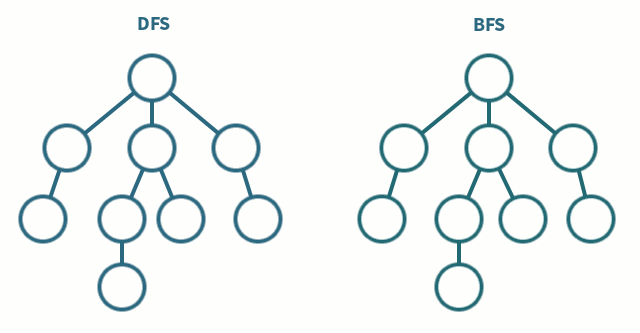
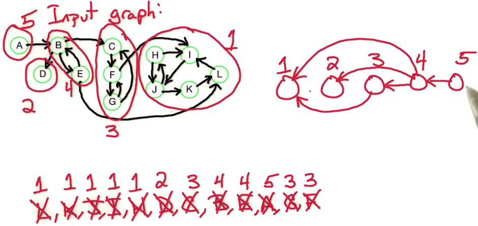
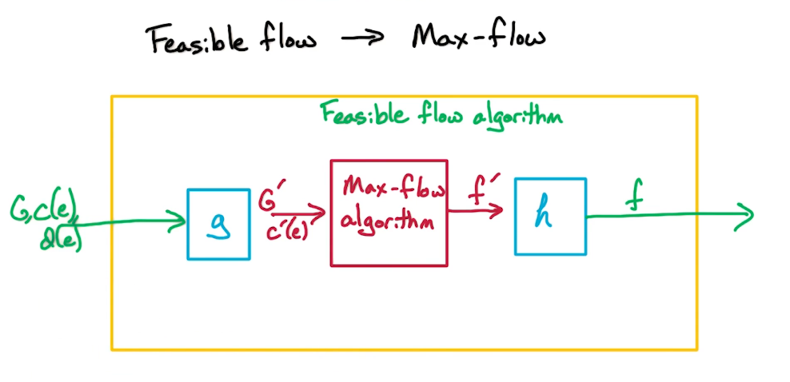

CS6515 - Intro to Graduate Algorithms¶
Intro¶
Basic Details¶
Georgia Tech: Spring 2023
Instructor: Eric Vigoda
Website: https://omscs.gatech.edu/cs-6515-intro-graduate-algorithms
Videos: https://omscs.gatech.edu/cs-6515-graduate-algorithms-course-videos
Old Course Webpage (Use at your own risk - looks pretty good to me)
Old course on youtube, Looks awesome!!
Textbooks¶
- Official
- Algorithms by Dasgupta, C. H. Papadimitriou, and U. V. Vazirani
- http://algorithmics.lsi.upc.edu/docs/Dasgupta-Papadimitriou-Vazirani.pdf
- Secondary
- Algorithm Design by J. Kleinberg and E. Tardos
- https://ict.iitk.ac.in/wp-content/uploads/CS345-Algorithms-II-Algorithm-Design-by-Jon-Kleinberg-Eva-Tardos.pdf
Lecture/Videos
Topics Covered
- DP: Dynamic Programming
- RA: Randomized Algorithms
- DC: Divide and Conquer
- GR: Graph Algorithm
- MF: MaxFlow Problems
- LP: Linear Programming
- NP: Nondeterministic Polynomial time Problems
Other Resources¶
- MIT: https://ocw.mit.edu/courses/6-006-introduction-to-algorithms-fall-2011/resources/lecture-videos/
- UWashington: https://courses.cs.washington.edu/courses/cse417/
- UIllinois: https://mfleck.cs.illinois.edu/building-blocks/index-sp2020.html
- UIllinois: https://jeffe.cs.illinois.edu/teaching/algorithms/#notes
Schedule¶
- W01 - Dynamic Programming (Lectures: DP1)
- W02 - Dynamic Programming (Lectures: DP2, DP3)
- W03 - Divide and Conquer I (Lectures: DC1, DC3, DC4)
- W04 - Divide and Conquer II (Lectures: DC5, DC2)
- Exam 1 (W01-W04)
- W05 - Modular Arithmetic and RSA (Lectures: RA1, RA2)
- W06 - Graph Algorithm I (Lectures: GR1,GR2)
- W07 - Graph Algorithm II and Max Flow I (Lectures: GR3,MF1)
- W08 - Max Flow II (Lectures: MF2,MF3,MF5)
- W09 - Max Flow III (Lectures: MF4)
- Exam 2 (W05-W09)
- W10 - Np Completeness (Lectures: NP1,NP2,NP3)
- W11 - Spring Break
- W12 - Linear Programming (Lectures: LP1,LP2,LP3)
- W13 - NP and LP (Lectures: LP4 & NP4)
- W14 - More Complexity (Lectures: NP5)
- Exam 3 (W10-W13)
- W15 - Markov Chains
- W16 - Final Week
- Final Exam - Cumulative - Optional
Grading¶
- 14% Homework
- 7% Coding Projects
- 7% Mini-Quizzes
- 3% Logistic Quizzes
- 69% Exams
- 23% a piece
- A [85-100%]
- B [70-85%]
- C [50-70%]
Refresher¶
Pseudo Code¶
There doesn't appear to be a definitive guide to pseudo code. In the loosest sense of the phrase it is somewhere between mathematical notation and code. The goal is to describe an algorithm such that any programmer can understand it, and implement it, without needing to know a particular programming language.
Of course what this means is that algorithm written using constructs found only in some programming language would automatically be dis-qualified. ie range(0,5) is found in python and should not be used. There are some exceptions to this, sum/min/max are so prevalent that there existence is virtually guaranteed. Thus they are allowed in this class. Another interesting tip to use the word as a function. length(A) would be allowed as it's meaning can be inferred, while A.len() would not be allowed.
Dot Notation
What is also not allowed is any form of dot notation. ie T.max(), S.sum() etc etc. This is unique to OOP style and is not found in many languages. But max(T), max(T[$\cdot$]) are both allowed.
Scoping Is done using indentation, not using {}
Array Indexing can be done using either () or []
- however array indexing like A[3:5] is not allowed nor are little tricks like A[-1]
Checking
- Allowed: equality(==,=) and inequality(!=,<>)
BAD Examples Good examples
# This is basically python
for i in range(1,n+1): for i = 1 to n
t[i] += 1 t[i] = t[i] + 1
# This looks like C/C++
for( i=1; i<=n; i++ ){ for i = 1 -> n
t[i]++ ; t[i] = t[i] + 1
}
for i = 1...n
t[i] = t[i] + 1
# -1 indexing is
# not language agnostic # returns the last element
return T[-1] return T[n]
# dot notation not allowed # simple functions allowed
x = A.size() x = length(A)
y = x.len()Each algorithm is graded on four parts:
a. Define the entries of your table in words. E.g., T(i) or T(i, j) is ...
b. State recurrence for entries of your table in terms of smaller subproblems.
c. Write pseudocode for your algorithm to solve this problem.
d. State and analyze the running time of your algorithm.
Big-O Notation¶
Funny Tid-Bit:
The O in Big O stands for Ordnung, which is german and roughly translates to Order of approximation.
Formal Definition
Let f(n) and g(n) be functions from positive integers to positive reals. We say f=O(g), which means that "f grows no faster than g", if there is a constant c>0 such that f(n) <= c*g(n)
Let's illustrate this with a simple example:
- Let $f_1(n)=n^2$ and $f_2(n)=2n + 20$
Which of these two is better? In this case it depends on n. For a small n, say less than 5, $n^2$ will be smaller and thus we may say that $f_2(n)$ is better. But for n>5 it is clear that $f_1(n) \gt f_2(n)$ so we may say that $f_1(n)$ scales better. We can also find a constant c as follows:
$$\large \frac{f_2(n)}{f_1(n)} = \frac{2n+20}{n^2} \le 22 $$for all n. So by the formal definition we say $f_2=O(f_1)$, and this makes sense, as 2n+20 will certainly never grow faster than $n^2$. Conversely, we may try to compute $f_2(n)/f_1(n)$ only to find that this can grow arbitrarily large. So of course we may NOT say $f_1=O(f_2)$. Because $n^2$ can certainly grow faster than 2n+20, and you cannot find a constant upper bound.
Now we suppose we introduce $f_3(n) = n + 1$. Of course $f_3$ is better than $f_2$, but only by a technicallity ... or by a constant. So it really make no difference in terms of complexity. $n+1 \le c * (2n+20)$ is true for say c=1
When we calculate Big-O notation we only care about the dominant term. We will drop constants and minor terms. So for ex: $2n^3-2n+55$ has complexity $O(n^3)$.
A couple of terms you should also be aware of are: $\Omega$, $\Theta$
- Omega: $f(n)$ is $\Omega(g(n))$ iff for some constant c and $N_0 \; f(N) \ge c*g(n)$ for all N > $N_0$
- this describes the lower bound of complexity
- A function f grows at a rate no slower than g as they head toward infinity
- Theta: $f(n)$ is $\Theta(g(n))$ iff f(n) is O(g(n)) and f(n) is $\Omega(g(n))$
- this describes the exact bound
- A function f grows at a rate equivalent to g as they head toward infinity
- Little O: $f(n)$ is o(g(n)) iff f(n) is O(g(n)) and f(n) is not $\Theta(g(n))$
- This describes the upper bound O(n) excluding the exact bound
Summary¶
Review of big-O notation
Some simple rules
- Multiplicative constants are ommitted $14n^2$ becomes $n^2$
- $n^a$ dominates $n^b$ if a > b: ie $n^2$ dominates $n$
- Any exponential dominates any polynomial: $3^n$ dominates $n^5$, it also dominates $2^n$
- Polynomials dominate any logarithm, n dominates $(\log n)^3$
- this also means for example that $n^2$ dominates $(n \log n)$
From Office hours:
- Expected: Proper Big-O notation and Sufficient explanation
Not Expected: Lower bound or average time analysis, nor is Space Complexity Analysis expected
Worst Case Runtime
Graphs¶
A graph is simply a collection of pairs. Integers, people, cities etc etc. We generally talk about the underlying objects as vertices, or nodes and the pair themselves as an edge, or arc.
Formally a simple graph is a pair of sets (V,E), where V is an arbitrary non-empty finite set, whose elements are called vertices or nodes, and E is a set of pairs of elements of V, which we call edges. In an undirected graph the edges are unordered pairs, or just sets of size two we write uv to denote the edge between u and v. In a directed graph, the edges are ordered pairs of vertices. Here we write $u \to v$ to denote the directed edge. In either case the endpoints are simple the edges, ie u and v. However in a directed edge $u \to v$ we would label u the tail and v the head.
Mathematically we write
- $\mathcal{V} = \{ v_0, \cdots , v_n \}$
- $\mathcal{E} = \{ e_0, \cdots , e_m \}$
- $\mathcal{G} = \{ \mathcal{V}, \mathcal{E} \}$
- Simple graph - is one without loops or parallel edges
- Degree (vertex) - is the number of edges connecting it
- Cycle - a path that starts from a given vertex and ends at the same vertex
- Connected ( Graph ) - is one where a path exists between every distinct pair of vertices.
- Connected Component of a Graph
- is a proper subgraph of a graph G that is not a proper subgraph of any connected subgraph
- ie it's maximally connected subgraph
- Tree - is a connected graph with no cycles
DP1: Dynamic Programming¶
Our first topic is dynamic programming. The key to really mastering dynamic programming is to do lots and lots of practice problems. Dynamic programming (DP) is a style of algorithms that relies on combining the solutions of subproblems to arrive at the solution of a larger problem in an efficient manner. A standard example of this is the Fibonnacci numbers which are defined recursively. As we will see without DP a fibonacci solution will generally repeatedly perform a great deal of work in order to arrive at the final solution. Typically, but not always, DP is used to solve optimization problems which can have multiple outcomes, but which also have an ideal or optimal solution.
In general DP algorithms can be designed using the following methodology:
- Characterize the structure of an optimal solution
- Define the value of the optimal solution in recursive terms
- Compute the value of an optimal solution (Typically in a bottom up fashion)
- [opt] Construct an optimal solution from computed information
Overview¶
We'll start with the toy example,
- computing Fibonacci numbers, to illustrate the basic idea of dynamic programming.
- Then, we'll dive into a variety of example problems to get a feel for the different styles of DP algorithms;
- Longest increasing subs sequence (LIS),
- longest common subsequence (LCS)
- the classic Knapsack Problem,
- chain matrix multiplication
- finally
- we'll look at a few shortest path algorithms using DP.
Methodology
Here is the approach we will take to design our algorithms, Note that this is an iterative process so you may need to go back a step and reformulate in order to move forward
- Find and define the subproblem. All DP problems can be deconstructed into many subproblems. This is the key to DP!
- Define the subproblem in words
- Define on a subset or prefix of data, ie a smaller problem
- Consider possible constraints, or cases.
- Note that the final problem need not be the same as the subproblem, but it does need to follow, logically, from it
An alternative way to think of this is: Consider Dynamic Programming as using arrays to define the problem - the first step of defining the subproblem would be defining what is going into each index of the array in words.
- ie For LIS, the subproblem is T(i) = length of the LIS which includes a[i]
Each index (i) will have the length of the longest increasing subsequence including the current index of the original array (a[i])
- find/define the recursive relationship
- What are the base case(s)?
- This is much more mathematical than it seems
- May often require hand worked solutions
- May require speculation on variations, often these are not presented in the problem definition
- in general most situations will fall into one of two types of recursion
- a) 1 dimensional T(i) as a function of T(1),...,T(i-1)
- b) 2 dimensional T(i,j) as a function of T(i-1,j),T(i,j-1), etc etc
- Pseudo-code:
- This is where we now define our DP algorithm. Presumably by now you should have solved the problem and subproblem. Just a quick reminder this is more mathematical and is certainly not code.
- Time-Analysis:
- As with any algorithm design you should be able to compute, and articulate, the runtime of your algorithm.
MIT Methodology
This comes from the MIT open course ware videos
Recursive Algorithm Design Paradigm
- Subproblem definition
- Relate subproblems solutions recursively (ie look for a recursive pattern)
- Topological order on subproblems to guarantee acyclic
- Subproblem/call should form a DAG, else it can fall into infinity
- Base cases of relation
- Original problem: solved via subproblems
- Time analysis
Tips and Tricks
If the input = sequence of X with length n
good subproblems are:
- prefixes x[:i]
- suffixes x[i:]
- substrings x[i:j]
- all of which are polynomial, first two are linear
Class Methodology¶
This is the method advocated by this class
FIRST : Define the subproblem in words
- Provide a short explanation in English explaining the meaning of each table entry
- almost all DP problems revolve around an array of 1 or more dimensions
- so define the values of this array in words
- ie T(i,j) is the min sum of values up to i,j index
- consider constraints
- can i,j be negative?
- is there a boundary? (There almost always is !)
SECOND : Define the Recurrance relationship in terms of subproblems
- This is the mathematical definition or specification of the table defined in (1)
- What base cases are required?
- Usually T(0) or T(i,0) need to be set to something
- without a base case what would your first recurrance execution use?
- Also These cannot part be part of your recurrance!
- so if T(0) is your base case your recurrance begins at 1
- T(i) in terms of T(i-1) or T(i-2)?
- here T(i-1) & T(i-2) are your subproblems.
- They have been solved and are used to solve the current case T(i)
- you may need to use a max/min here
- you may end of with a piecewise function
THIRD : Write out the algorithm in pseudocode
- Write out your pseudocode (see above refresher)
- This includes the base case
- This should also include the recurrance
- think of this as blending math and programming
- if your pseudocode would compile chances are it is not good!
FOURTH : Perform a runtime analysis
- this must be done in Big-O notation
- can use words too, but still use the big-O
- Some people like to annotate their pseudocode with Big-O and then reference it
Ex 1: FIB-Fibonacci Numbers¶
Given an integer n, we're going to look at an algorithm for generating the n Fibonacci number. This will be a very simple algorithm, but it will illustrate the idea of dynamic programming and then, we'll look at dynamic programming in general; the techniques for designing a dynamic programming algorithm and we'll look at some more sophisticated examples.
Recall the Fibonacci numbers are the following sequence, 0, 1, 1, 2, 3, 5, 8,13, 21, 34 and so on. There's a simple recursive formula that defines the Fibonacci numbers. The first two numbers in the sequence are 0 and 1, and then the n Fibonacci number (n>0) is the sum of the previous two Fibonacci numbers. We're going to take as input a non-negative integer n. Our goal is to output the n'th Fibonacci number. We want an efficient algorithm and therefore we're aiming for a running time which is polynomial in n.
Now, the Fibonacci numbers are defined by this simple recursive formula. Therefore, we might think a recursive algorithm is a natural algorithm for this problem. Let's look at that natural algorithm, that natural recursive algorithm and then we'll analyze it.
A very simple algo using recursion
Fib1(n)
In : n >= 0
Out: f(n)
if n = 0 then return 0 O(1)
if n = 1 then return 1 O(1)
return (Fib1(n-1)+Fib1(n-2)) T(n-1)+T(n-2)Let's now consider the runtime of our algorithm. The times are provided at the right.
- $T(n) \le O(1) + T(n-1)+T(n-2)$
- what this really just amounts to is the sum of the recursive steps + the base case run time.
- you may also recall from an old math class that
- $F_n \approx \frac{\phi^n}{\sqrt{5}}$ which is the golden ratio ($\phi \approx 1.618$)
- Which effectively tells us that the runtime of the recursive approach is exponential
If you were to draw this out as a tree you would quickly that each recursive branch will perform many of the same computations. For example take n = 5. then both the first branch Fib1(n-1) as well as Fib1(n-2) would require the value Fib1(n-3). And they would compute it independently. Frankly this is unnecassary. if we can devise a method where by we can re-use computation it would reduce the running time by 50%!
$\color{red}{\text{Algorithm}}$
Fib2(n)
F[0]=0
F[1]=1 O(1)
for i=2 to n O(n)
F[i]=F[i-1]+F[i-2]
return F[n]Notice key differences here
- we use matrix notation to denote previous values in contrast to the previous algo which used function
Also notice that the run time is O(1)+T(n) which is linear. This is a significant improvement over the recursive approach.
Key Take-aways
- No recursion in a Dynamic Programming solution
- we don't use any hashtables or memoization, which is a popular approach that makes use of a memory
- Practice, Practice, Practice!! Is the only way to get better at this.
Ex 2: LIS-Longest Increasing Subsequence¶
Our next example is LIS, longest increasing subsequence, in a given set of n numbers $a_1,a_2,\cdots,a_n$. Note the goal here is just the length of the subsequence. Not the subsequence itself.
Input: 5, 7, 4, -3, 9, 1, 10, 4, 5, 8, 9, 3
Substring: Set of consecutive elements, For example
- -3, 9, 2, 10
- 4
- 9, 1, 10, 4, 5, 8, 9, 3
Subsequence: any subset of a elements in order (skipping elements is allowed). For example
- 4, -3, 1, 9
- 1,
- 5, 7, 3
finally an increasing subsequence should be clear
- 5, 7, 3
- 4, 9, 10
Now just find the longest one which we can see is -3, 1, 4, 5, 8, 9. with length 6
Designing a DP algorithm
Step 1 : define the subproblem in words (ex: F[i] is the i'th fibonnacci number )
Step 2 : state the recursive relation (ex: F[i] = F[i-1] + F[i-2])
For our LIS:
Step 1: Let L(i) = length of the LIS on $a_1,a_2,\cdots,a_i$
Step 2: Now we need to express L(i) in terms of L(1),...L(i-1)
This gets a bit tricky ...
Consider the input from before
1, 2, 3, 4, 5, 6, 7, 8, 9, 10, 11, 12 index
5, 7, 4, -3, 9, 1, 10, 4, 5, 8, 9, 3
Let's now consider the length of the LIS up to that point
1, 2, 2, 2, 3, 4, 4, 4, 4, 5 Let's pause and consider
5, 7, 4, -3, 9, 1, 10, 4, 5, lis = 5, 7, 9,10 && -3,1,4,5
but
5, 7, 4, -3, 9, 1, 10, 4, 5, 8 lis = -3, 1, 4, 5, 8
why did this happen! Ponder a bit ...
a few minutes later you'll see that it's the last digit that makes the difference
Now we need to move towards designing an algorithm. There is really no silver bullet approach. In a nutshell if you can do it by hand then you can get a computer to do it.In this case after some trial and error we came up with the following recurrance
$L(i) = 1 + max_j\{L(j) : a_j < a_i \& j < i \}$
Now we can design an algorithm that
$\color{red}{\text{Algorithm}}$
LIS(a1,s2,...,an):
for i=1->n:
L(i)=1
for j=1->(i-1):
if aj < ai & L(i) < 1+L(j):
then L(i)=1+L(j)
# v1 presented in video
max = 1
for i=2->n:
if L(i) > L(max)
then max = i
return L(max)
# v2
return max(L(:))What is the running time here? We have T(n^2) for the first loop with an inner loop and T(n) for the second. Therefore we have T(n^2)+T(n) which equates to O(n^2)
Ex 3: LCS-Longest Common Subsequence¶
Input 2 Strings:
- X = x_1,x_2,...,x_n
- Y = y_1,y_2,...,y_n
Goal: the length of the longest string that appears as a subsequence of both X & Y
As an example consider:
X = BCDBCDA
Y = ABECBAB
Then the longest subseq is BCBA with a length of 4!
Similar to before we will now look at our two step process
Step 1: Design subproblem in words
- Try the same problem on a prefix of input
- for $1 \le i \le n$
- Let L(i)=length of LCS in X[1,i],Y[1,i]
Step 2: state the recursive relation, Express L(i) in term of L(1) to L(i-1)
- ???
This one turns out to be a bit more challenging then the previous LIS
(X,Y)=BDC,ABE -> then LCS=B & L(3)=1
(X,Y)=BDCB,ABEC -> then LCS=BC & L(4)=2
(X,Y)=BDCBC,ABECB -> then LCS=BCB & L(5)=3In order to get a smaller subproblem, we're going to look at the last character. So we're going to look at X_i and Y_i.
We're going to look at how X_i and Y_i are used in the solution to l of i and then, we can use the solution to the subproblem of size i minus one. We take the optimal solution for the subproblem of size i minus one and then we append on the solution for X_i and Y_i.
Now, there are two cases to consider,
- either of these last characters are different,(in this case)
- or they're the same.
We're going to consider these two cases separately.
- The first case is when the last characters X_i and Y_i are the same.
- The second case is when the last characters X_i and Y_i are different.
We're going to do this case first. (X_i = Y_i) The last characters are the same. This turns out to be the easy case. Now, let's modify our example so that the last characters are the same.
So, I append on character C onto the end of both strings. Now, in this case, where the last character is the same,
- X = BCDBCDAC
- Y = ABECBABC
What do we know about the longest common subsequence? Well, we know it must include and must end in this common character.
Why? Well, it gives me a common subsequence and suppose it does not include this last character. Well, then, I can append on this common character and I get a longer subsequence. So, therefore, the longest common subsequence must include this last character. So, in this case, where X_i equals Y_i, what do we know about L(i)? We know that the longest common subsequence includes this last character.
So, we get one in the length for that common character and then we can simply drop this last character and then we can take this input sequence of length (i-1) and we can take the longest common subsequence in this input sequence of length i-1 and append on this common character C. What is the length of the longest common subsequence in this input? It's simply l(i-1). So, we have a recursive relation: L(i)=1+L(i-1)
We can express l of i in terms of l of i minus one. This handles a case when X_i equals Y_i. Now, let's take a look at the case when X_i is not equal to Y_i.
Let's take a look now, at the case when the last characters are different. This the situation in our original example,
- X = BCDBCDA
- Y = ABECBAB
where Xi is not equal to Yi, A is not equal to B.
Now in this case, when Xi is not equal to Yi, the last character of the longest common subsequence can either be A or B, or neither. but not be both.
Suppose A is the last character in The Long common subsequence. And what we know about Yi is B, but B has nothing left to match with in X. Therefore, we know the LCS does not include B Yi. Similarly, if the last character is B says match with this B. Then the LCS cannot include A, because it has nothing left to match within Y.
The key point is that the longest common subsequence for this prefix of length i, either does not include Xi or it does not include Yi or both. So either Xi is dropped or Yi is dropped or both of them are dropped. Now let's consider the three cases. If both of them are dropped, then we can simply take the longest common subsequence in this prefix of L(i-1). So it's similar to the equal case except we don't get this plus one here. Now what happens if just Xi is dropped?. Well then we have a prefix of L(i-1) in X and a prefix of L(i) in Y. So we have no way of looking this up in our table. The solution to this sub problem is not in our table, because the prefixes are of different length in X and Y. And notice, even if we knew how Yi is matched up with an X, for instance, if we knew this B was match with this B, then we have a prefix of Length 3 and X and we have a prefix of length 6 and y. So there's still a different length.
Similarly, if Yi is not included, So we dropped this last character from Y then we have prefix of length 7 in X and a prefix of length 6 in Y. So the prefixes are of different length in X and Y. And once again, the solution to this sub problem is not in our table because these prefixes are on a different length. So for this case where where Yi is dropped, we need to look up the longest common subsequence in the prefix of L(i) in X with the prefix of L(i-1) in Y. Now this isn't in our table presently and similarly when we try to solve this problem, well then we might chop off the last character from Y and then we get even shorter prefixes in length Y. So for this sub problem definition, we are unable to define a recurrence. We are unable to express L(i) in terms of smaller sub problems, but we got some insight about what is a valid. What is a good sub problem definition. The difficulty here was that the prefixes are of the same length for x and y, but we need to allow them to be of different lengths.
So how do we achieve that?. We're going to change from a single parameter i to a pair of parameters i & j. These correspond to the length of the prefix X and j will correspond to the length of the prefix Y. And, our table will now be a two dimensional table. So L(i,j) will be the length of the longest common subsequence in X1 through Xi with Y1 through Yj. And then, we're going to try all possibilities for i and j.
Let's now try to repeat our steps using this insight. ( With two indices i&j and a 2-Dim table ).
Subproblem Def
- For i&j where $1\le i\le n$ and $1\le j\le n$
- Let L(i,j)=length(LCS) in X[1,i],Y[1,j]
Recurrence
- for j=0 L(i,0)=0
- for i=0 L(0,j)=0
- This takes care of the base cases
- This leads to three cases for unequal last characters
- $X_i$ is not used in the optimal solution -> L(i,j)=L(i-1,j)
- $Y_j$ is not used in the optimal solution -> L(i,j)=L(i,j-1)
- Neither is used in the optimal solution
- In either case we want the max
- so L(i,j)=max{L(i-1,j), L(i,j-1), 1+L(i-1,j-1)}
- which we can simplify to L(i,j)=1+L(i-1,j-1)
We can summarize as
$ L(i,j)
\begin{cases}
max\{L(i-1,j), L(i,j-1)\} & X_i \ne Y_j \\
1+ L(i-1,j) & X_i = Y_j \\
\end{cases}$
Finally we can implement our algorithm
$\color{red}{\text{Algorithm}}$
LCS(X,Y):
for i = 0 -> n : L(i,0)=0
for j = 0 -> n : L(0,j)=0
for i = 1 -> n:
for j = 1 -> n:
if X[i]=Y[j]
L(i,j)=1+L(i-1,j-1)
else
L(i,j)=max{ L(i,j-1), L(i-1,j) }
return L(n,n)Be sure to observe that L is a table ( not a vector like previous problems )
Ex 4: Contiguous Subsequence¶
This comes from the text book: DPV-Algorithms
6.1 A contiguous subsequence of a list S is a subsequence made up of consecutive
elements of S. For instance, if S is
5, 15, −30, 10, −5, 40, 10,
then 15, −30, 10 is a contiguous subsequence but 5, 15, 40 is not. Give a
linear-time algorithm for the following task:
Input: A list of numbers, a1,a2, . . . ,an.
Output: The contiguous subsequence of maximum sum (a subsequence
of length zero has sum zero).
For the preceding example, the answer would be 10,−5, 40, 10, with a sum of 55.
(Hint: For each j ∈ {1, 2, . . . , n}, consider contiguous subsequences ending
exactly at position j.)We begin by defining our subproblem. We're given a hint so let's try using it
- Let T(i) = max sum of contiguous subsequences ending at i, where i goes from 1 to n
Now we define our recurrance relationship
- Base Case:
- T(0) = 0
- Recurrance
- T(i) = ...? this is not so simple
- so let's work it out by hand
case(1) : 5
- Ans: 5, with a max sum of 5
Case(2) : 5,15
- Ans: 5,15 with a max sum of 20
case(3) : 5,15,-30
- Ans: 5,15 with a max sum of 20
- This is rather enlightening! because the last digit is neg it doesn't make sense to end on it. We just take the sum of the previous subproblem. This could be our recurrance
we could try
- T(i) = a(i)+T(i-1) when a(i) > 0
- = T(i-1)
but we could probably just put these together as
- T(i) = max{ a(i)+T(i-1), T(i-1) }
- when a(i) < 0 we will take the latter sum, when a(i) > 0 we take the former
but there's a hidden error here, consider the next case
5, 15, -30, 10
5, 20, 20, 30
- this is not accurate, the final sum should still be 20
- one last tweak is just to zero out the sum for indices ending with a neg valueFinally, we can define our recurrance relationship
- Base Case:
- T(0) = 0
- Recurrance
- T(i) = a(i) + max{ T(i-1), 0 }, for 1 <= i <= n
let's do one last trial using our formula
5, 15, −30, 10, −5, 40, 10
5, 20, -10, 10, 5, 45, 55
- notice what happened @ -5, interesting eh?Now we are ready to write our algo
T(i) = 0 for i = 0 ... n Initialization step + base case
for i: 1 -> n:
T(i) = a(i) + max( T(i-1), 0 )
return max(T(:))This should run in just O(n) for the one loop. Yay it's linear!!
1.x - Coins¶
This one comes from the MIT lectures
https://www.youtube.com/watch?v=KLBCUx1is2c&list=PLUl4u3cNGP63EdVPNLG3ToM6LaEUuStEY&index=26
We now present the alternating coin game. (Two players, we need to find the optimal strategy)
Problem Description
- Given: a sequence of coins with values $v_0,v_1,\cdots,v_{n-1}$
- let's say {5,10,100,25}
- Rules
- players take turns choosing either left-most or right-most coins
- players with the most points at the end wins!
What's the subproblem here?
- we cannot use either suffixes nor prefixes, because players can choose from either side
- we cannot use both because that is unheard of (ie a DP problem that uses both suffixes and prefixes)
The next best option is a substring approach.
- Let X(i,j)=max total value that I (player 1) can get from coins with value $v_i,\cdots,v_j$
We also need to implement some sort of index or categorical variable to represent the player p
- new
- Let X(i,j,p)=max total value player, p, can get from coins with value $v_i,\cdots,v_j$
- p={me,you} you opposing
Now we move onto the relation
- X(i,j,me) = max{X(i+1,j,you)+v_i, X(i,j-1,you)+v_j} = max{left-coin,right-coin}
- Similarly
- X(i,j,you)= min{X(i+1,j,me), X(i,j-1,me)} = min{ left-coin, right-coin}
- player 2 is working to minimize your score, thereby maximizing theirs
- also player 1 doesn't get the points if player 2 is moving hence the absence of $v_i$ and $v_j$
Topological order: increasing (j-i)
Base cases
- X(i,i,me)=v_i
- X(i,i,you)=0
Original Problem
- X(0,n,me)
Time Complexity
- T: $O(n^2) \dot O(1) = O(n^2)$
Exercises¶
- [DPV] 6.1 (Contiguous subseq)
- [DPV] 6.2 (Hotel stops)
- [DPV] 6.3 (Yuckdonalds)
- [DPV] 6.4 (String of words)
- [DPV] 6.11 (longest common subtring)
DP2: Knapsack & Chain Multiply¶
Edit Distance ( Bonus )¶
Problem
Given two strings x & y, what the cheapest possible sequence of character edits to turn x -> y given 3 possible edit functions: Insert, Delete, and Replace
Example
Let S = 〈A,B,C,A,D,A〉
and T = 〈A,B,A,D,C〉
We could convert S to T using 3 edits: Delete S3(C); Delete S6(A); Insert S5(C).
Assumptions What does cheapest mean? For our purposes we will interpret this as the min cost. What is the cost? We're not given this so let's assume a use a cost of 1 for each func call.
Suppose we try suffixes? ie we consider turning x[i:] to y[i:]. Then we will be facing a problem with a potential size of O(|x|*|y|).
Option 1
we try a brute force approach comparing each character at the same index.
Then the cost is
- $\large C(i,j) = min\{ replace(x[i],y[j])+D(i+1,j+1),insert(y[j])+D(i,j+1),delete(x[i])+D(i+1,j) \} $
- note that func:replace advances both indices but insert & delete advance only the affected string
- this is necassary so that we are unnecassarily replacing a character that is next in the unaffected string
$\color{red}{\text{Algorithm}}$
for i=0->m: E(i,0)=i
for j=1->n: E(0,j)=j
for i=1->m:
for j=1->n:
E(i,j)= min{ replace(x[i],y[j])+D(i+1,j+1)
,insert(y[j])+D(i,j+1)
,delete(x[i])+D(i+1,j)
}
return E(n,m)Time Complexity: O(nm)
2.0: Knapsack¶
The next problem we're going to discuss is the knapsack problem. You can imagine some applications of this are, where we're scheduling jobs and we have limited resources or limited computation time and we want to choose the jobs with most value for us.
In this problem, the input is n objects. For each object were given its weight and its value. And we'll assume that the weights and the values are all integers.
- weights $w_1,...,w_n$
- values $v_1,...,v_n$
Now we're given one additional input parameter, B, which is the total capacity available.
Our goal is to find a subset of objects that
- fit in the backpack; meaning that their total weight is in most capital B (Total weight <= B).
- And we're trying to find the subset with maximum total value.
So let's try to restate this in more precise mathematical terms.
What do we mean by the total weight is in most capital B. We want to look at those objects which are in our subset or chosen subset. and whose total weight is at most B
- $\large \sum_{i \in S} w_i \le B$
The total value for a subset of objects is the sum over the objects and the subset of their individual values. And we're trying to maximize that sum. We're trying to find the subset of objects with maximum value,
- $\large max\left\{\sum_{i \in S} v_i \right\}$
Let's summarize the problem one more time just to make sure everybody understands.
Find subset S of objects with weights $w_i$ and values $v_i$ such that
- $\large \sum_{i \in S} w_i \le B$ AND $\large max\left\{\sum_{i \in S} v_i \right\}$
Our goal is to find the subset of objects, a subset of 1 through n, where that subset fits in the backpack. So the chosen subset has total weight at most capital B and the subset we chose has maximum total value.
So we're trying to find the subset with maximum value, total value, and fits in the backpack.
There are two natural variants of this problem, and both have different dynamic programming solutions.
- Version 1: There's one copy of each object. So we're trying to find a subset without repetition.
- Version 2: There's unlimited supply of each object.
We're going to start up by looking at version 1. So we have at most one copy of each object that we can use. and then we'll go back, and we'll look at the second version of the problem where we have unlimited supply of each object.
V1 - no repetition¶
Now if you are presented with this problem in real life, the first approach you might try is a Greedy approach.
Let's look at an example
objects 1 2 3 4
values 15 10 8 1
weights 15 12 10 5
Total Capacity: 22Questions
- What is the optimal solution for this problem?
- What does the subset of objects which attain the maximum value while fitting in the backpack?
Solutions:
- the maximum value that we can obtain is 18, that is obtained by using objects two and three.
- The total weight of these objects is 22,12 + 10 and the the total value is 10 + 8 is 18.
Let's compare this to the greedy algorithm.
Greedy Approach - BAD
A greedy approach would take the most valuable object and try to fill up the backpack as much as possible with that most valuable object. What is the most valuable object? That's not the one with the total maximum total value. It's instead the one with the maximum value per unit of weight.
The greedy approach would sort the objects by their value per unit of weight $r_i=\frac{v_i}{w_i}$, which is this, quantity $r_i$, which is states value divided by its weight.
In this example the objects are already sorted by that ratio. We have that $r_1 \gt r_2 \gt r_3 \gt r_4$. So now what would a greedy approach do? The greedy approach would try to add object one, if it can, in this case it can, then we go to object two, and it would try to add object two if it can put.
In this example, once you add in object one, you have 15 units of weight. You only have seven units of weight remaining, so you can no longer add in object two. Then we go to object three. The next most valuable object. We would try to add it in, does it fit? No it doesn't fit. Then we try to add object four, if it can. In this example it can because 15 + 5 is 20. It fits in the backpack so the greedy approach could obtain the solution using objects one and object four. Notice that the total value of this solution, object one and object four is 15 + 1, so it has total value 16, whereas our optimal solution has total value 18.
Dynamic Programming Approach
Let's now go back and try the DP approach.
Recall our basic recipe for designing a dynamic programming algorithm.
- The first step is always to define the sub-problem in words.
- first attempt is always to try the same problem on a prefix of the input.
- Therefore, we let K(i) be the max value achievable using a subset of the first i objects.
- $\large K(i) = max\left\{\sum_{i\in S} v_i \right\}$
- All we've changed is we've changed the set of objects available to us from the first N objects 1 through N to a subset of objects 1 through I.
- Our second step in our recipe for designing a dynamic programming algorithm is to find a recursive relationship
- K(i) = some_function(K(1),...,K(i-1))
Let's give this another try
objects 1 2 3 4
values 15 10 8 1
weights 15 12 10 5
we compute by hand
i 1 2 3 4
K(i) 15 15 18 18
w 15 15 22 22
for i=1,2 we took object 1,
for i=3 the optimal solution requires taking a suboptimal solution at first,
for i=2, to arrive at objects {2,3}.
By taking object 2 first we have enough spare capacity in our back pack to take
object 3, netting a higher total value.
In effect: Take suboptimal to i=2 when capacity <= B - w3
for i=2, B-w3 = 12. Capacity of Object 2 = 12 so we take it. Object 1 capacity is 15 > B-w3.What may not be so obvious yet though is that taking the suboptimal approach actually violates the subproblem definition stated above. We will need to redifine the subproblem in order to align to the event that the recurrance is not always the previous subproblem solution. This points us in the right direction because what we need to do is limit the capacity available for these subproblems. So in some sense we want to take a prefix of the objects, 1 through i, and we want to take a prefix of the capacity available. This is going to lead us to our second attempt for the design of a dynamic programming algorithm for this problem. We're going to define the subproblems so that it considers a prefix of the objects and it varies the capacity available.
Subproblem redefined
- for i and b where $0\le i\le n$ and $0\le b\le B$
- let K(i,b)=max value achievable using a subset of objects 1,...,i and with total weight <= b
Recurrence
The recurrence is going to have two scenarios.
- Either we include object i,
- or we don't include object i.
# we have to know whether object i even fits in the backpack or not
# If it doesn't then we know we cannot exclude it
if w_i <= b: # then it can fit
# If we can include object i, then gain v_i so we have the option v_i + K(i-1,b-w_i)
# If we don't include object i, then we have K(i-1,b)
then K(i,b)=max{v_i + K(i-1,b-w_i) , K(i-1,b) }
else # it cannot fit, the weight of object i is strictly larger than b
K(i,b)=K(i-1,b)
This defines a recurrence, it's still missing the base cases
So let's define them so we may move forward to writing our algorithm
For the first row of our table, i=0
thus K(0,b) = 0 is our max value
For the first col of our table, b=0
this K(i,0) = 0 as we have no space in our backpack to store objects, kinda sucks eh$\color{red}{\text{Algorithm}}$
for b=0->B: K(0,b)=0
for i=0->n: K(i,0)=0
for i=1->n:
for b=1->B:
if w[i] <= b
then K(i,b)=max{v_i + K(i-1,b-w_i) , K(i-1,b) }
else
K(i,b)=K(i-1,b)
return K(n,B)Our total time complexity is O(nB). O(n) for the outer loop and O(B) for the inner loop
Is this efficient? Where we define efficient as polynomial in the input size.
No! It is not polynomial in the input due to the B term. B is just a number and as such it takes (log B) space in storage. while n, as an array, will change due to the size of the problem, the space needed to store B will not.
Polynomial Runtime
Recall that the run time of Knapsack is O(nB) where n=num of items, and B=max possible weight.
Q: Explain why this is not polynomial in the input size
A: Understanding this requires a careful reading. If n doubles from say 10 to 20 then the size of the input to the algorithm changes as well. But consider what happens if B is changed from 16 to 32. The space required for 32 is one bit greater than that required for 16.
V2 - with repetition¶
Now, we'll look at the version of the problem where we have unlimited supply of every object. Here, we can use an object as many times as we'd like as opposed to the other version of the problem where we can use an object at most once. Now, let's go ahead with our recipe for designing a dynamic programming algorithm.
- Define the subproblem.
- Our subproblem for the previous version of knapsack was
- K(i,b) = max value we can obtain from a multiset of objects {1,...,i}
- with total weight $\le$ b.
Now in this version, we're allowed to use objects multiple times. So instead of a subset where an object appears at most once, we're going to consider a multiset where an object can appear multiple times in the set. That's the only difference from the previous definition of the subproblem.
Now, let's go ahead and see if we can write a recurrence for this subproblem definition. let's try to express K(i,b) in terms of smaller subproblems.
Similar to before we're going to have two scenarios. Either we include object i or we don't include object i and we're going to take the best of those two so we're going to take the max.
In this version of the problem, we will also have two scenarios.
- Either we include no more copies of object i
- the solution is k is k(i-1,b)
- or we're going to add in another copy of object i.
- And for that copy of object we get value $v_i$ and we get the optimal solution to the subproblem where the capacity went down by $w_i$.
- $v_i + k(i,b-w_i)$
- Notice here the first index is i, whereas in the other version of knapsack it was i-1 because in this version, we're allowed to use object i again even another copy, additional copies.
$k(i,b)=max\left\{ k(i-1,b) , v_i + k(i,b-w_i) \right\}$
Is this recurrence in fact a valid recurrence? Are we expressing this current subproblem in terms of smaller subproblems? Previously, when we wrote recurrence for the current entry we always expressed it in terms of entries in previous rows.
- So k(i,b) would be in row i
- and $k(i-1,b)$ would be in a row i-1.
- but $k(i,b-w_i)$ is actually using the same row, but since it refers to a previous column. So all is good.
So we can use the same recurrance as in the previous situation, with the same caveat (ie: $v_i + k(i,b-w_i)$ appplies if $w_i \le b$).
Our running time is again O(n*B).
$$\large k(i,b)=max\left\{ k(i-1,b) , v_i + k(i,b-w_i) \right\}$$Let's take a look at this algorithm for a moment. Often, when we get a solution which uses a two or three dimensional table, it's useful to look at it and see if we can simplify it to get a smaller table. And we might get a faster or less space or just a simpler solution.
Now, why do we have this parameter i?
- The point of the parameter i in the original version of the knapsack problem, was to keep track of which objects we've considered or not. So, after we consider object i, then we can look at the first i minus 1 objects and look at a subset of those. But in this version of knapsack, we're allowed to use the object multiple times.So actually, it's not at all clear that we need to consider this parameter i. And in fact, we can get rid of it.
So, let's try to do our dynamic programming solution to this version of knapsack where we have a single parameter. The single parameter is going to be, little b, corresponding to the total weight available. And this little b is going to vary between the maximum capacity available, capital B, and zero (ie $0 \le b \le B$)
Subproblem Definition:
for b where $0 \le b \le B$:
- K(b)=max value attainable using weight $\le b$
Recurrance: Try all possibilities for the last object to add
- $\large K(b)=\underset{i}max \left\{ v_i + K(b-w_i) : 1 \le i \le n, w_i \le b \right\}$
So, the recurrence for k of b is going to be, we're going to try all possibilities for the last object to add and we're going to take the best of those. How do we get the best? We take the max, and we'll use i to denote the last object that we're trying to add. So, last object that we're going at is going to be object i, and we'll consider all i between one and n. If we add in object i, we gain value, Vi. And in addition, we gain the optimal solution to the subproblem where the total weight goes down by Wi. This is expressed in K(b-Wi). And we're trying all possibilities for i between one and n. But we need that the i'th object fits in the backpack.
Version 1: to solve the initial problem
Version 2: if the multiset solution is also required
Ex - Electoral College¶
In this problem, we want to determine the set of states with the smallest total population that can provide the votes to win the electoral college. Formally, the problem is the following: You are given a list of n states along with their population $p_i$ , and the number of electoral votes $v_i$ , for $1 ≤ i ≤ n.$
Also, you are given Z, the number of electoral votes needed to win. All electoral votes of a state go to a single candidate. Our goal is to find a set of states S with the smallest total population that has at least Z electoral votes in total. You only have to output the total population of the set S, you do not need to output the set itself.
Example: if n = 5, populations are P = [200, 100, 30, 700, 250], electoral votes are V = [5, 1, 2, 7, 6] and Z = 12, then the solution is 480 since 480 = 200 + 30 + 250 and states 1, 3, 5 have 5 + 2 + 6 = 13 electoral votes. Note in this example: p2 > p3 but v2 < v3, this might occur, but shouldn’t affect your algorithm. Design a dynamic programming algorithm to solve this problem. (Faster (and correct) algorithm in big-O notation is worth more credit.)
Intuition
This should feel familiar as we recognize it as a knapsack type problem. so we will approach it similarly
0 1 2 3 4 5 ... Z z->Z
0
1
2
3
...
n
i->n
States1-Define the subproblem
T(i,z) = min population needed to achieve at least z votes using states 1,...,i
- this doesn't tell you which states are needed, that's outside the scope of the ask
2-Define the Recurrance Relation
Recall that in the knapsack version of this problem type we ended up with two cases. Case 1 occurred when we had room in our knapsack for an item and we had to choose whether or not to include that item. Case 2 was when we didn't have enough room in our knapsack for that item.
Base Case
We begin with a base case similar to before, Don't forget your base case!!
T(0,z) = $\infty$ for $0 \le z \le Z$
- is our base case, why?
- well because if we have no states than we can never get to Z votes to win
Recurrance
Suppose v[i] < z, ie the number of votes provided is less than that needed
- we may want to add this to our bag of states $P_i + T(i-1,z-v[i])$
- we also may want to skip it and take $T(i-1,z)$
- so we take the min of the two: $\min\{T(i-1,z) , P_i + T(i-1,z-v[i]) \}$
Suppose v[i] >= z, ie the number of votes provided is greater than that needed
- in this case we could just take $P_i$
- or we could have taken previous states? well that is found in T(i-1,z)
- so we take the min of the two min{$P_i, T(i-1,z)$}
Finally we can summarize
- Base: T(0,z) = $\infty$ for $0 \le z \le Z$
- if v[i] < z then $\min\{T(i-1,z) , P_i + T(i-1,z-v[i]) \}$
- if v[i] >= z then $\min\{P_i, T(i-1,z) \}$
- where $1 \le z \le Z$
3-Pseudo Code
for z: 0 ... Z : T(0,z) = infty
for z: 1 ... Z :
for i: 1 ... n :
if v[i] <= z:
T(i,z) = min{T(i-1,z) , P_i + T(i-1,z-v[i]) }
if v[i] > z:
T(i,z) = min{P_i, T(i-1,z) }
return T(n,Z)4-Run Time
T(n) + T(nZ) = O(nZ)
2.1: Chain Multiply¶
Our next dynamic programming problem is chain matrix multiply. This one will be a little different style from some of our early example. Actually, the solution will be a bit more complicated than the earlier examples that we looked at. So, let's look at a specific example so we can motivate this problem and then we'll go back and define the general problem. Our example will have four matrices A, B, C, D. Think of these matrices as having integer values for the entries.
I'm going to assume the reader understands matrix multiplication.
Our goal is to compute the product of these matrices: ABC*D. And we'd like to do this in the most efficient manner possible.
What exactly do we mean by most efficient?
Suppose
- A has of size 50 x 20
- B is of size 20 x 1
- C is of size 1 x 10
- D is of size 10 x 100
Recall that matrix multiplication is associative, thus there are many ways to compute them.
$((AB)C)D = (A(BC))D = (AB)(CD) = A((BC)D) = A(B(CD))$.
Although the order does not affect the end value it does however affect the efficiency.((AB)C) requires (50x20x1) = 1000 computations
- (A(BC)) requires (20x1x10) = 200 computations
In order to figure out which is the best or most efficient method for computing the product of these matrices, we need to assign a cost for each of these operations. So, let's take a look again at matrix multiplication and then we can figure out a reasonable notion of cost.
Suppose we have two matrices W(a x b) and Y(b x c)
Then Z = WxY is of size (a x c)
also we can compute $Z_{ij} = \sum_{k=1}^b W_{i,k} \cdot Y_{k,j}$
roughly speaking, for the full multiplications, there will be
- b multiplications
- b-1 additions
- acb multiplications
- ac(b-1) additions
So we will take acb as the cost of our matrix multiplication. (recall that most if not all DP problems are optimization problems. So you will almost always need number to minimize/maximize.)
Let's generalize our initial problem
- given n matrices $A_1,A_2,\cdots,A_n$
- where $A_i \text{ is }m_{i-1} \times m_i$
- This is our input - we don't care about actual values since we're not computing
- find the min cost of computing $A_1 \times A_2 \times \cdots \times A_n$
- this is our goal
To get some intuition for this problem, Let's look at an alternative representation of the problem and instead of looking at it as parenthesization we're going to represent it as a binary tree.
How these subtrees are structured tells us the parenthesization.
Here is a slightly modified version that articulates the same general problem in binary tree format
As you can see we will take the substring approach.
There's going to be two parameters, I and J.
- I is the start of the substring, J is the end of the substring.
- with $1 \le i \le j \le n$
And then we're going to define our subproblem as
- C(i,j) is the minimum cost for computing the product of the matrices Ai through Aj.
Recurrance for C(i,j)
- the simplest case is when i = j
- then C(i,i)=0 , these are simply the diagonals of the final matrix
- the next case is when i $\lt$ j representing the substring $A_i,...,A_j$
- which we split at say l, to form two substrings, or branches
- Left node is $A_i,...,A_l$ = C(i,l) = cost is m_i-1 x m_l
- and Right node is $A_{l+1},...,A_j$ = C(l,j) = cost is m_l+1 x m_j
- final cost of $A_i,...,A_j$ is just m_i-1 x m_l x m_j
- now we compute the min cost for each subtree
- you should be able to see where this is going
- as we go down the tree we keep splitting
- eventually we should get to substrings that are easy to solve locally
- which we split at say l, to form two substrings, or branches
- finally
- $\large C(i,j)=\underset{l}min\left\{ C(i,l)+C(l+1,j) +(m_{i-1} m_l m_j) \; i \le l \le j-1 \right\}$
- minimum l over the sum of the left cost, the right cost, and the merging cost
We take the mean over the choices of L where l can vary from i to j-1. And for that specific L, the cost is the cost for the left subtree C(i,l) plus the costs for the optimal right subtrees C(l+1,j) plus the cost of merging that left subtree with that right subtree which is $(m_{i-1} m_l m_j)$. We take the sum of those three terms and we take the L which minimizes that sum some That's our recurrence for C(i,j).
Before we detail the Pseudocode for this dynamic programming algorithm, let's go back and look at our recurrence a little more carefully, and see how we're going to fill the table up.
What we're looking at in this situation is a two-dimensional table, let's call it C. We're trying to compute the upper diagonal of this table. Where the entries where j is at least i. Recall that our base case was diagonal, these are the entries C(i, i). This is the first thing we're going to fill in.
What is the next thing that we're going to fill in? The next entries we're going to fill in are the entries C(i,i+1), which are just the off diagonals. After this we will compute the next diagonal C(i,i+2) and on we go until we get to C(1,n) which is the upper most corner.
Now, we can go ahead and detail our Pseudocode for our dynamic programming algorithm.
$\color{red}{\text{Algorithm}}$
ChainMultiply(m0,m1,...,mn):
for i=1 -> n, C(i,i)=0 O(n)
for s=1 -> n-1: O(n)
for i=1 -> n-s: O(n)
Let j=i+s
C(i,j) = infinity
for l=i -> j-1: O(n)
curr = (m[i-1] * m[l] * m[j]) + C(i,l) + C(l+1,j)
if C(i,j) > curr
C(i,j) = curr
return C(1,n)Time Complexity
- O(n)+O(n)O(n)O(n) = $O(n^3)$
Exercises¶
- [DPV] - 6.17 (change making)
- [DPV] - 6.18 (change making)
- [DPV] - 6.19 (change making)
- [DPV] - 6.20 (optimal BST)
- [DPV] - 6.7 (palindrome subsequence) or try looking for substrings
DP3: Shortest Path Problem¶
Intro - DP3¶
In this lecture, we'll look at several versions of shortest path problems and we'll use dynamic programming to design fast algorithms for these problems.
The setting is that we have a directed graph $\overset{\rightarrow}G = (V,E)$ And in addition, we have weights on the edges which is denoted by W(e). Some of the edges will have negative weights. We may also have these anti-parallel edges, like (a to d) and (d to a) So we have an edge from A to D and from D to A and they might have the same or different weights.
Here's a small illustration:
In our first problem, we have a designated start for text which will denote as S. We're going to look at the length of the shortest path from S to every other vertex in this graph. To do this let's define the following function: for $z \in V$ let dist(z) = length of the shortest path from s to z. Since z is a multiset we have that dist(z) is defined for every vertex in the graph. So it's an array of length n; our goal is to compute this array.
Let's take a closer look at dist(z):
- for starters we have the simplest case dist(s) = 0 since the shortest path length from s to s is 0
- dist(b) = 5 - since there is only one path
- dist(a) = 5+3=8
- dist(e) = 5+3-2=6; the alternative path s>b>e yields 5+8=13
You may recall that there is a famous solution to similar problems called Dijkstra's algorithm. Which takes a directed graph $\overset{\rightarrow}G=(V,E)$ with edge weights $w(e)$ and $s \in V$ and finds a distance array dist(z) for all $z \in V$. It does so using a Breadth first search approach, which explored the graph in a layered approach. It has a total run time of O((n+m) log n). Recall also that Dijkstra's algo generally uses a min-heap or priority queue data structure, both of whose operations require (log n) time. One downfall or constraint is that it can't handle negative weights. They must be positive and greater than 0. Reason behind this is that it won't explore a vertex twice, consequently if it encounters a negative weight that results in a shorter path it cannot update the previous path weight. We will be working towards allowing negative weights.
Our first question is whether or not the problem is well defined? Well in our example it is but would it be if the negative weight were a bit more extreme? Suppose for example that instead of -2, the edge a -> e was -6.
Previously dist(d) = 5+3+3=11. This time around though it can be less, due to the negative cycle that has appeared. Look at the cycle b -> a -> d, it's -1, meaning we can reduce our path length by taking the cycle. Now if we take this path then dist(d) is 10. In fact we could repeatedly walk around this cycle to get a lower path length.
Prev Path: s -> b -> a -> d
New Path: s -> b -> a -> e -> b -> a -> d
Note this is technical a walk, paths don't allow for repetition. This situation is called a negative weight cycle.
Now let's redefine our problem, and goal, in more general terms to allow for these negative weights.
- Given a directed graph $\overset{\rightarrow}G = (V,E)$
- and edge weights w(e) for all $s \in V$
- and a designated start point s
- find the negative weight cycle reachable from S, if it exists
- else find dist(z) for $z \in V$
- This part is known as the single-source shortest path
- else find dist(z) for $z \in V$
So let's design a dynamic programming algorithm for the single source shortest path problem.
Single Source - Bellman¶
For our first demo let's assume there are no negative weight cycles, making the shortest path length from S to every other vertex a well-defined problem. Since there are no negative weight cycles in the graph, the shortest path from the start vertex S to any other particular vertex z visits every vertex at most once. (NB This does not mean it must visit every vertex, only that if it does visit then the number of visits is at most one)
Let := P denote the shortest path from s to z. (recall that a path is defined by a series of edges). Because every vertex can be visited at most once we know that $|P| \le n-1$ edges.
Usually, we try to use a prefix of the input in our dynamic programming algorithm. Here it's going to be a little different type of solution. Notice that the path length is at most n-1 edges. Let's try to use a prefix of the path. This means that we will try to condition on the number of edges in the path.
Let's introduce a variable $i=0 \to n-1$, representing the number of edges allowed on the paths that we consider.
- When i=n-1 then we allow the path to be at most length n-1, and that's solves the shortest path problem.
- when i=0 then we have the base case that doesn't allow for any edges
More formally
- Define two parameters i & z such that
- $0 \le i \le n-1$
- and $z \in V$
- Let D(i,z) = length of shortest path from s -> z using $\le$ i edges (ie at most i edges)
Now let's try to write a recurrence for D(i,z). ie express D(i,z) in terms of D(i-1,z),
Base Case: D(0,s) = 0 and $\forall z \ne s$ D(0,z)=$\infty$
For $i \ge 1$:
- Consider the shortest path from s -> z using exactly i edges
- further suppose that there is a prefix path to connected edge y;
- (ie s -> y -> z) with z as the last edge
- s.t. path from s to y is i-1 edges
- In order to find D(i,z) we must find the best y, minimum w(y,z), as there may be many with different weights
- ie $\large D(i,z) = \underset{y:\overrightarrow{yz} \in E}{min}\{ D(i-1,y) + w(y,z) \}$
- where D(i-1,y) is the shortest path from s -> y using at most i-1 edges
- and w(y,z) is the weight for the path from y -> z
- ie $\large D(i,z) = \underset{y:\overrightarrow{yz} \in E}{min}\{ D(i-1,y) + w(y,z) \}$
Note:
$\large D(i,z) = \underset{y:\overrightarrow{yz} \in E}{min}\{ D(i-1,y) + w(y,z) \}$
- is the shortest path from s to z through y using exactly i edges
Now to find dist(z) we must look over all choices of i, $dist(z) = \underset{i} min D(i,z)$
- The algo above looks for exactly i edges but we want at most i edges, we want to allow for less!
- so we will tweak the above to take the min over y or to take the previous solution D(i-1,z)
- Our final recurrance relationship is defined as
- $\large D(i,z) = min\{ D(i-1,z) , \underset{y}{min}\{ D(i-1,y) + w(y,z) \} \}$
Here's a nice animated gif to help visualize:
Algo Bellman Ford¶
$\color{red}{\text{Algorithm - aka: Bellman-Ford}}$
Input: G=(V,E),S,w
for all z in V
D(0,z) = inf
D(0,s) = 0 # dist from s to s is 0
for i = 1 -> n-1:
for all z in V:
D(i,z) = D(i-1,z) # take prev row as your start values
for all yz in E: # edges into z ( See Note )
if D(i,z) > D(i-1,y) + w(y,z) # test for min value
D(i,z) = D(i-1,y) + w(y,z) # then we update
Return D(n-1,:) # we return the array at the last row
NOTE:
"for all yz in E" iterates over all edges into z,
but because we generally use an adjacency list which gives edges out from a node,
we will need to inverse this at a cost of O(n+m)
After reversing we can get the edges into zTime
- O(n) for the outer loop : i = 0 -> n-1
- O(m) for the inner loop : for all z in V
- Total O(nm)
- Not as good as dijkstra's version but we will be able to handle neg weights
Negative Weights&Cycles¶
How can we find whether a graph has a negative way cycle or not?
Here's our earlier example on six vertices and it has a negative weight Cycle (A->B->C->A) which is of length -1.
So, what's going to happen for our Bellman Ford algorithm that we just defined on this example?
We're going to have a two dimensional table. The columns of the tables are going to be the vertices of the graph: S, A, B, C, D, E. The rows of the table are going to correspond to the path lengths we consider. We start with the base case, i=0. In the base case we have D(0,s) = 0, and the other entries are infinite.
Our algorithm will fill up the table from I=1,2,3,4,5, let's work through this
i s a b c d e
0 0 inf inf inf inf inf <- this is just a result of our initialization and base case
1 0 5 inf inf inf inf <- only a is reachable in i<=1 edges,
2 0 5 8 inf inf inf <- a is the same, b is now reachable w length 8
3 0 5 8 2 12 inf <- c&d now reachable, a&b remain the same
4 0 4 8 2 12 7 <- e reachable, a gets updated, b&c remain the same
5 0 4 7 2 12 7 <- b updated, rest remain the same
6 0 4 7 1 11 7 <- For illustration purposes
The current algo stops at n-1 and won't compute this last row,
But we will need to add it in order to complete the solutionSo what have we shown? Well when we do this by hand we notice that the negative weight cycle causes us to have to update former path lengths. So how do we detect a negative weight cycle? Well as soon as the rows values change then we know we've encountered a negative weight cycle. If i=n is different from i=n-1 then that shows us that there is a negative weight cycle. So how do we check that there's a negative weight cycle? We check if D(n,z) is strictly smaller than D(n-1,z) for some vertex z.
So we backtrack, in doing so can see that that cycle involved is vertex C and then we can see it involves B and A. So we can detect that cycle: C, B, A.
But our check is just we take our algorithm from before, Bellman Ford algorithm, which ran from i=1 to n-1, and instead we run it from i=1 to n. Then we check if the row i=n is different from i=n-1. If it is different, then we found a negative weight cycle. If it's not different, then we output the row I=n-1 or row i=n, because they're both the same. That gives us the shortest path length from s to every other vertex. So that completes the dynamic programming algorithm known as Bellman Ford for finding the shortest path from a single source vertex and it allows positive and negative weight edges. And if there is negative weight edges, it can detect whether or not there is a negative weight cycle.
All Pairs - Floyd¶
Let's look at one more variant of shortest path problem and this will give us a chance to look at a slightly different style of dynamic programming solution.
What we did before with Bellman-Ford was we had a single source and we looked at the shortest path from that single source to all other vertices. Now we're going to look at all pairs shortest path. Once again we're given a directed graph, G, along with edge weights. And these edge weights again can be positive or negative.
Similar to before we have
- A directed graph $\overset{\rightarrow}G = (V,E)$
- and edge weights w(e) for all $e \in V$
- and we will define a function dist(y,z) = length of the shortest path from y to z, for all $y,z \in V$
Note that this time around we are not given a start point s.
- Goal is to find dist(y,z) for all $y,z \in V$
Previously we did this using the bellman-ford algo. Could we do this again? Yes, in fact we could. Just a bit of tweaking needed to run Bellman on each possible vertex y in V. But recall that bellman-ford had a runtime of O(nm). So if we performed BF on each vertex then we would end up with a runtime of O(m*(n^2)). This is not very good and is a rather naive approach. In fact the m term can also be n^2 in some cases, making the worst-cast analysis asymptotic to O(n^4). We will look at a better algorithm called the floyd-warshall that runs in O(n^3)
Let's look at the basic idea behind our DP approach. Recall that in the previous case when we used bellman-ford we conditioned on the number of edges. Of course, we will want to do something different this time around, otherwise we would end up with the naive solution we've already shown. So let's try the vertices this time around.
New Idea: Let V={1,2,...,n} - don't get caught up in the details, this is little more than the indices of our vertices. What this gives us is a way to select a prefix of vertices. In particular we will condition on the intermediate vertices, ie a prefix of the Vertex set V.
More formally:
- Let's use i where $0 \le i \le n$, be the prefix of the vertex set
- we're going to consider the set of intermediate vertices 1 -> i.
- That's going to be the set of allowable vertices
- to be used as intermediate vertices on the paths that we consider
- also let's use s and t to denote the start vertex and end vertex, respectively
- we want to try all possible start vertices and all possible end vertices (from 1 to n)
- So s and t both vary between 1 to n (ie $1 \le s,t \le n$ )
- and we want to try all $n^2$ choices for s and t.
Subproblem Definition
for i:0->n, s:1->n, t:1->n
Let D(i,s,t) = Length of shortest path s -> t
Using a subset of {1,...,i} as intermediate verticesRecursive Relationship
Base case for i=0, D(0,s,t)
there are no intermediate vertices, ie it's just an empty set
1. if s->t are connected directly, no intermediate vertices are needed and we take w(s,t)
2. if s & t are not directly connected then we take infinity as it cannot be solved
For i >= 0:
/* Look for the shortest path P from s->t using vertices {1,...,i} */
/* If vertex i is not needed/used, this arises when i is not on the path from s->t */
if i is not in path P
then D(i,s,t) = D(i-1,s,t)
/* The next situation presents multiple challenges. */
/* The current situation/path looks like */
/* s -> subset{1,...,i-1} -> i -> subset{1,...,i-1} -> t */
if i is on path P
then D(i,s,t) = D(i-1,s,i) + D(i-1,i,t)
/* This is just the sum of weights w(s,i) and w(i,t) */Now we put it all together. Recall that we want the shortest path, t/f we will take the min of the two cases above
$\large D(i,s,t) = min\{ D(i-1,s,t), D(i-1,s,i) + D(i-1,i,t) \}$
Algo: Floyd-Warshall¶
$\color{red}{\text{Floyd-Warshall}}$
Note this algo allows neg weights - but assumes NO negative weight cycles
Inputs: G, w
for s=1->n:
for t=1->n:
if (s,t) in E
then D(0,s,t)=w(s,t)
else D(0,s,t) = infty
for i=1->n:
for s=1->n:
for t=1->n:
D(i,s,t)=min{ D(i-1,s,t), D(i-1,s,i) + D(i-1,i,t) }
Return D(n,:,:)Running Time
- T(n) = T(n^2)+T(n^3) = O(n^3)
How might we detect a negative weight cycle? It deceptively simple. If there is a negative weight cycle in the graph G then there is a vertex a where the path from a to itself it negative.
If there exists a vertex a s.t. D(n,a,a) < 0 then there is a negative weight cycle
In order to detect a neg cycle an extra step is needed
- Check the diagonal of D
- if there is a neg cycle then there should be a neg entry
- then there is a neg length path from a vertex to itself
Comparison Ford v Floyd¶
let's take a quick look at some of the differences b/w Bellman-ford and Floyd-Marshall
Consider the following graph
How would bellman-ford handle this for say d = start? Well there are no paths leading out from d and thus it would not find the negative cycle. Floyd-Marshall, however, would look at all vertices and would invariably find it.
DP3-Exercises¶
- DPV - 4.21 ( Currency Exchange )
DP3-Summary¶
- Find & Define the subproblem
- Consider any constraints that may be necassary
- ie where $1 \le i \le n$
- or $n \ge 0$
- This should take the form of an array / perhaps a even a matrix or table
- ie T(i) = mimimum cost to get to arrive at point i, where $1 \le i \le n$
- Find the recurrance relation ( these become progressively more difficult )
- Always include your base case!
- 1st approach : try using prefix A[...:i] or suffix A[i:...]
- great for sequences and strings, where there is an ordering
- if applicable the problem size will be in linear space
- 2nd approach : Try substring A[i:j]
- 3rd approach : Try windows
- When writing the recurrance don't forget your boundaries
- Write the pseudocode
- begin with the initialization (this should also define boundaries)
- then your base case
- then your looping using recurrance
- be careful not to reference undefined elements, before the exist
- Perform Time Analysis of the algorithm
Step 1 Examples
- LIS : T(i) = max sum of contiguous subsequence ending at a[i]
- LCS : T(i,j) = length(LCS) in X[1,i],Y[1,j]
- Knapsack: T(i,j) = max value using a subset of objects [1,...,i] with total weight $\le B$
- Path (single source) : T(i,z) = min path from s to z using $\le i$ edges
- Path (all pairs) : T(i,s,t) = min path from s to t using edges in {1,2,,...,i}
Office Hours #2 DP-Dynamic Programming
Look for patterns
- prefix/suffix
- prefix: [0,...2],[0,...3],[0,...4],etc, etc
- suffix: [n-2...n],[n-3...n],[n-4...4],etc, etc
- subset/substring
- this can take many forms
- Ex 1 : i[1:] j[0:i], i[2:] j[0:i], i[3:] j[0:i], here inner loop is "for j:0 -> i"
- Ex 2 :
Build table by hand to validate the results ( avoid coding! )
Coding v Practicing
- This class is not about coding!
- you will spend more time aliging your indices rather than understanding the algo
Office Hours #3 DP-Dynamic Programming
Review of Jumping frog from Homework
Review of Electoral College (from Homework - See above)
DC0: Divide & Conquer¶
Divide and Conquer algorithms use recursion to break a problem down into two or more similar, yet simpler, subproblems, that can be solved more easily. It then uses recursion to recombine the simpler solutions into a solution for the initial problem.
Application of D&C follows a simple strategy:
- Break the problem into subproblems that are similar instances, or of a similar type, to the original problem
- Recursively solving these subproblems
- Appropriately combine their solutions
Of course while the strategy is simple, in practice the first step requires a good deal of intuition.
We will look at a fundamental problem multiplying two n bit numbers. Here, we'll assume the numbers are huge (thousands of bits long). This will be the case in an application such as RSA.
Another fundamental problem we'll look at is given n numbers, we'd like to find the median element. The numbers are unsorted, so they are in arbitrary order. Can we find the median without first sorting the list?
Finally, we'll dive into the beautiful FFT algorithm, Fast Fourier Transform. It's impossible to overstate the importance of this algorithm, it's used in many fields, such as signal processing. In fact, it was called the most important numerical algorithm of our lifetime.
Review - Binary Search¶
Suppose you have a phone book and need to find someones number. You could technically start at the very beginning and work your way, line by line, page by page, until you found the person. Of course this would be very tedious and time consuming. In the best case you find them on the first page. In the worst case they appear on the very last page.
Of course, you're smarter than the average bear. So you decide to start at the middle of the phone book. Since you have this person's last name you can now determine if they are in the first half of the phone book or the second half. Which ever case it is you choose the appropriate half and divide again. What you are performing here is called a binary search. at first you n people to look through. after the first division you have n/2, after the second division you have n/4, keep going and eventually you'll have n/n left meaning you've found the person your looking for.
This is the simplest and easiest of all divide and conquer algorithms.
Input: A is the array,
n is the number of elements in A or length(A)
x the target element
Binary_search(A,n,x)
lpt = 0 # Left point A[lpt]
rpt = n # Right point A[rpt]
while lpt <= rpt
m = floor( (lpt-rpt)/2 )
if A[m] < T
L = m+1
else if A[m] > T
R = m - 1
else
return m
return -1 # if hit element not foundRunning Time
It turn out that binary search has a run time of $O(log_2 n)$. to understand why let's do a quick review of logarithms.
Recall that logarithms represent the inverse of exponentiation. A logarithm is the power to which a number must be raised in order to get some other number. For example, the base 2 logarithm of 16 is 4, because 2 raised to the power of 4 is 16. $$ \log_{2} 16 = 4 \text{ since } 2^4 = 16 $$
Of course we may be working in some other base like say 4 then $$ \log_{4} 16 = 2 \text{ since } 4^2 = 16 $$
Now back to our algorithm. At each step we divide the search space by 1/2, and perform a check. Thus our initial assessment would be T(n/2)+O(1). We focus on T(n/2), as O(1) is insignificant. As we saw in the algorithm the search space decreases at each step by 2 and is of size $n/2^i$, where $0 \le i \le k$. We also know that $n/2^k = 1$, since that's the final element in a worst case scenario. So we can simplify by multiplying both sides to get $n=2^k$. Now we take the base 2 log of each side $$ \log_2 n = \log_2 (2^k) = k \log_2 (2) = k $$
Thus T(n/2)=T(k) is bounded by O($\log_2 n$) (note that the base is often ommitted as it is almost always base 2)
You can also use the master theorem, see Recurrance Generalization, to see that this is true.
Review - Merge Sort¶
Another classic examples of DC is the merge sort algorithm for sorting an array of numbers.
MERGESORT(A,p,r):
if p>= r:
return
q = floor{(p+r)/2} # midpoint of A[p : r]
MERGESORT(A,p,q) # recursively sort A[p:q]
MERGESORT(A,q+1,r) # recursively sort A[q+1 : r]
MERGE(A,p,q,r) # Merge A[p:q], A[q+1 : r] into A[p,r]Here's a nice little illustration
Ex1 - Max Sub-Array Sum¶
This example comes from U Washington cse417
Link
Problem
Given an array of integers A, find the max possible summation over consecutive elements.
ie Find $\large max\{ \sum_i^{j-1} A_i \; ; \forall 0 \le i \le j \le n \}$
Example: A=[31, -41, 59, 26, -53, 58, 97, -93, -23, 84]
Then the max sum is 187 = sum A[2 : 6]
V1 Brute Force: We could just perform a loop over the i(s) and then the j(s) in a nested manner. In doing so we would compute the sum for each possible start and end point i & j. Then take the max over all elements. This of course would be time consuming, leading to an $O(n^3)$ run time
V2 Divide and Conquer
Sketch of the algorithm
- Divide A into two halves
- Compute the max sum in each half (ie solve the subproblem)
- take the max of the sums returned
- ie $max((A[i]+\cdots+A[n/2-1]),(A[n/2]+\cdots+A[j-1]))$
DC1: Fast Integer multiplication¶
What we're going to look at now is multiplying n-bit integers.
Problem formulation
- Given: two n-bit integers: x, and y
- Goal: we want to compute their product, $z=x\cdot y$
And we want to look at the running time as a function of the number of bits, that's the input size.
Before we dive into this multiplication problem let's review an interesting result from the famous mathematician Carl Gauss. It may not be obvious at first but this lays the foundation for our algorithm.
We begin by observing that addition and subtraction is cheap (easy), multiplication is expensive (hard) is true in most cases. In terms of running times this means that replacing multiplicative steps by arithmetic steps should decrease our time complexity.
Gauss observed that for two complex numbers (a+bi) and (c+di) their product can be computed using just 3 multiplcations instead of 4.
The most obvious approach is:
$(a+bi)(c+di)= ac-bd+(bc+ad)i$ which req 4 real number multiplication steps
Can we minimize, reduce, the number of multiplications? It turns out the answer is YES!!
The big aha here is noticing that the third term above (bc+ad) looks like the a term in the product of (a+b)(c+d). Notice how similar this is to our initial terms. In fact it's the same barring the imaginary number i. So let's rewrite this a bit.
- (a+b)(c+d)=ac+bd+bc+ad=ac+bd+(bc+ad)
- Thus (bc+ad)=(a+b)(c+d)-ac-bd
So do you what our 3 terms are?
- Term 1: ac
- Term 2: bd
- Term 3: (a+b)(c+d)
- here we add the terms first then perform 1 mutiplication
thus we have performed just 3 multiplication
Let's now return to our original problem
- Input: 2 n-bit integers x & y, where n is a power of 2 (this is for convenience)
- Goal: to compute z=x*y
- Method: Divide and conquer
- break x into two halves $x_l = x_{Left}$ and $x_r = x_{Right}$ (we'll use n/2 as the breakpoint)
- do the same with y to get $y_l$ and $y_r$
Example
- $x=182=(10110110)_2$ so $x_l=1011$ and $x_r=0110$
- Observe that
- $182=11 \cdot 2^4 + 6$
- which is interpreted as 11 left-shifted $2^{4/2}$ plus 6
in general $x=x_l \cdot 2^{n/2} + x_r$
Now back to our D&C. We now have $x_l \; x_r \; y_l \; y_r$ and we have a general formula to relate them back to their original number. we can now write
- $x \cdot y = (x_l \cdot 2^{n/2} + x_r) \cdot (y_l \cdot 2^{n/2} + y_r)$
- Simplied: $ 2^n (x_l y_l)+ 2^{n/2}(x_l y_l + x_r y_r) + x_r y_r $
If you notice now we have a recursive algorithm for computing x times y. Now recall x and y are both n-bit numbers, so we're trying to compute the product of these two n-bit numbers. This gives us a natural, albeit naive, recursive algorithm for computing the product of x times y.
Input: n-bit integers x,y $n=2^k$ k is a positive integer
Output: z=xy
EasyMultiply(x,y):
x_l= 1st n/2 bits of x
x_r = last n/2 bits of x
y_l= 1st n/2 bits of y
y_r = last n/2 bits of y
A = EasyMultiply(x_l,y_l)
B = EasyMultiply(x_r,y_r)
C = EasyMultiply(x_l,y_r)
D = EasyMultiply(x_r,y_l)
Z = 2^n A + 2^(n/2)(C+D)+B
return ZRun Time analysis
- The partitioning steps require O(n) for each input
- each EasyMutiply requires O(n/2), for a total of 4*O(n/2)
- Computing Z is n-time O(n) due to the multiplication
Let T(n)=Worst case run time of easy multiply on input of size n
- then: $T(n)=4 T(n/2) + O(n)=O(n^2)$
Obviously this is not all that great, is it? You may be wondering where did gauss go? why did we write so much about him earlier?
In our easy approach we implemented
- $ 2^n (x_l y_l)+ 2^{n/2}(x_l y_l + x_r y_r) + x_r y_r $
But we could the result from gauss reduce the number of multiplications
- $(a+b)(c+d)=(x_l+x_r)(y_l+y_r)$
- Then $(x_l y_l + x_r y_r)$ becomes $(x_l+x_r)(y_l+y_r) - x_l y_l - x_r y_r$
- allowing us to re-use our other terms
Our new and improved algorithm becomes:
- FastMultiply(x,y):
- Input: n-bit integers x,y $n=2^k$ k is a positive integer
- Output: z=xy
- $x_l$= 1st n/2 bits of x, $x_r$ = last n/2 bits of x
- $y_l$= 1st n/2 bits of y, $y_r$ = last n/2 bits of y
- A = FastMultiply($x_l$,$y_l$)
- B = FastMultiply($x_r$,$y_r$)
- we've removed the C,D terms from the easy version
- E = FastMultiply($x_l+x_r$,$y_l+y_r$)
- Z = $2^n A + 2^{n/2}(E - A - B)+B$
- return Z
RunTime Analysis:
- The partitioning steps require O(n) for each input (Same as before)
- each FastMultiply requires O(n/2), for a total of $3 O(n/2)$ (Previously $4 O(n/2)$)
- Computing Z is n-time O(n) due to the multiplication
Thus
- $T(n) = 3 T(n/2) + O(n)$
- $\le cn + 3 T(n/2)$
- $\le cn + 3 ( c(n/2) + 3 T(n/2^2)$
- $\le cn(1+(3/2)) + 3^2 ( c(n/2^2) + 3 T(n/2^3)$
- $\le cn(1+(3/2)+(3/2)^2+\cdots+(3/2)^{log_2 n})$
- as you can see this is a geometric series so our last step is to determine the dominant term
- The terms are not equal, nor is it decreasing
- Therefore it's increasing meaning that the last term dominates
- t/f $ O(n (3/2)^{log_2 n} )$
- $= O(3^{log_2 n} )$ (recall that by definition $3=2^{log_2 3}$)
- $= O(n^{log_2 3} $ ($log_2 3$ is approx 1.59)
What is not so obvious here though is that if we divided by more than say 2 then we could get the exponent lower than 1.59. But this comes at a cost as we have to work harder to recombine the terms
Let's look at another particularly weird example.
Example
Let:
- $x=182=(1011 \; 0110)_2$
- $y=154=(1001 \; 1010)_2$
- Then
- $x_l=(1011)_2 = 11$ and $x_r=(0110)_2 = 6$
- $y_l=(1001)_2 = 9$ and $y_r=(1010)_2=10$
- $x_l y_l=11*9=99$
- $x_r y_r=6*10=60$
- $(x_l+x_r)(y_l+y_r)=(11+6)(9+10)=(323)$
- Finally
- $182 \times 154$
- $= (99 \times 256) + (323-99-60)\times 16 + 60$
- $= 28028$
DC2: Linear Time Median¶
Let's look now at another nice example of divide and conquer. This is the problem of finding the median.
Description:
- Given: an unsorted list $A=[a_1,...,a_n]$ of n numbers
- these are an arbitrary order and t/f unsorted
- Goal: Find the median of A. Finding the median for an even number of elements can be a bit ambiguous.
- So let's define the median of A as follows:
- $median(A)=\lceil \frac{n}{2} \rceil $'th smallest number
- hence: for n odd, say n=2l+1, then median is the (l+1)'st smallest
For our purposes we will focus on the more general problem of finding the k'th smallest element, where K is an input given to us. Finding the median is just a specific case of this for k = n/2.
Trivial CASE: Sorted Given sorted A & integer k where $1 \le k \le n$ find the k'th smallest element of A. Now if A happens to be sorted, then it's easy to find the K smallest. We just output the Kth element of the sorted list. So that gives us a very trivial algorithm for solving this problem.
CASE: A UnSorted Given an arbitrary A, we simply sort A and then we output the Kth element of this sorted list. To do this you can use your favourite sorting algo. The best, Merge sort, take O(n log n) time to sort A. So the total runtime of this algorithm will be order (n log n).
Now is it possible to find the Kth smallest without first sorting A? Yes, in fact, we'll find the Kth smallest in order and time instead of order n log n time.
The basic approach to this is very similar to the quick sort algorithm so let's review this quickly before moving forward.
$\color{red}{\text{QuickSort (Review)}}$
- Choose a pivot p
- Partition A into 3 sets: A<p; A=p; A>p
- Recursively sort A < p and A > p
This critical point in this algo is the choice of pivot: p.
If we chose a terrible pivot, such as the smallest element or the largest element, then one of these two lists is going to be of size n-1. It's just going to go down by one element and then the running time of our algorithm is going to be order $n^2$. So what's a good pivot for quicksort? Surprise, It's the median, or something close to the median.
Quicksort ideally runs in O(n log n) time. We're aiming for an order n time algorithm. The key is that we don't have to recursively sort the "less than p" and "bigger than p". We only have to recursively search in one of these two lists. Searching generally requires less effort than sorting.
Let's look at an example:
- Let A = [5, 2, 20, 17, 11, 13, 8, 9, 11]
- choose p=11 ( Don't think of this as the median, it may be but we don't know that yet )
- then
- A < p -> [5, 2, 8, 9]
- A = p -> [11,11]
- A < p -> [20, 17, 13]
Now recall that to find the median we need to find the k'th smallest element. Which must be in one of the three sets above. I wish to iterate that k is the position it's not the element!!
So
- if $k < 4$ then we want the k'th smallest in A < p (because it has 4 elements)
- if $4 < k \le 6$ then we can just choose 11
- else if $k \gt 6$ then we want the (k-6)'th element in A < p
Now the key for our algorithm is that we're always recursing on at most one list, either the small list or the big list. Or, in the middle case, we don't even have to recurse at all. Whereas QuickSort has to recursively sort these two lists, we don't. We just need to find the median. So we will identify the right list to recurse on, locate the k'th element, and go on our merry way.
$\color{red}{\text{Algorithm}}$
Select(A,k):
Choose a pivot p
Partition A in A < p, A = p, A > p
if k <= |A_{<p}|
then return Select(A_{<p},k)
if |A_{<p}| < k <= |A_{>p}| + |A_{=p}|
then return p
if k > |A_{>p}| + |A_{=p}|
then return Select(A_{>p}, k - |A_{<p}| - |A_{=p}| )What is still missing is the choice of pivot p. a good choice will make our algo linear and a bad choice can prove challenging.
Consider
- T(n)=T(n/2) + O(n) ( recall: this is O(n) )
- ideally we want to know the median and use it for p, but this is also the problem we're trying to solve so ... not realistic
Suppose we tried an approx median? One approach is to sort and divide A into 4 sets then we can choose p from the middle two sets. Now instead of T(n/2) we have T(3n/4). This still reduces to O(n). In fact you can even divide A into many more sets. for ex Say 100 subsets, then T(n) = T(0.99n)+O(n) which still solves to O(n). We now have a general intution to build a strategy
Let's say a pivot p is good if $|A_{<p}| \le 3n/4$ and $|A_{>p}| \le 3n/4$.
- this means that the number of elements less than our pivot is at most 3n/4,
- similarly the number of elements greater than our pivot is at most 3n/4
- this defines a partition of A into 4
Now we must find this "good" p in O(n) time.
Method 1: Random Selection?
- Let p be a random element of A, then what is the probability that p is good pivot?
- Note that there are (n/2) choices of good pivots.
- These are the elements in the middle two sets of our partition
- thus Pr(p = good) = (n/2)/n = 1/2
- At first this may seem fine.
- we have a 50% chance of getting a good pivot on the first try
- so if the first fails we can try a second time.
- the odds of getting a good pivot improve
- So it's going to take O(n) expected time to find a good pivot
- PROBLEM: Expected values are NOT guaranteed, and we need a guarantee!!
Let's think a bit more about this. Our aim is still to find a good pivot p in O(n) time. Our aim is to guarantee that our running time is T(3n/4)+O(n). Recall that for our first term as long as the constant remains less than 1 the run time will still solve for O(n). So we have some room. In particular we have T(0.24n). We will use this extra time to help us find a good pivot.
New Run Time: T(3n/4)+T(n/5)+O(n), note that 3/4 + 1/5 is less than 1
Our new approach is to choose a subset S of A where |S|=n/5, Then set p=Median(S)
How do we choose S? Well ... it needs to be a good representative of the entire set
- Opt 1: Take S = first 5 elements, then p=median(S)
- if A happens to be sorted this will be quite bad
- p will be the (n/10)'th smallest element of A
- This is clearly going nowhere
We want S to be representative of A, so what does this mean. Well the median(S) should approximate median(A).
Ideally, for some x in S
- some elements in S are less than x
- some elements in S are greater than x
- and of course it will contain x as x is chosen from this set
For our problem "some" means 2. Hence this will form a set S of 5 elements.
- Break A into n/5 groups of 5 elements each
- Sort each group
- this only take O(1) since the size is constant, it's fixed at 5 elements
- choose the middle element! (which is the median)
- 3 elements will be at most the middle
- 3 elements will be at least the middle
- Combine the middle elements from each group into a single set S
Observe
- S now has the desired properties we wanted!
- Step 2 sorting a single group only takes O(1) time, because it's fixed at a constant 5, it never grows
- sorting n/5 groups then will take O(1)*O(n/5) = O(n/5) as needed!!
$\color{red}{\text{FastSelect Algorithm}}$
Input: A - an unsorted array of size n
k an integer with 1 <= k <= n
Output: k'th smallest element of A
FastSelect(A,k):
Break A into ceil(n/5) groups G_1,G_2,...,G_n/5
# doesn't matter how you break A
For j=1->n/5:
sort(G_i)
let m_i = median(G_i)
S = {m_1,m_2,...,m_n/5} # these are the medians of each group
p = FastSelect(S,n/10) # p is the median of the medians (= median of elements in S)
Partition A into A_<p, A_=p, A_>p
# now recurse on one of the sets depending on the size
# this is the equivalent of the quicksort algorithm
if k <= |A_<p|:
then return FastSelect(A_<p,k)
if k > |A_>p| + |A_=p|:
then return FastSelect(A_>p,k-|A_<p|-|A_=p|)
else return p$\color{red}{\text{FastSelect Running Time}}$
- Breaking A into n/5 groups -> take O(n)
- Sorting all the groups -> take O(1) per group = O(n)
- p = fastselect -> take T(n/5)
- recurse on one of the three sets requires T(3n/4)
- Finally
- T(3n/4)+T(n/5)+T(n) = O(n)
Sketch of the proof that in fact p is a good pivot!
Excercise
In our FastSelect algorithm we selected groups of 5 elements each. Why 5? Why not 3 or 7? Explain your answer.
DC3: Solving Recurrances¶
Example Recurrances¶
This is a short refresher lecture on Solving Recurrences, with a focus on the type of recurrences that arise in divide and conquer algorithms.
First let's look at a few that we've encountered already
- MergeSort: T(n)=2*T(n/2)+O(n); which you may recall solves to O(n log n)
- Naive Integer Multiplication: T(n) = 4*T(n/2)+O(n); which solved to O($n^2$)
- Fast Integer Multiplication: T(n) = 3*T(n/2)+O(n) which solves to O($n^{log_2 3}$)
- Median Finding: T(n) = T(3n/4)+O(n); Which solves to O(n)
MERGESORT
Let's now take a closer look at #2 to better understand how this solved.
We begin with T(n) = 4T(n/2)+O(n) which is just the original/raw time complexity.
Recall that O(n) just means that there is a constant c > 0 s.t. O(n) $\le$ c*n
t/f we can replace O(n) with cn to get an upper bound: $T(n) \le 4T(n/2) + cn$
Now we can move to solve that recurrance
- $T(n) \le cn + 4T(n/2)$ we've just re-ordered the terms
- $\le cn +4[ 4T(n/2^2) + c (n/2) ] $ we've substituted T(n/2) with the eq from above $T(n) \le 4T(n/2) + cn$
- $= cn(1+4/2)+4^2 T(n/2^2)$ collecting terms
- $\le cn(1+4/2)+4^2 [ 4T(n/2^3) + c (n/2^2) ] $ another substitution
- $= cn(1+(4/2)+(4/2)^2)+4^3 T(n/2^3)$ collecting terms again
You may observe that this is turning into a geometric series. So let's just cut to the chase
- $= cn(1+(4/2)+(4/2)^2+\cdots+(4/2)^{i-1}) + 4^i T(n/2^i) $ after subsititution i-times
Now Let $i=log_2(n)$ then $n/2^i = 1$ (if i=log 2 n then 2^i=2^{log 2 n} which by definition is n, thus n/2^i = n/n = 1)
Substitute $i=log_2(n)$ back into our expansion to get
- $cn(1+(4/2)+(4/2)^2+\cdots+(4/2)^{log_2 n - 1})$
- we replace n-1 with n as this insignificant in the big notation
- this is O(n)*O((4/2)^{log_2 n})
- with a further simplificiation O((4/2)^{log_2 n}) = O(n^2 / n) = O(n)
- $4^{log_2 n} T(1)$ = O($n^2$)
Finally we have
- O(n)*O(n)+O(n^2) which is just O(n^2)
Geometric Series
A quick refresher
- Consider some alpha $\alpha > 0$
- Then
- $\sum_{j=0}^k \alpha^j = 1 + \alpha + \alpha^2 + \cdots + \alpha^k$
- $ = \begin{cases} O(\alpha^k) & \text{ if } \alpha > 1 \\ O(k) & \text{ if } \alpha = 1 \\ O(1) & \text{ if } \alpha < 1 \\ \end{cases}$
Polynomials
How do we convert an exponential logarithm such as $3^{log_2 n}$ to a polynomial like $n^c$?
First we observe that $3 = 2^{log_2 3}$ by definition of logarithms
We sub this back into our original problem $3^{log_2 n}$
- $3^{log_2 n}$
- $= (2^{log_2 3})^{log_2 n}$
- $= (2^{(log_2 3)(log_2 n)})$
- $= (2^{(log_2 n)})^{(log_2 3)}$
- $= n^{(log_2 3)}$ since $2^{log_2 n}$ is just n
Thus
- for $c = (log_2 3)$ we have $n^c = 3^{log_2 n}$ as required
Example 2
Recall that the complexity for our fast integer multiplication was given as T(n) = 3*T(n/2)+O(n) which we solved to O($n^{log_2 3}$). Now let's look at how we can derive this.
T(n) = 3*T(n/2)+O(n). Similar to before let's just jump stright into the expansion
- $T(n) \le cn(1+(3/2)+(3/2)^2+\cdots+(3/2)^{i-1}) + 3^i T(n/2^i) $
- Let $i=log_2(n)$ same as before
- Sub back $T(n) \le cn(1+(3/2)+(3/2)^2+\cdots+(3/2)^{log_2(n)-1}) + 3^{log_2(n)} T(1) $
- Now we observe that 3/2 > 1 and therefore the last term in the series is dominant
Transforming this into big O yields
- cn becomes O(n)
- the last term in the series is O{$(3/2)^{log_2(n)}$ we drop the minus 1 just as before
- the final term is just $3^{log_2(n)}$
Now we expand $\large (3/2)^{log_2(n)} = (3^{log_2(n)} / 2^{log_2(n)}) = (3^{log_2(n)} / n ) = (3^{log_2(n)})(1/n)$
Finally putting it all together
- $T(n) \le cn(1+(3/2)+(3/2)^2+\cdots+(3/2)^{log_2(n)-1}) + 3^{log_2(n)} T(1) $
- $T(n) \le O(n) O(3^{log_2(n)}) O(1/n) + 3^{log_2(n)} T(1) $
- $T(n) \le O(3^{log_2(n)}) + 3^{log_2(n)} T(1) $ O(n) and O(1/n) cancel out
- $T(n) \le O(3^{log_2(n)}) $ since $3^{log_2(n)}$ doesn't exceed the former
- $T(n) \le O(n^{log_2(3)}) $ from our result in the previous section on polynomials
Master Theorem Generalization¶
If $T(n) = aT(n/b)+O(n^d)$, for a>0, b>0,d$\ge$0
Then
$ T(n) =
\begin{cases}
& = O(n^d) & \text{ if } d > \log_b a \\
& = O(n^d \log n) & \text{ if } d = \log_b a \\
& = O(n^{ log_b a}) & \text{ if } d < \log_b a \\
\end{cases}$
General Recurrance
Applicable when $T(n)$ is of the form $T(n)=aT(n/b) + O(n)$, and a>0,b>0
- if a < b then $T(n) \le O(n)$ The first term in the geometric representation dominates
- if a = b then $T(n) \le O(n log n)$
- if a > b then $T(n) \le O(n^{log_b a}) $ The last term in the geometric representation dominates
Examples
- T(n/2)+O(1)
- so take a=1, b=2, d=0
- then $\log_b a = \log_2 1 = 0 = d$
- thus $O(n^0 \log n) = O(\log n)$
- 2T(n/3)+O(1)
- so take a=2, b=3, d=0
- then $\log_b a = \log_3 2 \gt 0 = d$ so we apply the last row of the master theorem
- thus $O(n \log_b a) = O(n^{\log_3(2)})$
Examples
2T(n/3)+O(1)
- so take a=2, b=3, d=0
- then $\log_b a = \log_3 2 \gt 0 = d$ so we apply the last row of the master theorem
- thus $O(n \log_b a) = O(n^{\log_3(2)})$
DC4: FFT-Fast Fourier Transform¶
What we've seen so far is how to use divide and conquer in a clever way to multiply large integers. So for N bit integers, we were able to multiply and compute their product in time better than $O(n^2)$. What we're going to do now is multiply polynomials. To do this, we're going to use the beautiful divide and conquer algorithm known as FFT.
- FFT stands for fast fourier transform.
So here's the set up. We have a pair of polynomials
- $A(x) = a_0 + a_1 x + a_2 x^2 + \cdots + a_{n-1} x^{n-1}$
- $B(x) = b_0 + b_1 x + b_2 x^2 + \cdots + b_{n-1} x^{n-1}$
The goal is to compute the product polynomial
- $C(x)=A(x)B(x)$
- which we expect to have the form
- $c_0 + c_1 x + c_2 x^2 + \cdots + c_{2n-1} x^{2n-2}$
- Since the degree of C of X is at most 2n-2
- where $c_k = a_0 b_k + a_1 b_{k-1} + \cdots + a_k b_0 $
- this is an easily provable result left to the reader
We will use an alternative notation to help simplify the problem, This doesn't, however, change the problem.
- Use vector notation for the polynomial coefficients
- $A = (a_0,a_1,a_2,, \cdots ,a_{n-1})$
- $B = (b_0,b_1,b_2,, \cdots ,b_{n-1})$
- $C = A*B = (c_0,c_1,c_2,, \cdots ,c_{2n-2})$
- the star symbol denotes the convolution
P1: Review-Polynomials & Convolutions¶
Let's do a quick review of polynomial multiplication
- Let A = $1+2x+3x^2$ and B = $2-x+4x^2$
- Then c = a*b = (2,3,8,5,12)
- since there are k terms for $c_k$ this will take O(k) time for $c_k$,
- but it takes a total of $O(n^2)$ time for the original A & B
- We want better than $O(n^2)$, in fact our goal is O(n log n)
NOTE Convolutions are a rather unique type of function with many applications in signal and image processing. I highly recommend googling a bit if you've never encountered this. Now let's get back to our polynomials
There are 2 natural ways to express a polynomial
- Coefficients: which we used above $A = (a_0,a_1,a_2,, \cdots ,a_{n-1})$
- Values: at each term, ie $A(x_1),A(x_2),\cdots,A(x_n)$
Lemma
A polynomial of degree n-1 is uniquely determined by it's values at any n distinct points
- just think of a simple line. It has degree 1 and it determined by it's values at 2 distinct points
Point 2 above is better for multiplication purposes. What FFT does is switch between the 2 representations. The key idea for multiplying polynomials is that multiplying polynomials is easy when we have the polynomials in the values representation. It may not be obvious why the value approach makes multiplication easier so let's look at an example.
So suppose that we know the polynomial A(x) and B(x) evaluated at the same 2n points, ($x_1$ -> $x_{2n})$
- ie given
- $A(x_1),A(x_2),\cdots,A(x_{2n})$
- $B(x_1),B(x_2),\cdots,B(x_{2n})$
- At the same 2n points
- Then we can compute the product polynomial C(x) at these 2n points by just computing the product of two numbers for each i.
- ie $C(x_i) = A(x_i) B(x_i)$
- These are just numbers, making $C_i$ just a number
- which take just O(1) to compute for each i
- t/f it takes O(n) total time to compute this product polynomial.
Now why do we take A and B at two n points? Well, C is a polynomial of degree at most 2n-2. So we needed at least 2n minus one points. So two n points suffices.
The summary is that, if we have the value of these polynomials, A(x) and B(x), at n, or two n points, then we compute this product polynomial at the same points in order n total time. So what we're going to do is we're going to use FFT to convert from the coefficients to the values, this is going to take O(n log n) to convert, and then it'll take O(n) total time to compute the product polynomial at these two n points, and then we do FFT to convert back from the values of C(x), at these two n points, back to the coefficients for C(x), and that again will take O(n log n) time.
So let's dive in now to see how we do FFT, which converts from the coefficients to the values.
Again let's re-iterate our terms here
- Given a polonomial of degree n
- $A(x) = a_0+a_1 x+a_2 x^2+\cdots+ a_{n-1} x^{n-1}$
- we represent this as $A = (a_0,a_1,a_2, \cdots ,a_{n-1})$
- Goal is to compute: $A(x_1),A(x_2),\cdots,A(x_{2n})$
- for any 2n points that we get to choose
So let's suppose $x_1,...,x_n$ are the opposties of $x_{n+1},...,x_{2n}$
Then $x_{n+1}=-x_1, \; x_{n+2}=-x_2,...,x_{2n}=-x_n$
(let call this the $\pm$ property)
Observe that for the even terms in A the opposite will have the same sign as they are powers of 2k. But for the odd terms their sign will be different.
After splitting we have
- $A_{even} = (a_0,a_2, \cdots ,a_{n-2})$
- and $A_{even} = (a_1,a_3, \cdots ,a_{n-1})$
Which we can put back into a polynomial (using y to help alleviate any confusion)
- $A_{even}(y) = a_0+a_2 y + a_4 y^2 +\cdots+ a_{n-2} x^{(n-2)/2} $
- $A_{odd}(y) = a_1+a_3 y + a_5 y^2\cdots+ a_{n-1} x^{(n-2)/2} $
These are new polynomials! these are not the same as the original A(x) polynomial. However, A(x) can be formed from these. In fact
- $A(x) = A_{even}(x^2) + x A_{odd}(x^2) $
- we multiply the odd terms by x, otherwise we would be off-by-one
- verify this for a polynomial of degree 3
At this point you should be picking up on our divide and conquer approach. We've divided the polynomial and we have yet to conquer.
Now that we know $A(x) = A_{even}(x^2) + x A_{odd}(x^2) $ it's pretty simple to translate A(x) into $A(x_1),A(x_2),\cdots,A(x_{2n})$ all we need to do is
- compute at some point i, and use our $\pm$ property to compute at n+i
- So $A(x_i) = A_{even}(x_i^2) + x_i A_{odd}(x_i^2) $
- and $A(x_{n+i}) = A(-x_i) = A_{even}(x_i^2) - x_i A_{odd}(x_i^2) $
- that was easy eh?
So now
- given $A_{even}(y_1),...,A_{even}(y_n)$ and $A_{odd}(y_1),...,A_{odd}(y_n)$
- for $y_1=x_1^2,...,y_n=x_n^2$
- we compute $A(x_1),A(x_2),\cdots,A(x_{2n})$
- in just O(n) time
FFT-Summary
To get $A(x)$ of deg $\le n-1$ at 2n points $x_1,...x_{2n}$ of our choosing.
- 1: We define $A_{even}$ and $A_{odd}$ of deg $\le (n/2)-1$
- 2: We recursively evaluate $A(x)$ at n points using $A(x) = A_{even}(x^2) + x A_{odd}(x^2) $
- Recall $y_1=x_1^2=x_{n+1}^2,...,y_n=x_n^2=x_{2n}^2$
- 3: In O(n) time we get A(x) at points $x_1,...x_{2n}$
This leads to a runtime of $2T(n)+O(n)=O(n log n)$, The astute student will also notice that so far this is very similar to the merge sort algorithm.
All that is left is to prove the $\pm$ property holds not only for the initial polynomial but also for each level of recursion. Which may come as a bit of surprise. Consider what the $\pm$ prop means
- Initially we choose $x_{n+1}=-x_1,...$
- next we choose $y_1=x_1^2,...$
- Which implies that $y_1 = -y_{(n/2)+1}, ...$
- but then $x_1^2 = -x_{(n/2)+1}$ which would mean that the square of x is a negative number ...
- if you're beginning to imagine the root of -1 you're on the right track
- we will need to venture into the world of complex numbers
Let's review complex numbers ...
P2: Review-Complex Numbers¶
Recall
- $z=a+bi$ is how we define a complex number
- a is said to be the real part
- and bi is said to be the imaginary component
- i here is defined as $\sqrt{-1}$ which of course does not exist in the real plane of number line
You may also recall that when working with complex numbers it is often more convenient to work in the polar co-ordinate system where a point such as (a,b) in the compelx plane is translate to (r,$\theta$) in the polar plane. r describes the points radius or distance from (0,0) and $\theta$ describes the angle from the real axis.
The following illustration may be a better explanation
We will state without prrof the following properties
- $(a,b) = (r cos \theta, r sin \theta)$ This is how we can convert between the two planes
- using Euler's formula
- $e^{i\theta} = cos \theta + i sin \theta$
- we multiply each side by r to get z
- $z = r(e^{i\theta}) = r(cos \theta + i sin \theta)$
Muliplying numbers in Polar
Consider two complex numbers $z_1,z_2$
- Multiplication:
- $z_1 \times z_2$
- $= (r_1,\theta_1) \times (r_2,\theta_2)$
- $= (r_1 r_2, \theta_1 + \theta_2)$
- so far so good right? we've not done anything very unusual
- but now consider $-z$?
- this is just $(r,\theta+\pi)$
- -z is just the reflection of z, so we add pi to get this reflection. the radius doesn't change
Roots of Unity¶
For our purpose we will need numbers called the n'th complex roots of unity (unity here means 1)
- n'th complex root examples
- for n=2: the roots are 1, -1
- for n=4: the roots are 1,-1,i,-i
- formally
- the n'th complex roots of unity are the complex numbers z where $z^n = 1$
This can be bit difficult to conceptualize. What it boils down to is that the roots of n'th complex roots of unity are the n'th points on a unit circle in the complex space. Mathematically this means that for $z=(r,\theta)$ we have $z^n = (r^n,n \theta)$. $r^n$ is always 1 as this is a unit circle. $n\theta$ is very simple. Just solve for theta $\theta = 2 \pi j / n$ where j is an integer s.t. $0 \le j \le n$. This basically just amounts to dividing the unit circle into n points, evenly spaced of course.
Here is a visualization
Let's kick it up a notch
- let $\omega_n = (1,2\pi/n)$ which corresponds to j=1
- then $\omega_n^2 = (1,2*2 \pi / n)$ which corresponds to j=2
- etc etc
- But recall Euler's formula!
- application yields $\omega_n = (1,2\pi/n) = e^{2 \pi i / n}$
- thus we generalize $\omega_n^j = e^{2 \pi i j / n}$
Here's a worked example showing the relationship between $\omega_n^8$ and $\omega_n^{16}$ which is just$ (\omega_n^8)^2$
All of this was just to demonstrate two key properties of the n'th roots of unity which we will need for our FFT algo.
Property 1
For an even n: the n'th roots satisfy the $\pm$ property.
- The 1st (n/2) n'th roots are the opposite of the last n/2 roots
- ie
- $\omega_n^0 = -\omega_n^{n/2}$
- $\omega_n^1 = -\omega_n^{(n/2)+1}$
- ...
- $\omega_n^{(n/2)-1} = -\omega_n^{n-1}$
Property 2
For n a power of 2, $n=2^k$, the $(\text{ n'th roots})^2 = \text{ (n/2)'nd roots }$
- $\large (\omega_n^j)^2 = (1,\frac{2\pi}{n}j)^2 = (1,\frac{2\pi}{n/2}j) = \omega_{n/2}^2$
- similarly
- $(\omega_n^{(n/2)+j})^2 = (-\omega_n^j)^2 = \omega_{n/2}^j$
Now we are ready to move forward in our FFT algorithm. It should not come as a surprise when we choose the n't roots of unity as our 2n points to evaluate $A(x)$
Examples-FFT¶
Q1: What is the sum of the n'th roots of Unity?
Recall that the n'th roots are defined as $\omega_n^j = e^{2 \pi i j / n}$
- So we take the sum
- $\large \sum_0^{n-1} e^{j(2 \pi i / n)}$ or if you prefer $\large \sum_0^{n-1} \omega_n^j$
- which we can expand
- $\large 1 + \omega_n^1 + \omega_n^2 + \cdots + \omega_n^{n-1}$
- $\large \frac{\omega^n - 1}{\omega - 1}$
- which is just 0 ...
- in case you forgot why $\omega^n$ is the n'th root of unity meaning $\omega^n - 1 = 0$
- in case you're still confused
- the complex roots of the equation $z^n - 1 = 0$, are the roots of unity
- in case you're still confused ... I'm all out of ideas try google?
DC5: FFT-Algorithm¶
Now that we have all the necassary pieces we can begin to put the puzzle together. So let's recap the problem, then draw out our algorithm
Goal To Evaluate the polynomial A(x) of deg $\le n-1$ at n points, where n is a power of k
Recall that in order to perform the polynomial multiplication we will need A(x) at 2n points. In order to obtain at two N points instead of N points, we can just pad the polynomial, the coefficients with zeros, so that we view the polynomial as a degree 2n-1 polynomial.
Now what are these n points that we're going to choose? We're going to choose the n'th roots of unity as our end points, which we're going to evaluate the polynomial of A(x) at. Now since n is a power of 2, ie N equals $2^k$ for some positive integer k. Then we know that these n points, the n'th roots of unity, will satisfy the $\pm$ property. So the first N over two are opposite of the last N over two. Also recall that the second poperty demonstrated that the square of the n'th roots are the (n/2)'nd roots.
So we'll take the polynomial A(x) and split into $A_{even}$ and $A_{odd}$. Each with at most degree $(n/2)-1$. Then we'll recursively evaluate $A_{even}$ and $A_{odd}$ at the (n'th roots)^2. Which because of property 2 is just the (n/2)nd roots. Evaluation requires 2T(n/2) time
Finally, once we have $A_{even}$ and $A_{odd}$ at the (n/2)nd roots then it will require O(n) time to get A(x) at the n'th roots. Using our handy little formula: $A(x) = A_{even}(x^2) + x A_{odd}$
$\color{red}{\text{FFT Pseudocode - Version 1}}$
FFT(a,$\omega$):
INPUT: Coefficients $a=(a_0,a_1,...,a_{n-1})$ for polynomial $A(x)$
- where n is a power of 2
- and $\omega$ is a n'th root of unity
OUTPUT: $A(\omega^0),A(\omega),A(\omega^2),\cdots,A(\omega^{n-1})$
If n=1, return A(1)
Let
- a_even = $(a_0,a_2,...,a_{n-2})$
- a_odd = $(a_1,a_3,...,a_{n-1})$
(s_0,s2,...,s{n/2-1}) = FFT(a_even,$\omega^2$) returns A_even($\omega^0$),A_even($\omega^2$),...,A_even($\omega^{n-2}$)
(t_0,t1,...,t{n/2-1}) = FFT(a_odd,$\omega^2$) returns A_odd($\omega^1$),A_odd($\omega^3$),...,A_odd($\omega^{n-2}$)
for j = 0 -> (n/2)-1:
A($\omega^j$) = A_even($\omega^{2j}$) + $\omega^j$ A_odd($\omega^{2j}$)
A($\omega^{(n/2)+j}$ = A(-$\omega^j$) = A_even($\omega^{2j}$) - $\omega^j$ A_odd($\omega^{2j}$)
# notice the subtraction in the second equation
Here's a more compact version
$\color{red}{\text{FFT Pseudocode - Version 2}}$
FFT(a,w):
If n=1, return A(1) # Our base case
a_even = $(a_0,a_2,...,a_{n-2})$ # Now the split O(n)
a_odd = $(a_1,a_3,...,a_{n-1})$
s[:] = FFT(a_even,w^2) # T(n/2)
t[:] = FFT(a_odd,w^2) # T(n/2)
for j = 0 -> (n/2)-1: # O(n)
r[j] = s[j] + w^j t[j]
r[(n/2)+j] = s[j] - w^j t[j]
return r[:]Total Run Time: 2*T(n/2)+O(n) = solves to O(n log n)
Example¶
Suppose a=(1,0,0,0) are the coefficients of a polynomial. What is the FFT?
You don't need to go through the entire fft algorithm. Just compute $A(\omega_n^i)$
- we take n=4 since we have 4 co-efficients, then
- $A(\omega_4^0) = A(1) = 1(1)^0+0(1)^1+0(1)^2+0(1)^3 = 1$
- $A(\omega_4^1) = A(i) = 1(i)^0+0(i)^1+0(i)^2+0(i)^3 = 1$
- $A(\omega_4^2) = A(-1) = 1(-1)^0+0(-1)^1+0(-1)^2+0(-1)^3 = 1$
- $A(\omega_4^3) = A(-i) = 1(-i)^0+0(-i)^1+0(-i)^2+0(-i)^3 = 1$
You can even run the inverse FFT to get
- 1/4 * (1,1,1,1)
FFT Polynomial Multiplication¶
Now you may recall way back when we began this section our problem was to multiply two n-degree polyomials a=(a_0,...,a_n-1) and b=(b_0,...,b_n-1) corresponding to the coefficients for a pair of polynomials A(x) and B(x).
The output of this multiplication is c=(c_0,...,c_2n-2) the coefficients for the polynomial C(x)=A(x)B(x). Equivalently C is a convolution of A and B.
In order to multiply these polynomials A of X and B of X, we want to convert from the coefficients A and B to the values of these polynomials A of X and B of X.
How many points do we need these polynomials at? Well since C is of degree 2n-2, we want C(x) at at least two and 2n-1 points. In order to maintain that n is a power of 2, we'll evaluate A of X and B of X at two endpoints. In order to do that, we'll run FFT. We will consider A(x) and B(x) as polynomials of degree 2n minus one, by padding them with zeros.
So we run FFT with this vector a and the 2n'th root of unity. And this is going to give us a polynomial A(x) at the two nth root unity.
- $(r_0,r_1,...,r_{2n-1}) = FFT(a,\omega_{2n})$
Similarly for B(x)
- $(s_0,s_1,...,s_{2n-1}) = FFT(b,\omega_{2n})$
Now we can compute C(x) at the two nth roots of unity
- for j = 0 -> 2n-1:
- $t_j = r_j \times s_j $
Now that we have C(x) at the 2n'th roots of unity we need to work back to get the co-efficients. ie we need to go from the values back to the co-efficients. Whereas in previous cases we went from the co-efficients to the values, which is the FFT call. So how do we do this? well turns out there is an inverse to the FFT that does the job for us. The inverse or reverse FFT is very similar to the original FFT. But it requires a bit more math to understand why
Inverse FFT¶
So before we explore inverse FFT, it will be useful to explore the linear algebraic view of FFT. In this way, we can look at FFT as multiplication of matrices and vectors. So consider a point x_j, The polynomial A of X evaluated at the point x_j equals a_0 plus a_1 x_j plus a_2 x_j squared and so on. The last term is a_n-1 x_j to the n-1. Notice that this quantity can be rewritten as the inner product of two vectors.
For point $x_j$:
$A(x_j) = a_0 + a_1 x_j + a_2 x_j^2 + \cdots + a_{n-1} x_j^{n-1} $
$= (1,x_j,x_j^2,...,x_j^{n-1}) \times (a_0,a_1,a_2,...,a_{n-1})$
So for n points it gets rather tedious to write this all out so we switch to matrix notation:
The above is just for an arbitrary x. Watch what happens when we apply our evaluation using the n roots of unity, ie take $x_j=\omega_n^j$
Notice the symmetry. Also notice that the central matrix is just powers of $\omega_n$.
Let's simplify this a bit more. Call the middle matrix $M_n(\omega_n)$, the final vector a and the vector at the left is A
Then we can write this as
$A = M_n(\omega_n) a$
Which is exactly what $FFT(a,\omega_n)$ returns/computes. So what do you the inverse fft is?
$InvFFT(a,\omega_n) \to a = M_n^{-1}(\omega_n) A $
So what is this M inverse? well as you may have guessed the answer lies in yet another theorem!
Lemma:
$M_n^{-1}(\omega_n) = \frac{1}{n} M_n(\omega_n^{-1}) = \frac{1}{n} M_n(\omega_n^{n-1})$
recall that $\omega_n^{-1}$ is the number that satifies the result $\omega_n \times \omega_n^{-1} = 1$
which you may recall is also $\omega_n \times \omega_n^{n-1} = \omega_n^n = \omega_n^0 = 1$
So Now let's take our original result
- $a = M_n^{-1}(\omega_n) A $
- $n a = M_n^{-1}(\omega_n^{n-1}) A $ (apply the lemma and multiply each side by n)
- Now you should be able to see that ... this is just an FFT computation
- the inverse has disappeared
- thus $a = \frac{1}{n} FFT(A,\omega_n^{n-1})$
So what is all this gibberish saying? Inverse FFT is FFT computed in the reverse order. It's like an inverted clock
Consider: For an even b, what is $1+\omega_n+\omega_n^2+\cdots+\omega_n^{n-1}$
There's two ways to think about it.
The first is geometrically, recall that each successive exponent simly advances the point along a unit circle. Since we have n points we have effectively traversed the circle and ended where we started 0. which is $\omega_n^0 = 1$
The other approach is to apply the $\pm$ property. Recall that for each j $\omega_n^j = - \omega_n^{(n/2)+j}$
We can actually generalize this even further
Claim: for any n'th root of unity $\omega$ where $\omega \ne 1$, $0=1+\omega_n+\omega_n^2+\cdots+\omega_n^{n-1}$
Now let's go through a proof of the lemma.
Recall that we need to show $M_n(\omega_n)^{-1} = \frac{1}{n} M_n(\omega_n^{-1})$
If true then it would mean that $\frac{1}{n} M_n(\omega_n^{-1}) M_n(\omega_n) = I$
where I is the identity matrix (1's along the diagonal and 0's otherwise)
So we will demonstrate that $M_n(\omega_n^{-1}) M_n(\omega_n)$ results in a matrix with n's along the diagonal and is 0 in all other entries.
for entries (k,k), we will work out the dot product of the k'th row and k'th column
for entries (k,j), where $k \ne j$, again we will work out the dot product of the k'th row and j'th column
Finally we can return to our polynomial multiplication algorithm
Finally the pain is over!!
Ex 1¶
Problem 1 (Integer multiplication using FFT)
(a) Given an n−bit integer number a = a[n−1]a[n−2] . . . a0 define a polynomial A(x) satisfying A(2) = a.
(b) Given two n−bit integers a and b, give an algorithm to multiply them in O(n log(n)) time. Use
the FFT algorithm from class as a black-box (i.e. don’t rewrite the code, just say run FFT on
...). Explain your algorithm in words and analyze its running time. (Think/investigate why
this is not enough to claim a fast multiplication algorithm).Part a
Recall that a polynomial is simply an equation of the form $\large \sum_0^{n-1} a_i x^i$. So this is done by the definition
Part b
Obviously we will want to make use of the FFT algo
Step 1
Formulate the n-bit integer inputs as per the definition in part a
Step 2
- Choose an N for the roots of unity,
- N must be a power of 2
- and $N \ge 2n$ where n is the number of bits
- define A = (a,padding to N)
- ie $a_0,a_1,\cdots,a_{n-1},0,0,...$
- do the same for B
Step 3
Run the FFT using $\omega_n$
- A' = FFT(A,$\omega_n$)
- B' = FFT(B,$\omega_n$)
Step 4
Multiply A' and B' to get C'
- C' = A' x B'
- C[i] = A[i] x B[i] for $1 \le i \le N$
Step 5
Run FFT on inverse roots of unity and apply scaling
- C = FFT(C',$\omega_n^{-1}$) * 1/N
Step 6
- Compute C(2) to get back binary integer
Correctness
By converting the binary numbers we can make use of the FFT algorithm to multiply them.
Runtime
- Takes T(n)
- Takes T(2n)
- Takes T(2n log n) recall that FFT is O(n log n)
- T(n)
- O(n log n)
- T(n)
Dominant term is O(n log n)
Ex 2¶
Consider $A=x+1$ and $B=x^2 + 1$, Find $C=A \times B$
FFT Summary¶
FFT is a transformation algorithm
- it converts from coefficients to values, when $\omega_{2n}$ is used
- it converts from values to coefficients, when $\omega_{2n}^{-1}$ is used (but don't forget to scale! by 1/2n )
FFT requires input vector of length $n=2^k$
- may use padding to ensure this is always true
FFT results are with respect to the roots of unity
- it's return values must always undergo some sort of transformation back into the real number system
- this is generally done using the inverse fft
Inverse FFT is just FFT evaluated at the inverse roots of unity $\omega_{2n}^{-1}$
- $\omega_{2n}^{-1}$ go clockwise
- $\omega_{2n}^{-1}$ are the mirrored/flipped values of $\omega_{2n}$
DC6: Summary¶
Approach
- Break problem into several parts or subproblems
- solve each one independently
- combine solutions to subproblems into an overall solution
Classic DnC Algorithms
- Binary search: O(log n)
- Merge Sort O(n log n)
- Finding the median O(n)
- FFT O(n log n)
DnC solution have three main components
- Description
- No pseudo code!!
- describe the base case
- describe the boundaries
- Correctness
- How do you know the description is correct?
- again you must describe this
- Analysis
- Calculate the recurrance
- Use the master formula as needed
- if a black box algo is used take it for granted
- this is when you use a well known algo like those above
RA0: Randomized Algorithms¶
Let's now dive into randomized algorithms. Hopefully at the end, you'll appreciate how randomness is a beautiful and powerful algorithmic tool. We'll start with cryptography. We'll look at the amazing RSA Cryptosystem. This is one of the most widely used Cryptosystems. It's extremely elegant.
Once we learn some of the basic mathematics about modular arithmetic, you'll appreciate the ingenuity of the RSA protocol. Then you'll have a basic understanding of how these Cryptosystem that we use everyday, many times a day in fact, actually work. Another beautiful and incredibly useful application of randomized algorithms that we'll study is for hashing. We're going to look at a hashing scheme known as Bloom Filters. This is a simple scheme that's quite popular in many different fields. We'll look at the mathematics behind it. This will involve some basic probability analysis and then you'll do a programming project to implement and study Bloom Filters.
RA1: Modular Arithmetic¶
The mathematics of the RSA cryptosystem are very beautiful and they're fairly simple once you have the right mathematical background. So we're going to start with a short primer on the mathematical topics that we need.
The relevant topic that we need is Modular Arithmetic. Then one key concept that we need are multiplicative inverses, and what they mean in modular arithmetic. And then we're gonna look at Euclid's GCD algorithm, greatest common divisor, which is gonna be used in the RSA cryptosystem. Next we're going to learn about Fermat's Little Theorem and it's the key tool in the design of the RSA algorithm. So at this point we'll be able to detail the RSA algorithm. Finally, we'll look at Primality testing, given a number, can we test whether the number is prime or not, or composite?
Once we see how to do that using Fermat's Little Theorem, then we're going to be able to generate random primes. Generating random primes is a key component in the RSA algorithm. So once we complete that, we'll have completed our discussion of the RSA algorithm. Now let's go ahead and dive into the algorithms related to the RSA.
Lets look at the context of the RSA algorithm. In cryptography, we're going to work with N-bit numbers X, Y and N. For example, the number of bits in these numbers is going to be huge. Think of the number of bits as 1024 or 2048. It's a huge number of bits. So normally, we thought of our arithmetic operations as built into hardware, but that usually restricts the attention to 64 bits or so. But here we're talking about 1000 or 2000 bits. So we have to go back and review how long does it take for basic arithmetic operations.
Now let's take a look at modular arithmetic. This is the basic mathematics that underlies the RSA algorithm and we're going to see a lot of beautiful mathematics along the way.
Let's look at a simple example,
- for an integer x, x mod 2 = least significant bit of x
- What does the least significant bit of X tell you?
- It tells you whether X is odd or even.
- x mod 2 = 1 if X is odd
- x mod 2 = 0 if X is even
Another way of looking at this least significant bit of X, we can take X divided by two. If it's even then the remainder is going to be zero because it's a multiple of two, and if it's odd, then the remainder when X divided by two is going to be one.
Now let's look at X mod N where N >= 1.
- Recall x mod 2 is the remainder when x is divided by two
- So X mod N is going to be the remainder when we divide X by N
Finally let's look at some important notation for modular arithmetic.
Suppose we have two numbers X and Y, and we look at these two numbers modular N, and suppose that they're same mod N, how do we denote that? Well, they're not equal. The two numbers are not equal, but they're congruent in this, or they're equivalent in this world modular N.
So how do we denote that equivalence or congruence? So the standard indication is three lines instead of two lines.
- $x \equiv y \mod N$
- This notation means that X and Y are congruent modular N,
- which means that X/N and Y/N have the same remainder
Example
mod 3 has 3 equivalence classes:
0, 3, 6, 9, etc etc but we can also use negatives -3, -6, -9
1, 4, 7,10, etc etc but also -2,-5,-8
2, 5, 8,11, etc etc but also -1,-4,-7Handy Fact
if $x \equiv y \mod N$ & $a \equiv b \mod N$ then $x+a \equiv y+b \mod N$
Similarly $(xa) \equiv (yb) \mod N$
Example: $321 \times 17 \equiv 1 \times 17 \equiv 17 \mod 320$
Modular Exponentiation
Given n-bit numbers x,y,N, our goal is to compute $x^y \mod N$ ( Assume that these number are very large, HUGE. )
Naive/Brute force approach
Compute
- $x \mod N = a_1$
- $x^2 \equiv a_1 x \mod N = a_2$
- $x^3 \equiv a_2 x \mod N = a_3$
- $\cdots$
- $x^y \equiv a_{y-1} x \mod N = a_n$
Each of these lines is roughly O(n^2), O(n) to multiply a & x and O(n) to take the mod N. The number of lines or rounds is roughly $y \le 2^n$. For a total run time of roughly $O(n^2 2^n)$
Consider $7^5 mod 23$?
- $7^2 \equiv 3 \mod 23$
- $7^3 \equiv 3(7) = 21 \mod 23$
- $7^4 \equiv 21(7) = 9 \mod 23$
- $7^5 \equiv 9(7) = 17 \mod 23$
Although this is a bit better it's less than ideal. Here's a third approach that is a bit fast
Repeated Squaring Method
Compute
- $x \mod N = a_1$
- $x^2 \equiv a_1^2 \mod N = a_2$
- $x^4 \equiv a_2^2 \mod N = a_4$
- $\cdots$
- $x^y \equiv a_{y-1} x \mod N = a_n$
Consider our example from before $7^{25} mod 23$
- $7^2 \equiv 3 \mod 23$
- $7^4 \equiv 3^2 = 9 \mod 23$
- $7^8 \equiv 9^2 = 81 \equiv 12 \mod 23$
- $7^{16} \equiv 12^2 \equiv 144 \equiv 6 \mod 23$
- 25 in binary is 11001
Thus
- $7^{25} \equiv 7^{16} \times 7^8 \times 7 \equiv 6 \times 12 \times 7 \equiv 72 \times 7 \equiv 3 \times 7 \equiv 21 \mod 23$
- Final answer 21
$\color{red}{\text{ModExp Algorithm}}$
First we state a key observation which should be trivial
- for even y, $x^y = (x^{y/2})^2$
- for odd y, $x^y = x (x^{\lfloor y/2 \rfloor})^2$ ( the leading x is to make up for the term that is dropped by the floor )
ModExp(x,y,N):
Input : n-bit integers x,y,N > 0
Out : x^y mod N
if y=0, return 1
z=ModExp(x, floor(y/2),N)
if y even
then return (z^2 mod N)
else return (xz^2 mod N)Multiplicative Inverses
What's the inverse of (1/z) mod N ?
Definition
x is the multiplicative inverse of z mod N
- if $xz \equiv 1 mod N$
of course if follows that
- $x \equiv z^{-1} mod N$
- $z \equiv x^{-1} mod N$
Consider, for N=14
- x=1: then $1^{-1} \equiv 1 mod N$
- x=2: then $2^{-1} \equiv ? mod N$ doesn't exist
- x=3: then $3^{-1} \equiv 5 mod N$
- x=4: then $4^{-1} \equiv ? mod N$ doesn't exist
- x=5: same as above for 3
- x=6,7,8 don't exist
- x=9: then $11^{-1} \equiv 11 mod N$
- x=13: then $13^{-1} \equiv 13 mod N$
You may or may not have picked up on a pattern here. It turns out when there is a common divisor then there will not be an inverse. Otherwise the inverse exists.
Theorem $x^{-1} mod N$ exists iff gcd(x,N) = 1, if they have a gcd > 1 then they must have an inverse
- This, gcd(x,N) = 1, is often termed relatively prime
Suppose $x^{-1} \mod N$ exists, then how many can there be?
For ex consider x=3,N=11 then $3^{-1} \equiv 4 \mod N$. How many inverses can there be?
We will prove there can be only one, using contradition. Suppose there are two inverses, ie $z \equiv x^{-1} \mod N$ and $y \equiv x^{-1} \mod N$ and that $z \not\equiv y \mod N$, which also means $1 \le y\neq z \le N$. Since z is an inverse of x mod N then we have that $xz \equiv 1 \mod N$ similarly $xy \equiv 1 \mod N$. But then we can equate the two to get $xz \equiv xy \equiv 1 \mod N$. so $xz \equiv xy$. Now multiplying each side by $x^{-1}$ yields $z \equiv y$. Which contradicts our assumption at the start $z \not\equiv y \mod N$. I'll spare you the QED, but that's all there is to it.
NonExistence of Multiplicative Inverses
Let's now consider the case when the inverse does not exist. Recall our earlier theorem that $x^{-1} mod N$ exists iff gcd(x,N) = 1, meaning they are relatively prime. Of course this means that when gcd(x,N) > 1 then the inverse must not exist.
To build some intuition of the upcoming proof, let's consider a simple case where x & N are even numbers. furthermore, let $z \equiv x^{-1} \mod N$ and thus $xz \equiv 1 mod N$. This would imply that xz = N+1, or 2N+1 or 3N+1 or ... etc etc ... qN+1. But xz must be an even number. whereas qN+1 must be an odd number no matter the choice of q. Hence we have contradiction our initial assumption that x & N are even numbers.
We will now proceed to prove the existence of $x^{-1} \mod N$ by finding it.
Euclid's Rule¶
Consider the integers x & y with $x \ge y \gt 0$, then gcd(x,y) = gcd(x mod y, y). Let's consider why this must be true. Note that gcd(x,y)=gcd(x-yk,y) for some integer k is equivalent to our earlier statement gcd(x mod y, y). Since the mod function acts like a repeated subtraction. It will now suffice to demonstate the correctness of our second statement. To do this we will search for a divisor common to x,y, & x-y.
- suppose d divides x & y on the left, then d divides y on the right and x-y as it divides each term
- suppose d divides x-y & y on the right, then it follows that d must divide both x and y
- thus one these common divisors must be the greatest
We will now use this to develop an algorithm
$\color{red}{\text{Euclids Algo}}$
Euclid(x,y)
Input : Integers x,y where x >= y >= 0
Output : gcd(x,y)
if y=0 return x
else return (Euclid(y,x mod y))
# this is not a typo
# we flip the parameters to ensure x >= y >= 0The base case may look a bit weird. Let's consider the base case gcd(x,0) which we got to by taking some multiple of x with x, ie gcd(kx,x). kx mod x is of course 0 and that is passed to the Euclid call. Furthermore, the gcd(kx,x) is x.
Runtime
Taking the mod of an n-bit number requires $O(n^2)$. How many calls will there be? In general if $x \ge y$ then $x \mod y \lt x/2$. This means our algo will run for at most 2n rounds.
Our final runtime will t/f be $O(n^3)$
Extended Euclid¶
$\color{red}{\text{Extended Euclid Algo}}$
Computing Inverses
This is an extended version of euclid's algorithm. This version however will return and extra two parameters $\alpha$ and $\beta$.
Consider
- if gcd(x,N) =1 then $x^{-1} \mod N$ exists
- t/f $d = 1 = x\alpha + N\beta$
- t/f $1 \equiv x\alpha + N\beta \mod N$
- but $N\beta \mod N$ is just 0 so the last term is 0
- t/f $1 \equiv x\alpha \mod N$
- which means $\alpha = x^{-1}$
- thus $x^{-1} \equiv \alpha \mod N$
Extended algorithm
extEuclid(x,y)
input: integers x,y where x >= y >= 0
output: integers d,alpha,beta
where d = gcd(x,y)
and d = x*alpha and y*beta
Input : Integers x,y where x >= y >= 0
Output : gcd(x,y)
if y=0 return(x,1,0)
d,a',b' = extEuclid(y,x mod y)
return(d,b',a'-b'*floor(x/y))Runtime is $O(n^2)$ per round, with up to 2n rounds similar to before. Hence the runtime is $O(n^3)$.
Example
Q: Compute $7^{-1} \mod 360$ A: Run Ext−Euclid(360,7)
Let's first look at (x,y)(x,y) in the recursive subproblems.
- They are (360,7) → (7,3) → (3,1) → (1,0)
- (Note, these are the same sequence of subproblems as encountered in Euclid's GCD algorithm.)
Now let's look at the pair (α,β) returned for these inputs.
- For the base case (x,y) = (1,0) we have: (α,β) = (1,0)
- Next, for (x,y) = (3,1) we have: (α,β) = (0,1)
- Then for (x,y) = (7,3) we have: (α,β) = (1,−2)
- Finally, for (x,y) = (360,7) we have: (α,β) = (−2,103)
Therefore, $7^{−1} ≡ 103 \mod 360$
- Note, we also get that:
- $360^{−1} \equiv −2 \mod 7$
- Simplifying, we have:
- $360 \equiv 3 \mod 7$ and $−2 \equiv 5$
- Therefore,
- $3^{-1} \equiv 5 \mod 7$
- Finally we see
- Answer: 103
Summary
- Use Euclid to find gcd(x,N)
- Use extEuclid to compute $x^{-1} \mod N$
RA2: RSA Cryptosystem¶
Before we dive into the RSA cryptosystem, we're going to dive into the mathematical concept which is the basis for the whole cryptosystem.
Fermat's little theorem¶
If p is prime then for every $1 \le z \le p$ we have $z^{p-1} \equiv 1 \mod p$
- Note that $1 \le z \le p-1$ is equivalent being relatively prime ie gcd(z,p) = 1
This is rather easy result to conceptualize. p is prime, means it has no factors. so the only common factors are 1 and p. Another way to think of this is a small example. Let z=2 and say p=7 which is prime. then $z^{p-1}=2^6=64$ mod this by 7 to get 1.
This is the basis of the RSA algorithm, as well as the basis of a primality testing algorithm. If given a number x how can we quickly determine if it's prime. We will go through the proof of fermat's little theorem. Which also makes some interesting observations.
Proof: Fermat's little theorem
Let's begin by defining a set S={1,2,3,...,p-1} which is the elements between 1, and p-1.
Let's also look at another set S' which is z*S mod p, ie S'={1*z mod p, 2*z mod p,...,(p-1)*z mod p}
Ex for p=7, z=4, then S={1,2,3,4,5,6} and S'={4,1,5,2,6,3}
If you stare at S' long enough you may notice something rather amusing. It's a permutation of S. It's the exact same elements with a different ordering. So in fact S'=S. This is an example and not a rigorous proof, but since we all love proofs so much let's not skip this one.
S=S'
Proof
Let S={1,2,...,p-1} and S'={1*z mod p,2*z mod p,...,(p-1)*z mod p}. We will show that the elements of S' are distinct, non-zero, and that there are p-1 of them, |S'|=(p-1).
To see that there are (p-1) elements is straight forward as each element in S has a corresponding mapping to S'. To see that they are distinct suppose that for some i,j where $i \ne j$, the elements in S' are the same. This means that $iz \equiv jz mod p$. So we multiply each side by the inverse of z, $z^{-1}$. This yields $i \equiv j \mod p$ which contradicts our assumption that i and j are not equal. How to we know $z^{-1}$ exists? well p is prime so therefore any number between 1 and p-1 must be relatively prime to it. And of course z must be a number between 1 and p so it must be in S, and it must have a prime.
All that is left to demonstrate that they are all non-zero. Again we proceed by contradition. Assume that there is a zero. then for some i, $iz \equiv 0 \mod p$, again we multiply each side by $z^{-1}$. This yields $i \equiv 0 \mod p$. Consider what this means? since i is the index of some element in S, i=0 would mean the 0'th index. But the set begins at 1. Hence a contradiction.
Now back to our originally scheduled proof (Fermat's little theorem)
Recall that we need to show that $z^{p-1} \equiv 1 \mod p$. Knowing that S=S' will help us to demonstrate this. Now consider multiplying the elements of S together ie $1 \times 2 \times 3 \times \cdots \times (p-1)$. Similarly for S' we get ie $1 \times z \times 2 \times z \times 3 \times z \times \cdots \times z \times (p-1) \mod p$. Let's see if these are equal! Multiplying the elements of S together yields (p-1)!, Multiplying the elements of S' together yields, $(p-1)! z^{p-1} \; mod \; p$. Now we need to cancel out the (p-1)!, if your guessing we need an inverse you'd be correct. But recall that p is prime, therefore every number between 1 and p-1 must have an inverse, so the inverse of p-1 is just the factorial of the inverses $1^{-1} \times 2^{-1} \times 3^{-1} \times \cdots \times (p-1)^{-1}$. Now mutiply each side by $(p-1)!^{-1}$ and you'll find that $1 \equiv z^{p-1} \; mod \; p$ .... well well well this is exactly what we wanted to prove is it not?
Euler's Theorem¶
Is a more general form of fermat's theorem.
For any N,z where gcd(z,N) = 1 then $z^{\phi(N)} \equiv 1 \mod N$
Where we define $\phi(N)$, Euler's Totient function, as
- all integers between 1 & N that are relatively prime to N.
- equivalently it is the cardinality |{$x : 1 \le x \le N, \; gcd(x,N)=1 $}|
Consider what {$x : 1 \le x \le N, \; gcd(x,N)=1 $} means. if N=p prime then by fermat's theorem we could say that all numbers between 1 and p-1 and relatively prime to p. Thus for p prime $\phi(p)=p-1$, pretty simple right? Furthermore if $\phi(p)=p-1$ is virtually the same statement as fermat.
What if N=pq, for primes p and q, then what is $\phi(N)$? Well, well, well, lemme tell ya, it's just (p-1)(q-1).
Conceptually
- for the numbers 1,2,3, ... pq
- we have p, 2p, 3p, ... qp: q multiples of p
- sim we have q, 2q, 3q, ... , pq: p multiples of q
- this is pq - q - p + 1 (we add back one because the last term in each is the same)
- this simplifies to (p-1)(q-1)
if we put this result back into Euler's theorem we get the basis of the RSA algorithm
$$\large Z^{(p-1)(q-1)} \equiv 1 \mod pq$$
Which allows us to use (p-1) & (q-1) to generate an encryption and decryption key. Let's use an example to build our intuition of RSA.
Suppose we take b,c where $bc \equiv 1 \mod p-1$, meaning b & c are inverses to each other in modulo p-1, or more simply bc = 1 + k(p-1) for some integer k.
Consider $z^{bc}$, we can work this out as follows $z^{bc} \equiv z*((z^{p-1})^k \equiv z*1 \mod p$ .... pretty interesting right? we got back the number z despite raising it to the power of bc. This is exactly what the RSA uses. take a message and encode it to form your z, then raise it to the power of b, then it will take someone with the power of q to raise yet again. The result will be the original message z. There is still one small weakness we want to get rid of. In the above formulation p is known, so if they know p then they certainly know p-1. We will move to conceal p by using Euler's theorem.
To use Euler's theorem, we choose primes p & q, and let N=pq. Find d,e that are inverses to each other in mod (p-1)(q-1). ie $de \equiv 1 \mod (p-1)(q-1)$. Then $z^{de} \equiv z \times (z^{(p-1)(q-1)})^k \equiv z \mod N$. Now we can send a message encrpted with e along with N. Only the receiver who knows d and thus q will be able to decode it back to z. Even if someone knows e and N they still be unable to decode without d.
RSA: Cryptography¶
Setting
There are 3 people: Alice the sender, Bob the reciever, and Eve the aptly named evesdropper. Alice takes her message m and encrypts then sends it, e(m) is the message she sends. Bob receives e(m) and decrypts it using his decryption function d(), so he gets the message m = d(e(m)). This is what is often called a public-key cryptosystem. Everyone can see e(m). Furthermore Bob will give everyone the keys to send him a message. He publishes the private key N and e. Now anyone can use these to encrypt their messages. What bob keeps safeguarded is his private key d, which is the inverse of e in modulo (p-1)(q-1)
Here's a sketch of the process
- RSA Protocol - Reciever - Bob
- Bob needs to pick 2 n-bit random primes p & q
- to do this generate an n-bit sequence of random 0s and 1s
- then test it to ensure it's prime (primality test we will look at soon)
- Bob choose e relatively prime to (p-1)(q-1)
- Generally these are small so that others can encrypt easily, ie e=3,5,7, or your favourite prime number
- he also needs to ensure this e is relatively prime so he runs Euclid's extended algorithm
- Now Bob has N = pq
- Now bob publishes his public key N & e
- and can compute his private key
- which is the d that satifies $d \equiv e^{-1} \mod (p-1)(q-1)$
- RSA Protocol - Sender - Alice
- Looks up/locates Bob public key (N,e)
- She encodes her message $y = m^e \mod N$
- If she took this course she would use the fast modular exponentiation algorithm
- finally she sends her message y
- RSA Protocol - Reciever - Bob
- Bob recieves the message y and gets to work
- Decrypts: computes $y^d \mod N = m$
Recall: for $N = pq$
- $d \equiv e^{-1} \mod (p-1)(q-1)$
- $\implies de = 1 + k(p-1)(q-1)$
- $y^d \equiv (m^e)^d $
- $\equiv m^{ed}$
- $\equiv m \times (m^{(p-1)(q-1)})^k = m \times 1$
- $\equiv m \mod N$
This is the whole RSA random algorithm. What remains is to look at how to create and test random prime numbers. but first let's look at some possible pitfalls.
Issue 1
Suppose m and N are not relatively prime, ie gcd(m,N) > 1, where N=pq, p & q prime. This would imply that the gcd of m and N is either p or q so let's suppose it's p, thus gcd(m,N) = p. Let's think of how this will affect the RSA algorithm. According to our RSA algo we would expect $(m^e)^d \equiv m \mod N$ by the Chinese Remainder Theorem (CRT) this will hold true for gcd(m,N) > 1, (where as Euler's theorem expects gcd(m,N)=1). But there is a problem here that is not so obvious. if we look at the encrypted message $y = m^e \mod N$, you may observe that all of these are divisable by p. Since gcd(m,N) = p, then it follows that gcd(y,N) = p also. Thus the encrypted message is breakable. The moral of the story is that finding two primes is not always sufficient, if they're not relatively prime your RSA implementation can break down
Issue 2
m shouldn't be too large, in particular we want m < N. In general messages can be a large string text, so we first convert it into a number, this can be done by
- take the binary representation of the text, this will result in an even larger message length,
- in this scenario we will want $m < 2^n$, which is segments of length $2^n$ this is little n
- where we constrain n to we find p and q such that $N \ge 2^n$
- which put together implies that m < N as needed
m also shouldn't be too small. Suppose for example if we take e=3 and $m^3 < N$
- then $m^e \mod N$ is just $m^e$.
- Being less than N means that modding it won't have any effect
- meaning the encypted message is just $y^3$
- which can be easily decrypted by taking the cubed root $y^{1/3}$
One way to avoid the second issue is to choose some random number r, then look at m plus r, m+r, or look at m exclusive or r, $m \bigoplus r$. This effectively pads the message. If our padded message is sufficiently large, then we send both the padded message and r.
Suppose we want to send the same message m to 3 different people using the same e=3? Each person may have a different public key: Person 1 ($N_1,3$); Person 2 ($N_2,3$); Person 3 ($N_3,3$). When we encrypt the same message for each person we would end up with 3 encrypted messages, say $y_1,y_2,y_3$. It turns out that if someone possesses all three encrypted messages then they should be able to decrypt m from thing. This is a consequence of the Chinese remainder theorem and is left as an exercise.
Summary
Fermat's Little Theorem For primes p & z, with gcd(z,p)=1, $z^{p-1} \equiv 1 \mod p$
Euler's Theorem For primes p & q, let N=pq. For z where gcd(z,N)=1 $z^{(p-1)(q-1)} \equiv 1 \mod p$
RSA Algorithm
- Choose primes p & q, and let N=pq
- Find e where gcd(e,(p-1)(q-1))=1
- let $d \equiv e^{-1} \mod (p-1)(q-1)$ use Extended Euclid algo - KEEP PRIVATE
- Publish public key (N,e)
- Encrypt message m: $y \equiv m^e \mod N$
- Decrypt y, $m \equiv y^d \mod N$, to get back the message m - use fast modular exponentiation
Example
Consider p=13, q=31
What is the smallest e?
- This is basically asking for the smallest relatively prime number
- (p-1)(q-1) = 360, which is divisable by 2,3,5 it is not divisible by 7 so we choose 7 as the lowest relatively prime
What is the public key (N,e)?
- N=pq=403, and e=7 from last question
- thus (N,e) = (403,7)
What is d?
For this we use the extended euclidean algorithm
- (p-1)(q-1) = 360, and e = 7
# to find d =e^-1 mod (p-1)(q-1)
# to compute this we need to find the inverse of e in mod 360
# ie solve x = e^-1 mod 360
# Begin by finding the gcd(360,7)
360 = 7*(51) + 3 #1
7 = 3*(2) + 1 #2 we've gotten to 1 so at least we know the gcd exists
# now the Extended portion of the algorithm
# using the lines above but working from bottom - upwards
1 = 7 - 3*2 # last line from gcd
= 7 - 2*(360 - 7*51) # sub 2nd last line into last line
= 7 + 2*7*51 - 2*360 # simplification steps
= 7 + 2*7*51 # mod out the 360
= 7 + 7*102
= 7*(1+102)
= 7*103
t/f (7*103 = 1 mod 360) so 103 is the inverse of 7
t/f (d = 103 mod 360 = 103)Primality Testing¶
We want to choose a random pair of prime numbers p & q. let r be a random n-bit number. To do this generate a random string of integers equal to 0/1. This of course is not necasarily prime, it's just random number. So we will check it by running a primality test. If it is prime we are confident it is also a random prime. otherwise we repeat the process to generate another random number. The run time of this can be tricky as it is difficult to predict when a random number will be prime.
Density of the Primes It turns out that prime numbers are dense. The probability of a random number being a prime number is $\approx \frac{1}{n}$
Fermat's test
Recall: Fermat's theorem: If r is prime then for all z in {1,2,...,r-1} we have that $z^{r-1} \equiv 1 \mod r$. This will form the basis of our primality test. But first let's also consider the non-prime numbers, ie composite, that we are bound to run into. These are simply the numbers which are not relatively prime, ie $z^{r-1} \not\equiv 1 \mod r$. In a humourous stroke we will call such a z, that proves r is composite, Fermat's witness. Does every composite r have a Fermat witness? Yes, in fact they do. They always have at least 1, and may even have more. These are much easier to find.
Fermat Witness¶
Define the Fermat witness for r as the number z such that $1 \le z \le r-1$ and $z^{r-1} \not\equiv 1 \mod r$
Proof: Every Composite r has at least 1 fermat witness
Since r is composite then it must have at least 2 divisors. Let's choose one of them and call it z. Then we know that gcd(r,z)=z>1. Of course this works for any divisor of r, so if it has 100 divisors then we would have 100 witnesses. You may also recall from our properties of inverses that if the gcd of two numbers, in mod n, is not 1, then the inverse does not exist. This is our current situation gcd(r,z)=z implies that the inverse does not exist.
Let's proceed by contradicition. Suppose there is an inverse, ie $z^{r-1} \equiv 1 \mod r$. This would imply that $z*z^{r-2} \equiv 1 \mod r$, which in turn implies that z has the inverse, $z^{r-2}$ in mod r. But the inverse cannot exist, therefore we have a contradiction.
DONE
Now we call this Fermat witness that we just derived a trivial Fermat witness. Why is it a trivial Fermat witness? This is a Fermat witness, z, where it also has the property that the gcd(z,r) > 1. So z and r are not relatively prime. Notice, z already proves that r is composite. If z and r have a non-trivial divisor, then we know that r has a non-trivial divisor, and therefore, it's not prime. So, any z where this is the case, proves that r is composite, there's no reason to run Fermat's test. So that's why we called such a z, a trivial Fermat witness. Now there always exists a trivial Fermat witness for composite numbers. Why? Because every composite number has at least two non-trivial divisors. The question is whether a composite number r, has a non-trivial Fermat witness. This is a number z which is relatively prime to r. Now it turns out that some composite numbers have no non-trivial Fermat witnesses, these are called pseudo primes, but those are relatively rare.
For all the other composite numbers, they have at least one non-trivial Fermat witness, and if they have at least one, then in fact, they have many Fermat witnesses. And therefore it will be easy to find a Fermat witness and that's the key point. Trivial Fermat witnesses always exist. Every composite number has at least two trivial Fermat witnesses. But if a composite number has a non-trivial Fermat witness, then there are many Fermat witnesses, they're dense and therefore they're easy to find. And that's what we'll utilize for our primality testing algorithm.
Can there be no non-trivial witnesses? Yes, this can in fact happen. This happens when for some z $z^{r-1} \not\equiv 1 \mod r$ and gcd(z,r) = 1, ie they're relatively prime. We know there's always a trivial witness for a composite, but is there always a nontrivial witness? Such numbers are called Carmichael Numbers and resemble psuedo-primes in many ways.
Define: Carmichael Numbers
A Carmichael number is a composite number r, which has no non-trivial Fermat witnesses. Therefore, such a number is going to be inefficient to use Fermat's test, to prove that r is a composite number. Some Examples: 561, 1105, 1729. Thankfully they're pretty rare so we'll ignore them for the time being.
So if it has a non-trivial witness then how many does it have?
Lemma If r has $\ge 1$ non trivial fermat witnesses the at least 1/2 of the set of possible witnesses, ie the numbers z$\in$ {1,2,...,r-1}, are fermat witnesses. This will help us in designing our algorithm. The reader may also recall that these are the same numbers that must all be relatively prime for prime number p. So it makes that some are witnesses to a composite r.
$\color{red}{\text{Primality Test - Simple}}$
Input: n-bit number r
1. Choose z randomly from {1,2,3,...,r-1}
2. Compute z^(r-1) \equiv 1 mod r
3. If z^(r-1) \equiv 1 mod r
then r is prime - output true
else r is composite - output false- for prime r
- Pr(algo says r is prime) = 100%
- for composite r (& not a Carmichael number)
- Pr(algo says r is prime) $\le$ 50%
- false positive
This is a pretty high false positive rate so let's improve it. we will tweak our algo above as follows
- Instead of choosing just 1 z we will repeatedly choose z, k times at random, from the set {1,2,...,r-1}
- If any of these $Z_i$'s is a Fermat witness then we know for sure that r is composite
- if none of them is a witness then there is a good chance r is prime.
- In step 2 we must now iterate over these z(s)
- and we perform the fermat test same as before
$\color{red}{\text{Primality Test - Better}}$
Input: n-bit number r
1. Choose z1,z2,...,zk randomly from {1,2,3,...,r-1}
2. for i=1->k
Compute (z_i)^(r-1) \equiv 1 mod r
3. If for all i, z^(r-1) \equiv 1 mod r
then r is prime - output true
else r is composite - output false- for prime r
- Pr(algo says r is prime) = 100% - same as before
- for composite r (& not a Carmichael number) - false positive
- Pr(algo says r is prime) $\le$ (1/2)^k
- as k grows larger this gets much better than before
How can we do this if we allow for Carmichael numbers?
RA3-Bloom Filters - todo¶
In this section we will discuss and illustrate a popular hashing technique known as bloom filters. To motivate our discussion we will look at a toy problem "Balls into bins" which will help build some intuition about the design of hashing schemes. Will consider the "Power of 2 choices", which is a very common technique used to build more sophisticated hashes. Then we will look at a classic hashing scheme called Chain hashing. Afterwards we will have the ability to look at bloom filters, which is the subject we have been driving at.
Balls into Bins
We have n identical balls and n bins $B_1,B_2,...,B_n$. Each ball is thrown into random bin, Independent of the other balls. We want to look at the number of balls that are assigned to each bin. t/f we look at the random variable load(i)
- Let load(i) = # of balls assigned to $B_i$
- How can we determine the max load?
- where max load = $\underset{i}{max}$ load(i)
- which is the maximum number of balls in any particular bin.
- In the worst case all n balls are assigned to just 1 bin
- 1 ball assigned to $B_i$ is (1/n)
- for all balls => Pr(All balls $\in B_i$) = $(1/n)^n$
- for the first $log n$ balls Pr(balls(1,...,$log n$) $\in B_i$) = $(1/n)^{log n}$
GR0: Graph Algorithms¶
Great Links and resources
Assume all graphs are simple there are no loop edges, (u,u)
Terminology¶
Formally a graph is defined or specified as a set of vertices, aka Nodes, and a set of Edges that connect them. This is written mathematically as G={V,E}. One of the most characteristics of a graph is whether or not it is directed. Consider the following illustration.
In these examples $V=\{ V_1, V_2, V_3 \}$. For the undirected graph on the left we would write $E = \{ (V_1,V_2), (V_1,V_3), (V_2,V_3) \}$ as unordered pairs. But for the directed graph on the right we would write $E = \{ (V_1,V_2), (V_1,V_3), (V_2,V_3) \}$, which appears the same but here these are ordered pairs and this quality must be remembered.
There are two standard methods for representing a graph:
- A: adjacency matrix
- B: adjacency list
Consider the following example
Undirected
Adj List Adj Mtx
1 -> 2 -> 3 0 1 1 - think of the cols as the end pt and the rows as the start point
2 -> 1 -> 3 1 0 1 - the diag is 0 since it doesn't make sense for undirected graph node
3 -> 2 -> 1 1 1 0 - to have an edge to itself
Directed
Adj List Adj Mtx
1 -> 2 -> 3 0 1 1 - again we think of the cols as the end pt and the rows as the start pt
2 -> 3 0 0 1 - the diag is 0 because there are no edges that loop back (but it can happen!)
3 -> 2 0 1 0 - Loops: An edge with identical endpointsSome Handy terms and their definitions
- Two vertices are called adjacent if they share a common edge
- Undirected: all vertices are adjacent as they all share an edge
- Directed: Here we must qualify the adjacency as the direction matters
- 1 is adjacent to 2 & 3, and both 2 & 3 are adjacent from 1, but neither is adjacent to 1
- 2 & 3 are adjacent as they are both adjacent from and to each other
- the Neighborhood of a vertex v in a graph G is the set of vertices adjacent to v
- The degree of a vertex, deg(v), is the total number of vertices adjacent to the vertex
- in short it's the number of connections a vertex has
- Equivalently: the degree of a vertex as the cardinality of its neighborhood
- for any vertex v, deg(v) = |N(v)|.
- where N is the neighborhood of a vertex v in a graph G
Introduction¶
We begin with a review of some common graphing algorithms, Breadth first search and depth first search. You may recall that we've already looked at Dijkstra's single source shortest path algorithm in the final section on dynamic programming. I will refer the reader to do a quick review of they are so inclined, see above DP2 3.0.
We'll then move to a quick review of how DFS is used to find the connected components of an undirected graph, and then we'll build on that to look at connectivity in directed graphs. We'll use DFS to find the strongly connected components of directed graphs. These are the analog of connected components in directed graphs. And then we'll see an application of our strongly connected component algorithm to solve the two set problem.
Next, we'll look at the minimum spanning tree problem, MSTs. You've likely seen that Kruskal's and Prim's algorithm before for finding an MST. We'll look at the correctness behind these algorithms.
Finally, we'll look at the PageRank algorithm. This is the algorithm that looks at the Web graph and assigns weights to vertices or webpages. It's a measure of their importance. This algorithm was devised by Brin and Page, and it's at the heart of Google's search engine. To understand the PageRank algorithm, We will need a quick primer on Markov chains, and then you'll see how it relates to strongly connected components.
Let's now do a quick review of some common graph algorithms that we will be building off of.
- DFS for depth-first search
- BFS for breadth-first search

BFS: Breadth First Search - Review¶
This is probably one of the simplest algos for searching a graph and is used as a building block for many advanced graphs algorithms. It works on both directed and undirected graphs. BFS is named as such because it operates by expanding the frontier between discovered and undiscovered vertices uniformly across the breadth of the frontier.
Given a graph G=(V,E) and a distinguished source vertex s, bfs systematically explores the edges of G to discover every vertex reachable from s. In a manner of speaking it computes the minimum distance from s to each reachable vertex v, this call also be thought of as the minimum number of edges needed to get from s to v, or just the path with the smallest number of edges.
In order to keep track of these discovered vertices it generally uses a single first-in first-out queue which contains some vertices at a distance k, k+1, etc etc from the source. In doing so BFS will color the vertices of the graph as white, black, and grey.
- white is the initial default color
- grey is the assigned color to a vertex upon first discovery, it must of course be reachable to be discovered
- black is the assigned color to vertices once the frontier of discovery is pushed forward
- see gif below

$\color{red}{\text{BFS Algorithm}}$
- unweighted edges
Input : G=(V,E) and s in V; s is the start point
Output : 2 arrays, dist & prev
dist(v_i) = min num of edges to get from s to v_i
prev(v_i) = previous edge along the min path
for all v in V:
dist(v)= min num of edges from s to v
# using \infinity if not defined/unreachable
prev(v)
Runs in O(n+m)Dijkstra's Algorithm - Review¶
This is sometimes also known as the Single Source Shortest Path problem, or Just SSSP.
Helpful resources
- https://www.cartagena99.com/recursos/alumnos/apuntes/dijkstra_algorithm.pdf
- https://www.cs.cmu.edu/afs/cs/academic/class/15210-s15/www/lectures/shortest-paths-notes.pdf
$\color{red}{\text{Dijkstra's Algorithm}}$
- a sophisticated version of BFS
- can handle positive weights only, no negatives
- G can be either directed, or undirected
Input : G=(V,E), # is our graph
s in V , # is our source vertex
w(e) for all e in E # are our weights, and must be positive
Outputs: dist(i) for all v in V
For all v in V
dist(v) = length of shortest path from s -> v
? prev(v) = previous edge along the min path
# Although not explicit in the lecture video,
# this was mentioned in ed discussion
Uses a min-heap datastruct
inserts & removals on a min-heap cost O(log n)
there will be O(V) removals (updates are removal+insert)
and O(V+E) insertsTotal Runtime: O((|V|+|E|) log |V|)
There's a couple of lemmas that come from Dijkstra's algo
- The subpath of any shortest path is itself a shortest path
- Triangle Inequality
- If dist(u,v) is the shortest path length from u to v
- then dist(u,v) $\le$ dist(u,x)+dist(x,v)
Almost anytime you need to determine the optimal path from one node to another, Dijkstra can be used.
GR1: Strongly Connected Components¶
Our goal in this section is to look at graph connectivity via DFS-based algorithms. first let's do a quick review
- DFS for undirected graphs
- DFS for directed graphs (DAGs-Directed acyclic graphs)
In doing so we will see
- How to topologically sort a DAG
- How to find the SCC (strongly connected components) of general graphs
- which you'll see is done using 2 applications of the DFS algo
How do we get the connected components in an undirected graph G?
- Run DFS and keep track of the component number
DFS for undirected graphs¶
We will use the DFS as our base algo and make a few small tweaks to support our use case. We want to be able to find a path between connected vertices. So in this case we will need to keep track of the predecessor vertex when we first visit a vertex.
$\color{red}{\text{DFS Algo for Undirected Graphs}}$
DFS(G):
input : G=(V,E) in adjacency list representation (linked list)
output: vertices labelled by connected components
cc=0 # current connected component number
# this acts as a counter of connected components
# which DFS also uses as a label
# we create an array to keep track of the vertices that have been visited
# initialized to FALSE since we haven't visited yet
for all v in V:
visited(v) = FALSE
prev(v) = NULL # used to track previous vertex
# iterate over the vertices in whatever order
for all v in V:
if not visited(v) then
cc++ # increment our connected component counter
EXPLORE(v)) # then we explore the vertex
------------------------------------------------
Now let's take a look at the explore algo
# takes as input a vertex z
EXPLORE(z):
# this is our first time visiting z
# so assign it the current connected component number cc
ccnum(z) = cc
# now we can mark it as visited
visited(v) = TRUE
# now we explore all edges adjacent to z
for all (z,w) in E:
if not visited(w) then
# this time we do not increment
EXPLORE(w)
prev(w) = z # set the predecessor vertex, so we can backtrack to get the pathRecall that DFS has a linear runtime, so O(n+m) where n=|V|, and m=|E|.
DFS for directed graphs¶
Now we need to get the connectivity information for a directed graph G. This will be done using the standard DFS but we will need to modify such that it will also track the pre and post order numbers for the explored edges
- we will
- copy over the undirected algo
- remove the connected component numbering
- add pre/post numbers
$\color{red}{\text{DFS Algo for directed Graphs}}$
DFS(G):
input : G=(V,E) in adjacency list representation (linked list)
output: vertices labelled by connected components
clock = 1 # NEW - initialize our pre/post clock
# we create an array to keep track of the vertices that have been visited
# initialized to FALSE for unvisited
for all v in V:
visited(v) = FALSE
prev(v) = NULL # NEW - used to track previous vertex
# iterate over the vertices in whatever order
for all v in V:
if not visited(v) then
EXPLORE(v)) # then we explore the vertex
Now let's take a look at the explore algo
# takes as input a vertex z
EXPLORE(z):
pre(z) = clock # NEW - our pre number, value of clock before further exploration
clock++ # NEW
visited(v) = TRUE # and we set it to visited
# now we explore all edges adjacent to z
for all (z,w) in E:
if not visited(w) then
# this time we do not increment
EXPLORE(w)
prev(w) = z # NEW - we set the predecessor vertex
post(z) = clock # NEW - post number, value of clock after further exploration
clock++For our purposes we will only care about the post numbers, and will not be using the pre numbers. They have been included only for completeness sake.
Let's look at an example. It should be noted our example is effectively a single tree as each vertex is reachable. But this is not mandatory. It could very well be a forest of trees where not all vertices reachable from all other vertices.
Let's run DFS supposing we start at B.
- the black arrows indicate a newly explored path, or first time exploration
- you'll notice that the pre number is being incremented at each step
- when we reach G there are no paths out so we begin moving back through the nodes
- when this happens we begin incrementing the post number
- as we move back we may encounter vertices that have an path out (such as E)
- in such situations we need to search this path to see if the ending vertex has been explored
- in the case of E the endpt is A which already lies on the path to E
- we mark this as a blue line
- in the case of D we find an explored vertex H
- we must explore H, incrementing the clock as we do so
- but in H we also find a path to G, but G is already explored so it gets a blue line
- eventually we have worked our way all the way back to the root vertex B which is our starting pt
- we now set off on the unexplored vertices from B
- we continue to increment our clock as we do so
Let's consider the edge (z,w), for arbitrarily chosen vertices z & w. We can say that in general post(z)>post(w). It's important to recall that edges are directed meaning that z must have come before w. but our blue lines indicate that there may be exceptions to this rule
Let's take a moment to look at the blue edges, and characterize them. You may notice that they fall into three categories
- Back edges: (e,a),(f,b): decendent to ancestor
- post(z) < post(w)
- this must be remembered as it is contrary to the natural behaviour
- forward: (d,g),(b,e): can jump over nodes
- post(z) > post(w)
- cross: (h,g), (f,h): reachable without decendent to ancestor
- post(z) > post(w)
Back edges bring about an interesting observation...
Cycles in a DFS Tree
for G=(V,E), G has a cycle iff its dfs tree has a back edge.
You should be able to see why this is true. But we all know how you'd like to see a proof.
Proof
forward implication:
Consider a cycle C=v0->v1->v2->...->v0. Some vertex of C is first visited by DFS. Let v_i denote the first vertex of C that is visited. Form v_i we can reach every other vertex in C, thus the rest of the vertices in C are in the subtree rooted at v_i and t/f they are all descendents of vi in the DFS tree. therefore the edge v{i-1} -> v_i will be a back edge
Backwards implication:
Suppose the back edge is e=v->w. Since v is a descendent of w in the DFS tree there is a path P from w to v. Thus P is a cycle.
Topological Sorting
What does it mean for a Directed Acyclic Graph, DAG, to be sorted. It means that the vertices are ordered such that all edges for from lower to higher. (Side note DAGs may not contain cycles, simply by definition ). Since a DAG contains no back edges this effectively means that a sorted DAG is one where post(v) > post(w) for all v -> w, v leading/pointing to w. Conequently, in a sorted DAG the source vertex will always be first, and the last vertex will have no outbound paths. The last vertex is called the sink vertex. Note that there may be more than one sink vertex. A simpler way to think of source vs sink is that a source has no incoming vertices, a sink has no outgoing vertices.
How do we construct/sort a dag?
- Run DFS on a DAG - get back the pre&post numbers
- we know that for all z-> w, post(z) > post(w) will be true
- Now all that is left is to sort by post numbers
- we take the highest post number as our source
- repeatdly taking the next highest vertex
- continue until all vertices are in descending order by post number
- this takes linear time
- this whole thing will take O(n+m) time
- O(n+m) to run DFS
- O(n) to perform the sorting
Let's do a small example. There is actually 3 possible topological orderings in this example. Can you spot them?
The full ordering is: x -> y -> z -> u -> w
Note that z will always come before u & w as it has an outgoing edge. But u & w are sinks with no outgoing vertex.
There is an alternative topological sorting algo that is useful for general directed graphs
- Find a sink vertex, output and delete
- repeat (1) until graph is empty
We will now turn our attention to performing the same tasks in a general directed graphs. The analog to a topological sorting in undirected graphs is SCC. Strongly connected components.
DFS vs Explore¶
Let's take a moment to focus on the EXPLORE Subroutine in the DFS algorithm.
- Input G=(V,E); $v \in V$
- Output visited(u) boolean value TRUE for all nodes u reachable from v
Explore(G,v)
visited(v) = true
previsit(v)
for each edge vu in E:
if not visited(u):
explore(u)
postvisit(v)Takeaway: EXPLORE finds all vertices reachable from s. (doesn't visit unconnected vertices!)
On the other hand we have DFS which uses, builds upon, explore
DFS(G)
for all v in V
visited(v) = false
for all v in V
if not visited(v)
explore(v)Takeaways
- DFS doesn't have/use a source vertex s
- but you can order the vertices putting s at the head of the line to trick it
- DFS will visit all vertices!
- when DFS finishes running the visited array will be true for all vertices
- Meaning it doesn't make explicit all reachable vertices
BUT you can use it's output to find all reachable vertices! You simply look at the ccnum's.
- If s and t have the same ccnum
- then they are in the same component
- t/f t is reachable from s
SCC - Strongly Connected Components¶
Define: Strongly Connected
Vertices v & w are strongly connected if there is a path v -> w & w -> v.
Given this definition we define Strongly Connected Components, denoted as a SCC, as a maximal set of strongly connected vertices. Let's look at an example
- How many Strongly Connected Components, SCCs, does this have?
- What are the SCCs ?
Let's now consider some important properties of SCCs. Begin by creating a meta-vertex for every SCC, these are the set of vertexes inside the purple partitions. Construct a new graph where each of the SCCs are a single vertex and look at the edges between that is inherited.
- Metagraph: a single vertex for each SCC
Notice anything about this meta-graph? There are no cycles. It's a DAG, despite the underlying graph not being one. In fact any metagraph on SCC is a dag. Suppose there was a cycle in the metagraph on SCC. ie Suppose S -> S' and S' -> S where both S and S' are SCC. Then this would imply that is a path from every vertex in S to every vertix in S', and vice versa. But there a SCC than contains both S and S'. So we should merge these SCC into a larger component to form our metagraph.
Every directed Graph is a DAG of it's SCCs
Now all we need to do it determine how to find, and sort, these SCCs to come up with a DAG. Which surprisingly is not as difficult as it may seem. In fact it is done with just 2 runs of the dfs algorithm
Here's a general outline of the SCC algorithm
Recall our alternative approach DFS sorting algo from above
- find the sink node and remove it from the graph (you can also take a source approach)
- place in storage
- repeat until all nodes are removed (graph is empyt)
- storage now contains a sorted list of vertices
However this is an SCC algorithm, so we make a few modifications
- Find sink SCC S, output it, remove it, repeat
- You may be wondering if we can use source SCC. Perhaps, but SCC sinks are much easier to work with then source vertices.
- Take any $v \in S$, where S is a sink SCC
- Run Explore(v)
- this will visit all nodes in S & nothing else (A source vertex will not have this characteristic)
- if we can choose a vertex in a sink SCC then we will be able to identify all SCC vertices.
So how do we guarantee a sink vertex? Recall that in a DAG the vertex with the lowest post order number must be a sink! In a general directed graph G, however, the lowest post order number is not guaranteed to be a DAG.
Consider a small graph: B <-> A -> C, you can manually compute the pre/post numbers as A(1,6), B(2,3), C(4,5). The lowest post number here is B but B lies in a source SCC {A,B}. Here C is the sink SCC despite not having the lowest SCC.
A takeaway though is the source vertex here is in the source SCC, and it has the highest postnumber. We will demonstrate that this always true for any directed graphs. We will use this fact to find the sink SCC. How will we do this? All it take is a change in the way we think and define the problem. Originally we defined our ordering from left to right as source to sink. Now we can think of right bound as our source, rather than the previous sink. Similarly our ordering will end when we get to the source which we will now place first, but which will come last. This is pretty confusing but all we've done is just redefine our terminology.
- Old: source -> sink , start at left move right
- New: sink <- source , start at right move left
For a directed graph $G=(V,E)$ we flip it, reverse it, and look at $G^R = (V,E^R)$
- $G^R$ is the reverse of G
- $E^R = \{ \overset{\rightarrow}{wv} : \forall \overset{\rightarrow}{vw} \in E \}$
- this is the reverse of every edge in E
- this effectively flips our sources and sinks, the kitchen is on fire!
- source SCC in G becomes sink SCC in $G^R$
- and sink SCCs become source SCCs
- but the paths retain their strongly connected components
So our initial goal of finding a sink SCC in G is solved by finding a source SCC in $G^R$.
Summary
To find a vertex w in a sink SCC of G
- Take the input Graph $G=(V,E)$
- reverse it to get $G^R = (V,E^R)$
- run DFS on $G^R$ to get the pre&post numbers
- take the vertex with the highest order post number in $G^R$,
- this is in a source SCC of $G^R$
- this is in a sink SCC of $G^R$
In a manner of speaking this is like a transformation approach. we can't find a sink in G so we transform it to $G^R$, find the source, and transform back to get the sink of G. it's pretty simple when you think of it.
Consider our previous example:
look at what happens when we run DFS on this from a randomly chosen starting vertex C, D, L.
This illustrates one complete run of DFS on the inverse of G, with the final ordering from highest to lowest post order number. The vertices C,D,L are abitrarily chosen, and your algo may choose some other random starting point.
The next step is to run DFS again but this time we use the ordering provided by the last step. The first 5 vertices are marked as 1 to indicate that they come from the 1st visited SCC. Next we choose D as it is the vertex with the highest remaining post order number remaining in our unvisited list sorted in topological order. This will get marked 2 as it is in the 2nd visited SCC, then it is removed. Similarly {C,G,F} are marked as 3 and then removed. We continue this process until all our vertices are marked and have been removed. Voila we have our SCCs.

You'll notice the ordering looks a bit wonky right? It's in reverse topological order, thankfully we can work with this.
$\color{red}{\text{SCC Algorithm}}$
StronglyConnectedComponents(G):
Input : directed graph G(V,E) in adjacency list rep.
Output :
1. Construct G^R
2. Run DFS(G^R)
3. Order V by post numbers descending
# this comes from the very first section in this chapter
4. Run undirectedGraph_DFS(G)Run Time
- 2 has a run time of O(n+m)
- 4 has a run time of O(n+m)
- Total run time is O(n+m)
You may recall that we took for granted the guarantee that the vertex with the highest post number lies in a source SCC. Let's now sketch out a quick proof of this claim.
A simpler claim, or lemma, would be that for SCCs S & S', if $v \in S \rightarrow w \in S'$, then max(post_num in S) > max(post_num in S'). This actually gives us a way to topologically sort the SCCs, by sorting according to the post_num in that SCC.
Proof: Lemma
Using the claim we can topologically sort the SCC's by the mac post order number in each SCC. The claim then implies that all edges go from earlier SCCs to later SCCs in this ordering and thus is a valid topological ordering. Consider the first SCC in this ordering, let's call this S. S must contain the vertex v with the maximum post order number, and because is first it must also be the source SCC. Hence v lies in a source SCC and that proves the lemma.
Proof: Claim
Let u be the first vertex in $S \cup S'$ that is visited. if $u \in S'$, then we visit and finish all of S' before visiting any of S because S' has no path to S, S & S' are distinct. Hence post(w) > post(z) for all $z \in S \cup S' - \{u\}$. This proves the claim.
Proof: Claim
Let u be the first vertex in $S \cup S'$ that is visited. if $u \in S'$, then we visit and finish all of S' before visiting any of S because S' has no path to S, S & S' are distinct. Hence post(w) > post(z) for all $z \in S \cup S' - \{u\}$. This proves the claim.
GraphSearch-Summary¶
- DG Directed Graph
- UG Undirected Graph
BFS: Breadth First Search
- runtime: O(|V|+|E|)
- Input: G(V,E) (DG & UG) + source vertex s
- Output:
- dist(v) = number of edges on path from s to v, $\infty$ if unreachable
- prev(v) = parent of v, the previous node on the path to v
- Gotcha's
- doesn't use weight/ nor does it factor them in
Dijkstra, like BFS with weights
- Runtime: O((|V|+|E|) log |V|)
- Input: G(V,E,w(e)) (DG & UG) + source vertex s + w(e) > 0 $\forall e \in E$
- Output:
- dist(v) = number if edges on path from s to v, $\infty$ if unreachable
- prev(v) = parent of v, the previous node on the path to v
- Gotcha's
- very much a brute force approach
DFS: Depth First Search - The mother of all advance graph algo's
- Runtime: O(|V|+|E|)
- Input: G(V,E) (DG & UG)
- Output:
- pre = first visit order number
- post = left order number, the order number when the recursion moves back
- ccnum = connectivity number
- prev(v) = parent of v, the previous node on the path to v
- Gotchas
- unknown
SCC: aka DFS for SCC
- Runtime: O(|V|+|E|)
- Input: G(V,E) directed only
- Output:
- $G_{scc} = (V_{scc}, E_{scc})$ this is the metagraph, or DAG of Strongly connected components
- NOTE
- $V_{scc}, E_{scc}$ refer to $G_{scc}$ the metagraph
- These provide a grouping number to the vertices in the underlying graph G
- which you can also see by ccnum, which will repeat in a SCC graph network
- ccnum(v) = connected component number $\forall v \in V$
- $G_{scc} = (V_{scc}, E_{scc})$ this is the metagraph, or DAG of Strongly connected components
- Gotchas:
- unknown
Explore: Actually a function within DFS but this class allows it's use on it's own
- Runtime: O(|E|) if within DFS, else O(|V|+|E|) if on it's own
- this is due to the overhead provided by the DFS algo
- Input: G(V,E) (DG & UG)
- Output:
- visited(v) = true/false value if the vertex v has been visited
- When
- handy when you need to check for the existence of a path, or connectedness
- Gotchas
- unknown
GR2: Satisfiability¶
GR2 Intro¶
Let's now turn our attention to an application of the SCC algorithm. We will be looking at the satisfiability problem, aka SAT problem. This problem will haunt us ... returning when we study the idea of NP completeness.
Some terms we will need
We will be working with boolean formulas composed of the following
- n 1-bit variables $x_1,x_2,...,x_n$, here each variable can be either 1 or 0 only
- 2n literals $x_i,\bar{x_i}$ for $1 \le \le n$
- these refer to the variable $x_i$ and it's complement
- our formula's will be composed of ANDs, $\wedge$, and ORs $\vee$
- our formulas will also be written in conjuctive normal form (aka CNF)
- ie it is conjunction of one or more clauses, where a clause is a disjunction of literals
- or more simply it is the ANDing of one of more OR'ing clauses
- example
- a clause: OR of several literals: $(x_3 \vee \bar{x_5} \vee \bar{x_1} \vee x_2)$
- AND'ing of multiple clauses
- $(x_2)\wedge(\bar{x_3} \vee x_4)\wedge(x_3 \vee \bar{x_5} \vee \bar{x_1} \vee x_2)\wedge(\bar{x_2} \vee \bar{x_1})$
- using this example
- to satisfy the formula we would need to satisfy each clause
- this means that at least 1 literal in each clause needs to be true,
- then the entire formula is true and is satisfied
- Using this example
- take $x_1=F, \;x_2=T, \;x_3=F$ will satisfy the formula and return TRUE
Let's Now formalize the SAT Problem
- In : a formula $f$ in CNF form with n variable and m clauses
- out: an assignment satisfying $f$ if one exists ( assignment meaning a boolean value for each variable )
- null/no if an assignment doesn't exist
Another Example:
- $f = (\bar{x_1} \vee \bar{x_2} \vee x_3)\wedge(x_2 \vee x_3)\wedge(\bar{x_3} \vee \bar{x_1} )\wedge(\bar{x_3})$
- find the satisying assignment
For our purposes we will be looking at a restricted form of the SAT problem. For us it will be the k-SAT problem which for all intents is just a restriction of the general SAT problem.
kSAT Problem¶
- For k-SAT each clause must be size $\le k$ for some integer k
- our example above would thus be a 3-SAT problem
- you'll understand later why we did this, but here's a hint
- SAT is an NP-complete problem
- k-SAT is an NP-complete $\forall k \ge 3$
- $\forall k \le 2$ it becomes a polynomial time algo
Let's consider some arbitrary 2-SAT problem
- because k=2 we know that each clause must contain 1 or two literals
We begin by removing the uni-literals (contain just 1 literal)
- locate the unit-clause, and determine it's literal (say $a_i$)
- this clause can be either a literal or it's complement
- find the value satisfies it, there's only two possible option TRUE or FALSE, (say $a_i=TRUE$)
- remove clauses containing $a_i$
- drop the complement, from all remaining clauses, $\bar{a_i}$
- this will simplify remaining clauses
- call this new formula $f'$
- f' is similar to f in that all clauses will be less than or equal to 2
- one key difference is that in f' there may exist empty clauses
- this arises when the literal is dropped but the clause is not
- the existence of an empty clause means the formula cannot be satisifed
- return NO
- locate the unit-clause, and determine it's literal (say $a_i$)
Claim: $f$ is satifiable iff $f'$ is satifiable
- btw you may notice a bit of DP style problem coming into view.
You may wondering what any of this has to do with graphs? Well your curiosity is about to be satisfied. We will construct a graph from the CNF formula $f$.
Recall: we have n variables, and m clauses with all clauses of size 2
Creating a DAG
- Define V as the 2n vertices corresponding to $x_i, \; \& \;\bar{x_i}$ for $1 \le i \le n$
- Define E as the 2m edges corresponding to 2 "implications" per clause
- each clause as 2 implications,
- 1 edge for each implication leads to 2 edges per clause
- for a total of 2m edges for m clauses
- "implication" meaning
- with 2 variables in each clause there are 2 possible implications to satisfaction
- consider the clause $\bar{x_1} \vee \bar{x_2}$
- implication 1: if $x_1$ is true then to satisfy the clause we must have $x_2$ FALSE
- implication 2: Similarly if $x_2$ is true then we must have $x_1$ FALSE
- in general for $(\alpha \vee \beta)$
- we will need the following 2 edges
- $E_1 = \overset{\rightarrow}{\alpha} \rightarrow \beta$
- $E_2 = \overset{\rightarrow}{\beta} \rightarrow \alpha$
Example $f = (\bar{x_1} \vee \bar{x_2})\wedge(x_2 \vee x_3)\wedge(\bar{x_3} \vee \bar{x_1})$
Let's dig into this example
- observe the path of $x_1$
- $x_1 \rightarrow \bar{x_2} \rightarrow x_3 \rightarrow \bar{x_1}$
- reduces to $x_1 \rightsquigarrow \bar{x_1}$
- this is clearly not good is it?
- The paths here are implications
- so if $x_1$ = true then $\bar{x_1}$ must also be true but then this means that $x_1$ is false which is a contradiction
- what if $x_1$ is false? Notice that there are no edges outwards from $\bar{x_1}$
- thus there is no implication here so it may be ok, it will now depend on the other variables in the path
side note
- should you ever encounter a situation where there are paths
- $x_1 \rightsquigarrow \bar{x_1}$ and $\bar{x_1} \rightsquigarrow x_1$
- you can immediatley say that f is not satisfiable
- A contradiction will always arise
- when can this happen? .... if you guessed an SCC you're on the path to an A
- if $x_1$ and $\bar{x_1}$ are in the same SCC then f is not satisfiable
side note
- we've used $x_1$ and $x_2$ in our example above but this can be generalized to i and j where $i \ne j$
LEMMA:
- if for some i, $x_i$ and $\bar{x_i}$ are in the same SCC then $f$ is not satisfiable
- if for some i, $x_i$ and $\bar{x_i}$ are in a different SCC then $f$ is satisfiable
- these can be wrapped together into a single statement
- $f$ is satisfiable $\iff \forall i, x_i \text{ and } \bar{x_i}$ are in different SCCs
We've already discussed the first statement, and will leave this to the reader as an excercise. The second part requires some extra building blocks before we can prove it.
Idea: Approach 1
Suppose $x_i \text{ and } \bar{x_i}$ are in different SCCs. Let S be a sink SCC and take S=TRUE, to satisfy all literals in S. Because S is a sink it has no outgoing edges, and thus no implications. What does this say about $\bar{S}$? It must be FALSE to satisfy f. In order to be false we don't want it to have any incoming edges. This means that it should be a source SCC. (You may recall that a false can imply anything even a true). This is super important as don't need to worry about the outgoing implications of false.
- take a sink SCC, say S, set S=T
- this will satisfy all literals in S
- because S=TRUE it will also satisfy all edges leading to S
- because it is a sink we don't have to worry about any implications, there are no outgoing edges
- remove S from the graph
- repeat this procedure
Idea: Approach 2
Similarly, say S' is a source SCC and take S'=FALSE. S' cannot have incoming edges, so we can safely remove it. But then $\bar{S'}$ must be true, which will satisfy all the literals in $\bar{S'}$. If the literals are satisfied then later implications will be satisfied as well. Does $\bar{S'}$ have any outgoing edges?
These two approaches are saying relatively the same thing:
- Sink SCC should be set to True and Source SCCs should be false
- the complement of a sink is a source and vice versa
Would you like to see a proof? You know you do
Claim:
If for all i, $x_i \text{ and } \bar{x_i}$ are in different SCCs
then $S$ is a sink $\iff \bar{S}$ is a source SCC
2SAT Algorithm¶
$\color{red}{\text{2SAT Algorithm}}$
- Given f in CNF form
- construct a graph G for f
- this provides us with the implications
- run a SCC algo on this graph G, SCC=strongly connected component algorithm from previous section
- this provides us with the strongly connected components in topological order
- Take a sink SCC S, which is the last element from step 2
- set $S$=True, to satisfy all literals in $S$
- it follows that $\bar{S}$ will be a source and thus False (according to our claim)
- remove $S$ and $\bar{S}$
- repeat until we're left with the empty graph
- set $S$=True, to satisfy all literals in $S$
- we should have now satisfied the formula (or know it can't be satified)
Finally, let's tie up our loose end. We must prove our claim
- If for all i, $x_i \text{ and } \bar{x_i}$ are in different SCCs then $S$ is a sink $\iff \bar{S}$ is a source SCC
We will prove this using a simpler claim
- If we have a pair of literals $\alpha$ and $\beta$
- and if there is a path from alpha to beta, $\alpha \rightsquigarrow \beta$
- then there's a path from $\bar{\beta} \rightsquigarrow \bar{\alpha}$
- and the inverse is also true
In short: $\alpha \rightsquigarrow \beta \iff \bar{\beta} \rightsquigarrow \bar{\alpha}$
We begin by proving: if $S$ is a sink $\iff \bar{S}$ is a source SCC
Take a sink SCC S. Suppose $\alpha,\beta \in S$. Thus they are strongly connected, and because they are in the same SCC the existence of paths $\alpha \rightsquigarrow \beta$ and $\beta \rightsquigarrow \alpha$ are guaranteed. Similarly there must be a path between their complements, which means they are also in the same SCC. Since $\alpha,\beta \in S$ then $\bar{\alpha},\bar{\beta} \in \bar{S}$. This demonstrates that for any pair of vertices in S, then their complements form an SCC, and if a pair of vertices in S are strongly connected the so must thier complements be.
Now all that is left is to show that the complement of a sink SCC is a source SCC. Let S be a sink SCC and choose an abritrary literal in S, say $\alpha \in S$. We know that there cannot be an edge leading to $\beta$ outside S s.t. $\alpha \rightsquigarrow \beta$, (if there were it wouldn't be a sink). if $\alpha \rightsquigarrow \beta$ cannot exist then $\bar{\beta} \rightsquigarrow \bar{\alpha}$ cannot exist either. Because no outgoing edges from $\alpha$ means no incoming edges to $\bar{\alpha}$. And what does no incoming edges mean? Well it means it's in a source SCC. Thus we've shown that the complement of a sink SCC is a source SCC. Using the same logic and flipping terms will lead to inverse conclusion, namely, the complement of a source SCC is a sink SCC.
Finally we demonstrate: $\alpha \rightsquigarrow \beta \iff \bar{\beta} \rightsquigarrow \bar{\alpha}$
Take a path $\alpha \rightsquigarrow \beta$, say $\lambda_0 \rightarrow \lambda_1 \rightarrow \lambda_2 \rightarrow \cdots \rightarrow \lambda_l$, where $\lambda_0 = \alpha$ and $\lambda_l = \beta $
- Consider the subpath $\lambda_i \rightarrow \lambda_{i+1}$
- this comes from the clause $(\bar{\lambda_i} \vee \lambda_{i+1})$
- which has another edge $\bar{\lambda_{i+1}} \rightarrow \bar{\lambda_{i}}$
- if you do this to the entire path you get the reverse path of complements
- $\bar{\lambda_l} \rightarrow \cdots \rightarrow \bar{\lambda_0}$
- which simplifies to
- $\bar{\beta} \rightarrow \cdots \rightarrow \bar{\alpha}$
- as needed
- Similarly for $\Leftarrow$, just repeat the process starting with the complements
That completes our proof and this section is over
GR3 Minimum Spanning Tree¶
We're going to look now at the greedy approach for optimization problems. So we're going to take a locally optimal move. In particular, we have a partial solution and we're going to take the optimal move for the next step and the question is, when does this approach lead to the global optimum?
We saw earlier for the knapsack problem, that this greedy approach doesn't work. There are examples where the greedy does not lead to the optimal solution. Nevertheless, we were able to use dynamic programming to find the optimal solution for the knapsack problem.
What we're going to work on now, is the minimum spanning tree problem and we're going to see that for this problem, that the greedy approach does work. One particular algorithm that we're going to use for the minimum spanning tree problem is the Kruskal's algorithm.
The important thing that we're going to stress in this lecture, is the proof of correctness of Kruskal's algorithm for the minimum spanning tree problem. Why exactly does the greedy approach work for this problem? We're going to see a general lemma known as the cut property. This lemma is going to imply that Kruskal's algorithm works correctly for the minimum spanning tree problem. We're also going to see that Prim's algorithm for the minimum spanning tree problem also works correctly. So, this general lemma implies that Kruskal's algorithm works correctly and Prim's algorithm works correctly.
We will review the precise formulation of the minimum spanning tree problem and then we'll look at the general formulation of the cut property, its statement and its proof, and then we'll see that it immediately implies that Kruskal's algorithm works correctly and Prim's algorithm work.
From Wikipedia:
A minimum spanning tree (MST) or minimum weight spanning tree is a subset of the edges of a connected, edge-weighted undirected graph that connects all the vertices together, without any cycles and with the minimum possible total edge weight. That is, it is a spanning tree whose sum of edge weights is as small as possible. More generally, any edge-weighted undirected graph (not necessarily connected) has a minimum spanning forest, which is a union of the minimum spanning trees for its connected components.
Formulation: Mimimum Spanning Tree
Given: An undirected G=(V,E) with weights w(e) for $e \in E$
Goal: Find a minimal size, connected subgraph of min weight
- a minimal size, connected subgraph is a tree (not a forest!)
- the minimal weight of a spanning tree of G can be formally defined as
- for a tree T in E, $\large T \subset E, w(T) = \sum_{e \in T} w(e)$
- now take the minimum over the edges
Properties of Trees
A Tree is a connected acyclic graph
- a Tree with n vertices has n-1 edges
- if the number of edges is above n-1 then there's a cycle
- In a tree, there is exactly one path between every, or any, pair of vertices
- of there were 0 then that vertice would not be connected
- if there were more 2 or more then there would be a cycle
- Any connected G=(V,E) with |E|=|V|-1 is a tree
- This follows from the above two properties
- it basically says that
- any connected graph with n-1 edges and n vertices is a tree
A few more from the class textbook.
- Removing a cycle edge cannot disconnect a graph.
- An undirected graph is a tree iff there is a unique path between any pair of nodes.
Kruskal's Algorithm¶
We will work through an example but the algo is quite simple to verbalize
repeatedly add the lightest edge that does not produce a cycle
Consider the following example
Imagine that we are given the graph and must construct a minimum spanning tree. We will take a greedy approach and begin by adding edges one at a time according to the minimum weight. First we add the edge 1, then 2, then 3, etc, but when we get to 6 we must move outwards. Adding 6 would create a cycle and our tree may not have cycles!
We keep going and keep adding edges. Until finally we get to the following situation. Notice that the edge from v to w does not get added. Nor do any of the edges with weight 12. What we are left with is in fact the minimum spanning tree.
What we have just done is perform Kruskal's algorithm which we will now formalize.
$\color{red}{\text{Kruskal's Algorithm}}$
Kruskal's(G):
Input Undirected graph G=(V,E) with weights w(e)
1. sort E by increasing weight (from lowest to highest)
2. Set X = null // empty set
3. for e=(v,w) in E
if X union e doesn't have a cycle
then add e to X
4. return XRunning Time
step 1: requires O(|E| log |V|) time (recall merge sort)
step 2: requires constant time
step 3: is a bit tricky
- let (v,X) be a subgraph of v and X
- Let c(v) be the component containing v in (v,X)
- Let c(w) be the component containing w in (v,X)
- if c(v) $\ne$ c(w) then add e to X - this implies that they are in different components
- to check the component containing v & w,
- we use a data struct called a UNION-FIND
- whose operations run in O(log n) time
- So the for loop over the edges has a worst case of |E|-times,
- and each operation requires O(log |V|)
- for a total of O(|E| log |V|)
- which you'll notice is the same as step 1
Finally we can claim that the total runtime is O(|E| log |V|) for the whole agorithm.
Correctness¶
Let's use our example from before, and let's freeze the algo after we've included the two edges with weight 7. At this point the algorithm is going to consider edges with weight 9. So let's suppose it consider the edge (v,w) circled in purple.
We assume by induction that X is correct so far. By correct we mean $X \subset T$ where T is an MST. We haven't found the MST yet, but we assume it's existence. think of X as the partial construction of an MST T. Suppose we add the edge (v,w) to X, then we must ensure that $(v,w) \cup X$ is still part of an MCT. Claim $X \cup e \subset T'$ where T' is an MST. T' may be different than T, but this doesn't really matter. All that matters is that the union doesn't violate the properties of an MST. So how do we know that it's inclusion is still an MST?
Take a closer look at the graph illustration. Before adding v,w they are in different components. This means that adding them will bridge their components without creating any cycles. Had they been in the same component adding this edge would have created a second path between them, which would indicate a cycle.
Now, the key property is that if we consider one of these components, let's say the component containing V and we let S be the set of vertices and the component containing V. And $\bar{S}$ is the complement of this set (the rest of these vertices). Then the key property is that our current subset X, has no edges which go from S to S_bar.
If there was an edge that goes from S to S_bar, then that vertex in S_bar which is connected to S would be added into S. So, it would be in the component containing V. This component is a maximal set. So, we know that nobody in S_bar is connected to anybody in S. Therefore, there are no edges of X going from S to the rest of the graph. That's the definition of a component. So X has no edges that go between S and S_bar. So, X doesn't cross between S and the rest of the graph, S_bar But the edge e=(v,w) does. e is also a minimum weight between S and S_bar.
So what we must prove is that an edge, like (v,w), that crosses between two MST components (such as S, and S_bar) can be added to an MST subset and remain an MST. This is an important property known as the Cut property
Graph Cut & Min Cut Property¶
Definition: Cut
For an undirected graph G=(V,E) with partition $V=S \cup \bar{S}$
Then cut($S,\bar{S}$) = {$(v,w)\in E : v \in S, w \in \bar{S}$} (look closely to see this refers to edges that cut across the two distinct sets). Later on we'll see other optimization problems that make use of this idea. Like the min-cut, and max-cut problems
We are now ready to state the cut property, this will help us to finalize the correctness of our MST Algorithms.
Lemma:
For undirected graph G=(V,E)
- Take $X \subset E$ where $X \subset T$ for an MST T
- Take $S \subset V$ where no edge of X is in the cut($S,\bar{S}$)
- we get to Choose $S,\bar{S}$
- Look at all edges of G in cut($S,\bar{S}$)
- of these take a min weight edge, say $e^*$ is a min weight edge in cut($S,\bar{S}$)
- Then $X \cup e^* \subset T'$ where T' is a MST
Now how did this apply for Kruskal's algorithm? For Kruskal's algorithm we said that the edge $e^*$ was between vertices v and w. We added this edge $e^*$, if the component containing v, one of the endpoints of $e^*$ was not the same as a component containing w. So v and w were not connected in the current subgraph.
So what was the set $S$ in this example? The set $S$ in this example was the component containing v, and $\bar{S}$ is the component containing w. Therefore since the component is a maximal set of connective vertices we know that there is no edge in the partial solution which crosses from $S$ to $\bar{S}$. And then since we consider the edges in increasing order, in sorted order, then we know that e-star must be the minimum weight edge crossing from this component to outside. So $e^*$ or that Kruskal's algorithm considers is satisfies the hypothesis of the Lemma. So if we add an $e^*$ to our partial solution we'll still be on our way to an MST.
So this proves correctness of Kruskal's algorithm. Kruskal's algorithm uses a particular type of set s, but this is true in general for any cut s.
Now it's important to understand the statement of the cut property and also to understand the proof. The statement, the main idea is that any edge which is minimum weight across a cut is going to be part of some MST. Why? Because if you give me a tree T which does not contain this minimum weight edge across the cut then I can add this edge into the current tree and I can construct a new tree which is of smaller weight.
Actually, to be precise, I'm not necessarily going to construct a new tree with a smaller weight, but if you give me a tree T which does not contain this edge e star, or construct a new tree, T', where the weight of T' is at most the weight of T. So the weight doesn't increase. And that's going to be the intuition for the proof.
We're going to take this tree T, we don't know this tree T but we know there exists an MST T which contains X, our partial solution so far. And now we're going to add this edge e star into X. If this MST T contains X unit e star then we're all done. Now there's no reason why this edge e star has to be in this tree T. So what happens if edge e star is not in the tree T? Well then we're going to construct a new tree, T', where the weight of T' is at most the weight of T, and in this tree T prime will be the edge e star and also X, and we'll construct this tree T prime by modifying the tree T slightly by adding in the edge e star and then removing an edge, in order to construct a new tree. So let's go ahead and dive into the proof of the cut property.
Proof Outline
Fix G, X, T, and S
- we assume $X \subset T$, where T is an MST, we don't know T yet but we know it must exist
- at this point no edge of X may cross $S$ and $\bar{S}$
- However, T may have edges that cross between $S$ and $\bar{S}$
- T is an MST afterall and must connect $S$ and $\bar{S}$
- now we choose an $e^*$ with a minimum weight, that crosses $S$ and $\bar{S}$
- ie $w(e) \le w(e_1) \le \cdots \le w(e_n)$
Goal: Construct MST T' where $X \cup e^* \subset T$
How? Well we will do this by constructing T'. Well we have this tree T. T is an M S T and T contains the partial solution x. Now the problem is that this tree T might not contain this edge e star. Well we try to modify this tree T to construct a new tree, T', and we'll show that this new tree T' is a minimal spanning tree. So the weight of T' is at most the weight of T, actually the weights must be equal, and this new tree T' is modified a little bit from T so that it contains $e^*$ in addition to containing the partial solution x.
Let's now take a look at how to construct T'. We know that there is an MST T, and thus $e^*$ is a part of T or it is not.
Case A: $e^*$ is a part of T. In this case T' = T
Case B: $e^*$ is not part of T.
- begin by looking at $T \cup e^*$, where $e^* = (a,b)$
- recall that T is a tree, so adding an edge creates a cycle, let's call it C
- but then there are two paths between a and b, so we may drop an edge in order to create an MST
- of course, since we are creating a minimum spanning tree, the edge we drop must be at least that of $e^*$
- but any edge that crosses $S$ and $\bar{S}$ will be at least that of $e^*$, since it was chosen to be the minimum cut
- so we can drop any of the other edges ... perhaps we "cut" them out?
- so let's drop an arbitrary edge e', that cuts across $S$ and $\bar{S}$
- finally we have $T' = T \cup e^* - e'$
Well, we've constructed this T′ and now we have to prove that T′ is in fact a tree and that is a minimum weight. Therefore, it's a minimum spanning tree.
P1-Proof T' is a tree¶
First we prove that T prime is a tree. How do we construct T prime once again? We took the tree T and we added it in this edge $e^*$ that created a cycle. Now, along that cycle we removed any edge of that cycle. In this case we removed, let's say e'.
What we're going to show now is that we can remove any edge of this cycle and the resulting graph T' will be a tree. Now, how are we going to show that the T' is a tree? Well, we're going to show that T' is connected and has exactly n-1 edges.
Recall from the beginning of the lecture, we said that if a sub graph has exactly n-1 edges and is connected then it must be a tree. Now the fact that it has exactly n-1 edges is obvious. Why? Because T is a tree so it has exactly n-1 edges, we added one edge in and removed one edge. So we still have exactly n-1 edges. So what remains? We just have to show that it's connected. So take any pair of vertices y and z and let's show that there's a path between y and z in this sub graph T'.
In T there is a path between y and z of course because T is connected. The path goes along this edge e prime. Now what happens in T'? T' doesn't contain the edge e' ($T' = T \cup e^* - e'$). So this old path between y and z no longer exists in T prime. So let's let P denote the path $y \rightsquigarrow z \in T$, the original tree. And now we have to construct a path in T prime which goes from y to z. Now, recall that when we looked at $T \cup e^*$ what do we get? We got a cycle, these blue edges are the cycle in $T \cup e^*$. So let C denote the cycle in $T \cup e^*$. Let's denote the end points of e prime as c and d. Now e prime is a path from c to d in T. Now this cycle C has two paths between c and d, e' is one of those paths, let's take the other path.
So let's look at this cycle C and take out the edge e prime, what do we have? We have a path and this path goes from c to d and all these edges in this path, exist in T prime because T prime contains all these edges except for e prime but we're not using e prime, we took e prime out. So we took the cycle, dropped off the edge e prime and this gives us a path from c to d in T prime. So, how do we get from y to z in T prime? Well, we're going to follow the original path P for whenever we hit this edge e prime, we replace this edge e prime by this new path P'. Now, to show that y and z are connected in T'. So we want to show that there is a path from y to z in T prime. Well, we're going to use the original path in T and then whenever we hit the edge e prime, we're going to replace the edge e prime by this path P prime because the edge e prime does not exist in T prime but the path P prime does exist. So we're going to go along this path and now the original path uses this edge e prime but it doesn't exist now so we use the rest of the cycle. It gets over to d and then from d we follow the rest of the path P. So, actually, in this example we're backtracking. So this doesn't actually give us a path, it gives us a walk. But it shows that y and z are connected in T prime and then, of course, we can truncate this walk to make a path.
Our whole point is to show that y and z are connected and that's all we need to show. We've shown that's the case for any y and z therefore, T' is connected and since it has exactly n-1 edges then T' is in fact a tree.
P2-Proof T is an MST¶
Now we want to show that it's a minimum spanning tree. How do we show it's of minimum weight? Well we know that T is an MST, so we know that the weight of T is a minimum over all trees. So to show that T' is a minimum spanning tree, we have to show that the weight of T' equals the weight of T. What do we know about the weight of $e^*$ compared to that of e prime? Well, we know that the weight of $e^*$ is minimum over all edges cross the cut, e' also crosses the cut from $S$ to $\bar{S}$ therefore, $w(e^*) \le w(e')$.
Now what is the weight of T'? It's $w(T') = w(T) + w(e^*) - w(e')$. With $w(e^*)$ at most the $w(e')$ so this part is almost zero. So this whole thing is at most the weight of T, $w(T') \le w(T)$. So we've shown that w(T') is at most w(T), and because T is minimum weight, therefore T' is also a minimum weight and in fact, the weight of T' must equal the weight of T. So the weight of $e^*$ must equal the weight of e'. Otherwise we retrain the new tree T prime which is strictly smaller weight than t, which would contradict the fact that T is an MST. So all these edges of T which cross this cut, must be of exactly the same weight as e star otherwise, we can obtain a new tree which is of smaller weight. That completes the proof of the cut property.
Now the key idea that I want to stress, is that I can take a tree T and I add an edge into that tree so I take T union e star that creates a cycle. Now I can remove any edge of that cycle and I get a new tree T prime. Now that's the idea that I wanted to get from the proof of the cut property. The other idea I want you to get, is the idea from the statement of the cut property. From the statement of the cut property, I want you to get the idea that a minimum weight edge across the cut is part of a MST. Those are the two key ideas I want you to get from the statement of the cut property and the proof idea of the cut property.
Prim's Algorithm¶
An alternative to kruskal's algorithm is Prim's, in which the intermediate set of edges X always forms a subtree. In contrast to kruskal, Prim is focused on the vertices rather than the edges. It begins at a root vertex r, looks for the lightest edge starting at r, adds it, then takes the end point as the new root. It proceeds in this manner to by growing a single tree. Kruskal's approach grows multiple trees, a forest, and by the end converges to an MST
Prim(G):
Input Undirected graph G=(V,E) with weights w(e)
Set X = null # edges selected so far
while |X| != |V| - 1
pick a set S in V for which X has no edges between S and V-S
let e in E be the minimum weight edge between S and V-S
add e to XUse the cut property to prove Prim's algorithm, This is an excercise left to the reader.
Kruskal v Prim¶
| Num | Prim’s Algorithm | Kruskal’s Algorithm |
|---|---|---|
| 1 | This algorithm begins to construct the shortest spanning tree from any vertex in the graph. | This algorithm begins to construct the shortest spanning tree from the vertex having the lowest weight in the graph. |
| 2 | To obtain the minimum distance, it traverses one node more than one time. | It crosses one node only one time. |
| 3 | The time complexity of Prim’s algorithm is O(E log V) | The time complexity of Kruskal’s algorithm is O(E log V). |
| 4 | In Prim’s algorithm, all the graph elements must be connected. | Kruskal’s algorithm may have disconnected graphs. |
| 5 | When it comes to dense graphs, the Prim’s algorithm runs faster. | When it comes to sparse graphs, Kruskal’s algorithm runs faster. |
| 6 | It prefers list data structure. | It prefers the heap data structure. |
MF0: Max Flow Problem¶
We will now turn our attention to a well known problem known as the max flow problem. It's a quite useful problem. We'll first look at basic algorithm for the problem, known as a Ford Fulkerson Algorithm, and then we'll prove correctness of the Ford Fulkerson Algorithm. And along the way, we'll get the classic result known as the Max-flow- min-cut theorem. Next, we'll look at the nice application of the Max-flow problem to computer vision known as the Image Segmentation problem. We'll also look at a more general version of the problem, Max-flow with additional demand constraints, and we'll see how to reduce this more general problem to the original Max-flow problem. Finally, we'll see a faster Algorithm for the Max-flow problem, known as the Edmonds-Karp Algorithm.
MF1: Ford-Fulkerson Algorithm¶
Overview of topics
- Ford-Fulkerson algo
- Edmonds-Karp algo
- Max-Flow = Min-Cut Theorem
- Application
- Image segmentation
Problem Setup: Sending a supply from a vertex s to a destination t. This supply could be internet traffic, electricity, or it may be products. In all three examples there is an s and t, which represent the starting and end points. There is also a medium with a capacity. An electrical wire has a maximum capcity, overload it and sparks fly. A sewage pipe can only carry so much before it backs up, the road used by a delivery truck has a max flow, go over and you get a gridlock.
We can model each of these situations with a network graph like the following, with a designated start s, and end t. We also add some capacity weights to better reflect our constraint. Clearly capacity is always positive .... would a black hole have negative capacity? Food for thought.
Formally: A Flow Network consists of
- a directed graph G=(V,E),
- source and sink vertices, we will call these s,t
- For each edge $e \in E$, a capacity $c_e > 0$
There seems to be some slight differences in nomenclature around the definition of a flow network. The book Into to algorithms aka CLRS add a constraint that if $(u,v) \in E$ then we cannot also have $(v,u) \in E$. Wikipedia on the other hand doesn't make this distinction
Our goal
- Let $f_e$ be the flow along edge e
- then maximize the flow that travels from s to t
Now we formalize the max flow problem
Given a flow network,
- a directed graph G=(V,E),
- start and end vertices $s,t \in V$
- and capacities $c_e \gt 0$ for $e \in E$
Goal
- Find flows $f_e$ for $e \in E$
- under the constraints
- Capacity constraint, the edge flow cannot exceed it's capacity
- $\forall e \in E, 0 \le f_e \le c_e$
- Conservation of flow, each node must have an out flow equal to it's inflow
- $\forall v \in V - \{ s \cup t \}$ flow-in to v = flow out of v
- $\sum f_{wv}$ over $\overset{\rightarrow}{wv} \in E$
- is equal to $\sum f_{vz}$ over $\overset{\rightarrow}{vz} \in E$
- Capacity constraint, the edge flow cannot exceed it's capacity
- Find a valid flow of maximum size
- where size of flow is the total flow sent
- size(f) = flow out of s = flow-in to t
Consider the following flow network, the numbers in red denote the capacity of that edge.
No bones about it ... this is a tedious and error prone computation to try by hand. To make matters worse there is no 1 right answer in this case. There are three here and they all end up with the output of 5 and 7 to t. This gives a size(f) of 12.
Notice also that there is a cycle in this graph, consider c -> f -> e -> d -> c. Recall that in some situations cycles can cause problems. When looking at a flow problem like this it makes no sense to use the cycle for the simple reason that by passing it will produce the same output. It can't gain flow, recall the conservation of flow constraint. Gaining would violate this. Anyhoo, the point is that cycles are ok, and in fact help simplify the problem in some cases. However, the problem is well defined regardless of the existance of cycles.
Anti-Parallel Edges
Roughly speaking Anti-parallel edges are edges in the opposite direction between the same two vertices. In general this sort of event is not allowed in a flow network. Generally a flow network direction is like a one way street.
They deserve a special call out as handling them, replacing, becomes necassary in many cases. In this situation we will want to insert a vertex at some point along one of the edges. However, we must retain the characteristic of the original network intact so both the new edges will have the same capacity as the old edge.
In this image we can see a simple flow network with anti-parallel edges on the left. The network on the right is after they've been handled using the process above.
Toy Example
Consider the following toy example which we will use to help visualize our algorithms.
We will work through an iteration of a simple algorithm
we begin with three graphs, our input, our flow initialized to 0, and our availability
our next step is to find an path P from s to t with available flow. So we choose one, highlighted in green in our availability graph in the middle.
- find st-path p with available capacity
- We will also need to calculate the capacity along this edge.
- Let $c(P) = \underset{e \in p}{min} (c_e - f_e)$
- which does nothing to our numbers but it gives us the max flow along the path p
- Augment our flow by c(p) along p
now all we need to do is repeat by going back to 2. But this time we will need to update our available capacity in order to reflect the augmentation in step 4.
Of course this being a toy example we guessed the path on the first try.
Let's summarize our approach
- 1-Start with $f_e = 0, \forall e \in E $
- 2-Find st-path p with available capacity
- 3-Let $c(P) = \underset{e \in p}{min} (c_e - f_e)$
- 4-Augment f by c(P) along P
- 5-Go back to 2 and repeat
- until there is no longer anymore st-paths with available capacity
Let's consider the last, and final, step from our example above.
Residual Networks¶
You'll notice that we still have some capacity along two of the edges. In particular along (s,b) we have 7 and (a,t) also has 7 available. So we want to augment our flow, but to do so we would need an path s -> b -> a -> t. we have a path from s -> b and we have an edge from a -> t. But we're missing an edge from b -> a.
This begs the question what does it mean to augment a path? Even more so when there is no such edge. In this case the available capacities illustrated by the middle graph is not properly representing everything that's possible given the flow graph, far right. In particular because there is no edge from b->a.
So we will augment it by adding an edge from b->a, with available capacity 10, similar to the edge a->b. This new edge is limited not by the capacity in the input graph but by the flow graph at the far right. The flow along this new edge would offset the flow along a->b. This is now officially referred to as the residual network.
Now we update our flow and look at what happens! It's size has increased from 10, to 17! Pretty weird, eh?
Let's now give a more formal definition of a residual network,
Let $G^f = (V,E^f)$ denote a residual flow network
- for a flow network $G=(V,E)$ with $c_e$ for $e \in E$
- and flow $f_e$ for $e \in E$
Constructing $G^f = (V,E^f)$ is somewhat straight forward
- if $\overset{\rightarrow}{vw} \in E$ and $f_{vw} \lt c_{vw}$
- then add $\overset{\rightarrow}{vw}$ to $G^f$ with capacity $c_{vw} - f_{vw}$
- if $\overset{\rightarrow}{vw} \in E$ and $f_{vw} \gt 0$
- then add $\overset{\rightarrow}{ww}$ to $G^f$ with capacity $f_{vw}$
- this is a backward edge like the example above
This is pretty wordy so here's a simple mathematical case function that says the same thing
Residual Capacity:
Given a flow $f$ over $G$
$C_f(u,v) =
\begin{cases}
C(u,v) - f(u,v) & if (u,v) \in E \\
f(u,v) & if (v,u) \in E \\
0 & otherwise \\
\end{cases}$
Ford Fulkerson Algo¶
1. set f_e = 0 for all e in E
2. Build the residual network G^f for the current flow f
3. Check for st-path P in G^f
- if no st-path then output(f)
- (NB this can be done using either DFS or BFS)
4. Given P,
let c(P) = min capacity along P in G^f
5. Augment f by c(P) units along P
- Increase the flow of every edge in this path by the same amount.
- The amount is the largest amount that will not cause one of the capacities to be exceeded.
6. Repeat until no such st-path existsCorrectness: Follows from the max-flow = min-cut theorem, to be shown & proven in the next section
Running Time: Assume all capacities are integers, then the flow will augment/increase by $\ge 1$ unit per round of ford-fulkerson. So if C=size of max flow then we should have a worst case of C rounds. So now we are left to determine the runtime of the algo body, steps 2 to 5 inclusive.
Step 1: Building the residual network takes O(n) times as the path P is composed of at most n-1 edges.
Step 2: Requires running DFS or BFS, both of whom require O($|V|+|E|$) which is bounded by O($|E|$)
Step 5: Also requires O($|V|$)
Step 2 dominates the runtimes, what may not be so obvious here is that the number of rounds is C, where C is the max flow. Why? Because the algo will keep incrementing the flow until it hits this capacity which is bounded by the max flow. Thus putting these together yields a total runtime of O(C*|E|) where C is the size of the max flow. recall that such a runtime is described as pseudo-polynomial.
This is a bit problematic though. First it assumes integer capacities, which may not always be true. It also says that the run time depends on the output, the max flow, which in turn depends on the size of the capacities of the input.
This means that the runtime is what's often called pseudo-polynomial. In the next section we will discuss the Edmonds-Karp algorithm. It is very similar to Ford-Fulkerson, except rather than looking at all paths it looks for the shortest path. It's run time does not depend on the max flow and is much more stable: O($m^2 n$). It also relaxes the integer capacity requirement.
In 2013 Orlin came up with an algorithm that runs in just O($m n$) time, which is currently the top of the class. This however is beyond the scope of this class.
MF2 Max-Flow Min-Cut¶
Goal 1: Proof of the Max-Flow=Min-Cut theorem
- plus application to image segmentation
Goal 2: Ford-Fulkerson correctness proof, alongside Edmonds-Karp
Recall the ford-fulkerson algorithm:
INPUT: Flow network, directed G=(V,E) with source and sink ($s,t \in V$) & capcities $c_e > 0$
OUTPUT: flow $f^*$ of max size, ($size(f) = f_{out}(s) = f_{in}(t)$)
When does ford-fulkerson stop running? When there are no remaining augmenting path in residual graph of G, $G^{f^*}$
Lemma For a flow $f^*$ if there is no augmenting path in $G^{f^*}$ then $f^*$ is a max-flow.
Consider: Given a flow network and a flow f, what is the time required to check if f is a max flow?
Think about what it would take to perform this check. First you'll need to build a residual graph, then you'll need to check for an st path with available capacity. In the worst case this second step would require O(|E|) time as each edge needs checking.
MaxFlow - MinCut Theorem¶
First we need to define what a MinCut is. A cut is a partition of V into two sets ($V=L \cup R$). Here L is for left and R is for right. Further define an st-cut as a cut where $s \in L$ and $t \in R$.
We will also need to define the capacity of the cut, ie the capacity from L to R,: $$\large capacity(L,R) = \sum_{\overset{\rightarrow}{vw} \in E} c_{vw}$$ Note that $v \in L$ and $w \in R$. We are NOT concerned about edges that go from R to V. Do you know why? It's because the flow goes from the source in L to the sink in R. edges that flow from R to L wouldn't benefit us unless there was a cycle, and you'll recall that a flow network may contain cycles, but it makes no sense to use them due to the conservation of flow/energy.
Note
- a cut is any partition of vertices, it doesn't care about the edges
- a cut not always a simple linear partition. It may be, but it doesn't have to be.
- a cut may result in disconnected vertices
- see image below
Min ST-cut Problem Formulation¶
INPUT: a Flow network, directed graph with source and end vertex (s,t), a positive capacities for all edges
OUTPUT: st-cut(L,R) with minimum capacity
Let's consider our flow network from before, here is one possible st-cut. We can sum up the edges leaving L to see that the st-cut has a capacity of 27=(8+2+2+5+3+7). Seems a bit high no?
Looking at the flow network graph we know that we can do better than 27. I'm sure you can see where this is going. Consider the following st-cut, with a capacity of 12, which just so happens to be the max flow:
Do you think it would be possible to go lower than this? I hope not because what we've just illustrated is the MaxFlow MinCut theorem.
$\color{red}{\text{MaxFlow-MinCut Theorem}}$ For any flow network the size of the max flow is the minimum capacity of an st-cut.
Sketch of proof: To prove equality we prove (1) max flow is at most the min st-cut, and (2) max flow is at least the min st-cut. Put together these will prove equality.
To prove (1) We will see that for any flow f and any st-cut(L,R), $size(f) \le capacity(L,R)$. Of course the max flow is one of these flows and similarly the capacity(L,R) could be the min st-cut capacity, so our result follows directly from this. In fact so does (2). The general case proves that the max flow is "at most"
Let's recycle our example from before to develop our intuition
The flow must go from s to t, and s is in L. Further, we can say that the flow leaving L is at most the sum of the capacities of the edges from L to R. The flow cannot escape L any other way! The total capacities of these edges is 27, so the total possible flow is 27, so the flow is bounded by 27.
Formally, we claim that $size(f) = f_{out}(L) - f_{in}(L)$ (this is a NOT a typo)
- $\large f_{out}(L) = \sum_{\overset{\rightarrow}{vw} \in E} f_{vw}$
- where $\overset{\rightarrow}{vw} \in E$ is the edges leaving L only
- this is the flow out of L
- $\large f_{in}(L) = \sum_{\overset{\rightarrow}{wv} \in E} f_{wv}$
- where $\overset{\rightarrow}{wv} \in E$ is the edges into L only
- This is the flow into L
- Then we add a couple of terms to help us
- $\sum_{\overset{\rightarrow}{vw} \in E} f_{vw}$ for $v,w \in L$
- $\sum_{\overset{\rightarrow}{wv} \in E} f_{vw}$ for $w,v \in L$
- these are edges that remain in L, neither an inflow nor an outflow
- Consider the positive terms(1&3), ie the sum of flows from L to R + sum of flows that stay in L
- together the form the total outflow of all vertices v in L $\sum f_{out} \; v \in L$
- similarly adding the negative terms(2&4)
- yields the total inflow into L
- recall that the source vertex, s, is in L, it has an inflow of 0, so we can safely remove it
- but we need to keep it's outflow
- so we take it outside
- this results in the summation of $f_{out} - f_{in}$ over the same vertices
- which we know is 0 due to the conservation of energy
- This leaves us with $f_{out}(s)$ which we know is the size of the flow
- This ends the proof of $size(f) = f_{out}(L) - f_{in}(L)$
Now we want to demonstrate that $size(f) \le capacity(L,R)$
From above we observe that $size(f) = f_{out}(L) - f_{in}(L)$
This implies that $f_{out}(L) - f_{in}(L) \le f_{out}(L)$
But the flow out of L can't exceed the capacity of the cut(L,R)
hence $f_{out}(L) - f_{in}(L) \le f_{out}(L) \le capacity(L,R)$
This proves that $size(f) \le capacity(L,R)$ and thus max flow $\le$ min st-cut capacity
Now we must prove max flow $\ge$ min st-cut capacity as well. together they prove equality.
Take the flow $f^*$ provided from ford-fulkerson. We know for a fact that $f^*$ cannot have any st-paths in the residual graph $G^{f^*}$. So we'll construct an (L,R) where $size(f^*) = capacity(L,R)$. This implies the goal of our proof, since
$$\underset{f}{max} size(f) \ge size(f^*) = capacity(L,R) \ge \underset{L,R}{max} capacity(L,R)$$Proof
- take a flow $f^*$ with no st-path in the residual $G^{f^*}$
- t/f t is not reachable from s in $G^{f^*}$
- t/f they can be seperated
- so let L = vertices reachable from s in $G^{f^*}$
- clearly t cannot be in L
- let R = V - L, be the remaining vertices, t will be in R, but s will not be
- we now have now partitioned V into an st-cut!
- Now we need to prove that the capacity of this cut is equal to the $size(f^*)$
Properties¶
But first we will need some properties of cuts so that we may conclude our proof. Consider the above image: At left we have a flow network with capacities in red, and a max flow in green. On the right we have a residual graph $G^{f^*}$
Consider some observations:
- edge (e->d) in the original graph
- has positive flow, so the inverse edge (d->e) appears in the residual
- has spare capacity, so the original edge (e->d) appears in the residual as well
- edge (f->e)
- has no flow in the original, so there is no inverse
- has spare capacity so the original appears in residual
- edge(c->f)
- has no spare capacity thus the residual only has an inverse
Recall that we defined L as the set of vertices reachable from s in $G^{f^*}$, we've circled these in purple. The reader is encouraged to verify this. The remaining vertices are defined as R.
Now let's consider the edges which have potential outflows: (d,t),(d,c),(s,c) in the original graph. You'll notice that none of these edges appear in the residual graph. In fact their inverse appears, as they have no spare capacity. Furthermore, they cannot appear. If they did then there would be a path to t violating our assumption $f^*$ has no st-path in $G^{f^*}$. What this tells us is that the flow along these edges must be fully capacitated, ie saturated. hence the flow out of L is simply the capacity of L -> R
$$\forall \overset{\rightarrow}{vw} \in E, v\in L, w\in R $$
$$ f_{vw}^* = c_{vw} \& f^{*out}(L) = capacity(L,R) $$
Now let's consider the edges going from R to L, in our original graph
$$\forall \overset{\rightarrow}{zy} \in E, z\in R, y\in L $$
$$ f_{zy}^* = 0 \& f^{*out}(L) = 0 $$
We can put these together to get
$$ size(f^*) = f^{*out}(L) - f^{*in}(L) = capacity(L,R) - 0 $$
which is what we wanted
so Let's review
- We wanted to show max size(f) $\ge$ min cap(L,R)
- we took $f^*$ from ford fulkerson algo,
- which has no st-path in $G^{f^*}$
- which also means there is no augmenting path from s to t
- we used this to construct (L,R)
- where L is the vertices reachable from s, and cannot reach t, which is in R
- making it a valid st-cut
- we proved that the $size(f^*) = cap(L,R)$
What this also does is prove
- our earlier lemma: For a flow $f^*$ if there is no augmenting path in $G^{f^*}$ then $f^*$ is a max-flow.
- the correctness of ford-fulkerson algorithm
and it shows us how to create a min st-cut.
MF4 Edmonds-Karp Algorithm¶
Previously we examined the Ford-Fulkerson algorithm and in this section we turn our attention to the Edmonds-karp algorithm.
Let's take a look at the key take-aways from each algorithm
- Ford Fulkerson
- finds augmenting paths using eith dfs or bfs
- runtime: O(mC) where C = size of the max flow
- assumes integers capacities
- Edmonds-Karp
- Finds augmenting paths using BFS only
- runtime: $O(m^2 n)$
- assumes nothing about capacities
In some ways EK is an implementation of FF, but with a stronger guarantee of runtime and relaxed assumptions. As a result fo this their algorithms are highly similar.
Recall The ford fulkerson algo
Input Flow network G=(V,E) with integer capacities c(e) > 0
- Initialize $f_e = 0; \forall e \in E$
- Build residual network $G^f$
- Check for st-path P in $G^f$ (use DFS or BFS)
- if no path: return(f)
- Check for st-path P in $G^f$ (use DFS or BFS)
- Let c(p) = min capacity along P in $G^f$
- Augment f by c(P) units along P
- Repeat (goto 2)
- until no st-path in $G^f$
- Repeat (goto 2)
Edmonds Karp¶
$\color{red}{\text{Edmonds Karp}}$ We've bold the tweaks we've made
Input Flow network G=(V,E) with capacities c(e) > 0 Integers REMOVED
- Initialize $f_e = 0; \forall e \in E$
- Build residual network $G^f$
- Check for st-path P in $G^f$ (use BFS) DFS REMOVED
- if no path: return(f)
- Check for st-path P in $G^f$ (use BFS) DFS REMOVED
- Let c(p) = min capacity along P in $G^f$
- Augment f by c(P) units along P
- Repeat (goto 2)
- until no st-path in $G^f$
- Repeat (goto 2)
Observations
- at least one edge will change in each round/iteration.
- We will keep incrementing/augmenting until full capacity is reached along one of the edges
- once full capacity is reached along an edge it will be removed from the residual graph in the next round
- others may be removed as well
- but at least 1 edge is removed in each stage
We want to prove that the running time is $O(m^2 n)$, To prove this we show that the number of round is $\le mn$, which is also the number of augmentations. In each round we call on BFS which you may recall has a linear runtime of O(m+n). So if we assume the number of edges, m, is at least the number of vertices, n, we can simplify BFS to O(m). Thus making the total run time $O(m^2 n)$
Recall that we stated that in every round the residual graph changes, and in particular at least 1 edge is deleted. The edge that is deleted corresponds to the one with the minimum capacity along the augmenting path. In each round some edge(s) are deleted, and some may even be (re)inserted. This leads us to the following lemma
Lemma: For every edge e, e is deleted and reinserted later $\le n/2$ times, ie "at most" n/2 times
Since every edge is deleted at most n/2 times, and we have m edges, we can say that there is at most m*(n/2) total rounds. This proves the number of rounds is at most m*n, and the runtime of $O(m^2 n)$ follows. Now we need to prove our lemma.
First we'll need a quick review of some basic properties of BFS
- Input: Directed graph G=(V,E), start vertex $s \in V$, weights ignored
- outputs: dist(v) = min number of edges from s to v, for all $v \in V$
- another way to think of the dist array is as a set of levels, see illustration below
- each new frontier creates a new level of sorts,
- where a new level is roughly defined as the min number of edges to that vertice
- let level(v) = dist(v)
- the level cannot go up by more than 1 at each edge
- similarly the level cannot stay the same nor can it go down along an edge
- going down would imply that there is a shorter path
The path from s to t that is found by BFS, is going to be the path where the level does up by 1 at every edge. This will be important to the proof of the lemma as we will look at how the level(z) changes as the residual graph $G^f$ changes.
How does level(z) change as $G^f$ changes? Consider removing the edge a->d in the graph above. Upon removal the level of d would become 3, as it is no longer reachable in 2 steps. You might be wondering if inserting would decrease the level, you would be correct in this, except this will never happen. What we will see is that for every $z \in V$, level(z) does not decrease. It may increase or remain the same, but it will never decrease. To better understand why we will need to consider which edges and inserted and which are removed.
Consider an edge in the original flow $\overset{\rightarrow}{vw} \in E$
There are 4 possible cases to consider
When would we add (vw) to the residual graph $G^f$?
- if the flow was full, and then reduced, meaning there is left over capacity
- a reduction would occur when the back edge was in the augmenting path, ie $(wv) \in P$
When would we remove (vw) from the residual graph $G^f$?
- this would occur when the flow is full, ie the flow reaches it's capacity
- meaning we augmented the path along the forward edge vw, ie $(vw) \in P$
- so in order to remove vw from $G^f$ then the edge vw must be on the augmenting path, because we increased the flow
When would we add the back edge (wv) to the residual graph $G^f$?
- This would happen when the flow was empty and we increased the flow along the forward edge, ie $(vw) \in P$
- in order to increase the flow it must have been on the augmenting path
When would we remove the back edge (wv) from the residual graph $G^f$?
- this would happen if the flow was positive and is now empty
- this would imply that the flow was decreased along the forward edge from v->w
- to decrease the flow along the forward edge, we send flow along the backwards edge
- meaning the backedge must be on the augmenting path P, $(wv) \in P$
We can see a pattern in the above cases
- adding an edge happens when the edge in the opposite edge is on the augmenting path
- if add (yz) to $G^f$ then $(zy) \in P$
- removing an edge
- if remove (yz) from $G^f$ then $(yz) \in P$
Now that we know how and when edges are added and removed, we can prove our lemma from earlier:
Lemma/Claim For every $z \in V$, level(z) does not decrease
A level might decrease if we add an edge (yz) that gives a shorter path. We ignore the case for removing an edge as this cannot decrease the number the path. Suppose level(z) = i and we add (yz) to $G^f$, that would mean that the reverse edge is along the augmenting path, ie $(zy)\in P$. We can also say that (zy) is on a BFS path. Accordingly BFS would say that level(y)=level(z)+1=i+1. the level(z) has not decreased despite adding an edge from a higher to lower level. which completes the proof of the lemma/claim.
Delete/Add Effect
Take level(v) = i
Suppose we delete $\overset{\rightarrow}{vw}$ from $G^f$
- then $\overset{\rightarrow}{vw} \in P$
- which implies level(w) = level(v) + 1 $\ge$ i + 1
Suppose later in the algorithm we add it back, $\overset{\rightarrow}{vw}$ into $G^f$
- then $\overset{\rightarrow}{wv} \in P$
- which implies level(v) = level(w) + 1 $\ge$ i + 2
Now look at what has happened. v began at level i. After being removed and reinserted back it has increased 2 levels.
For the final summary think of the min and max levels, This is of course 0 and n respectively. If n is the max and each delete+insert costs 2 units then we will be limited to n/2 (delete+insert) operations. Since there is m edges in the graph, this proves the main result that there is at most nm rounds in the edmond karp algorithm
MF5: Max-Flow Generalized¶
Demand Constraints¶
Input: Flow network, directed graph G(V,E), $s,t \in V$, c(e) > 0 for all $e \in E$. Additionally we are given the demand constraint $d(e) \ge 0$ for $e \in E$
Goal: To find a feasible flow, where feasible is defined as: for $e \in E, \; d(e) \le f(e) \le c(e)$. Basically we need a valid flow, just as before, but we must also meet the demand expectations
This problem leads to two questions: first, is there a feasible flow? Second, given the feasibility flow, what is the max flow?
Example
Let's re-use our example from previous sections. Numbers in green represent the demand and those in red represents the capacity. Is there a feasible flow for this example?
There is a feasible flow and it is tedious to determine
Algorithmically this is done by reducing the feasible flow problem to one of the max-flow. It's important to note that the feasible flow need NOT be a max flow, it just has to be feasible. Reduction implies that we will be able to make use of our max-flow algorithms without any alteration. We can modify the inputs of course, just as we did earlier to re-use DFS to find our strongly connected components. An added bonus to this approach is knowing the runtime of our algorithm, as well as their correctness.

Above is a rough sketch of our approach
- We will use some algo g to construct G',c' to fit the inputs expected by our max-flow algo
- We will get back a flow f' which we must translate back, using some algo h, into our original inputs
- Our goal then is to find g & h
Part 1 Let's begin by looking at how to create G' and c', from the original inputs G,c, and d. Somehow we need to encode, or incorporate, the demand d into G and c to get G' and c'.
As is our usual approach to such problems let's sketch a simple graph to help us visualize the situation. In the image below our simple graph is on the left. The first number represents the demand, the second number is the capacity.
On the right side of the image we have a working prototype of G', we've taken the liberty of adding two new vertices s' and t'. It will become apprarent later why we've added these. For now it suffices to know these represent the start and end points of G'. Also notice that G' contains all the same vertices, and edges found in the original graph G.
What we will do is change the capacities so as to reflect the demands of the original problem. What we want to capture is that there is non-negative flow along an edge, f'(e) > 0, if and only if we can construct a flow in the original graph G that meets, or exceeds, the demand required (1). What we will also want is that the flow in G' satisfies this new capacity constraint, c' > f', iff the flow f satisfies the capacity constraint in the original network, c > f (2).
(1) $f'(e) \ge 0 \iff f(e) \ge d(e) $ (A flow of 0 in G' should correspond to a flow of d in G)
(2) $c'(e) \ge f'(e) \iff c(e) \ge f(e)$
(3) $c'(e) = c(e) - d(e) $
In a manner these reflect a shifting of capacities, so we can formulate this as (3). Now consider how this reflects in the new graph. (sa) had a capacity of 10 and a demand of 3, t/f in G' we set (sa)' to capacity of 7. we've subtracted the demand of 3.
- ie $\forall e \in E$ add e to G' with c'(e) = c(e) - d(e)
This results in the following Graph
Our next step is to add some additional edges to G' to incorporate the start and end vertices, s' & t'. This is a bit trickier to understand. We want a valid flow in G' to correspond to a feasible flow in the original G. Suppose that the flow is 0 in G'. For example f'(sa)=f'(ab)=f'(at) = 0. Then what does this say about those edges in G? According to (1) above this means that each of these edges in G have a flow equal to their demand. But this could result in an invalid flow. In our example we would end up with a flow of 3 into a, and 7 out of a. This violates the conservation of flow and is t/f invalid. So we will use our new start and end vertices to remedy this situation. To do this we add an edge from s' to each vertice in G
- ie $\forall v \in V$ add s'->v to G' with c'(s',v) = d_into(v)
- Note that d_into(v) is the total demand for the vertex, it's not the demand of an edge.
- This gives us the ability to offset the flow, in order that we may conserve the flow
In a similar fashion we will also add an edge from each vertex to t'. Here we take the capacity to be the output demand of the vertex.
- ie $\forall v \in V$ add v->t' to G' with c'(v,t') = d_outof(v)
We're almost ready but there's a rather odd problem that is not so obvious. In G' s & t are no longer the start and end vertices. By adding a new start and end we've changed them into internal vertices, meaning they are now subject to the conservation of flow requirement. recall that s,t were excluded from this requirement because it wouldn't make sense before. A start vertex cannot have an inflow, nor can and end vertex have an outflow. But now they can. No worries, we will add a back edge from t to s to remedy this situation. Furthermore, there are no constraints on this edge so we will assign it a capacity of $\infty$
Now finally we have our final graph.
So what is the max-flow of this new graph G'? What we can see that is that it will be bounded by the total capacities out of s' and the total into t'. Let's consider this to see where it takes us
first observe that $D = \sum_{e \in E} d(e) = \sum_{v \in V} d\_into(v) = \sum_{v \in V} d\_outof(v)$
- summing the demand along each edge is the same as summing the demand into a vertex, or summing out of each vertex
- consequently
- $c'_{outof}(s') = \sum_{v \in V} d\_into(v) = D$
- $c'_{into}(t') = \sum_{v \in V} d\_outof(v) = D$
This tells us quite a bit about the size of the flow in G', in fact for flow f' in G', size(f') $\le$ D. This is what is called saturating: F' is saturating if size(f') = D. And this means that the flow f' is of max size. This leads us to our next lemma.
Feasible iff Saturating¶
LEMMA G has a feasible flow $\iff$ G' has a saturating flow
This provides us with the direction to solving our original problem, which is to find a feasible max flow. We will create our G' as outlined above, we run max-flow on G', then we check if the the size of the max-flow is equal to D or not. if it is equal then it is saturating and by the lemma G has a feasible flow. In fact we will take f', aka the saturating flow, and construct a feasible flow for the original G from it.
Proof of Lemma
Part 1: saturating $\implies$ feasible
We will proceed by constructing a feasible flow f in G from the saturating flow f' in G'. recall that in the construction of G' we shifted the capacities of each edge by their demand d(e). So let's apply a similar logic to the flow. ie f'(e) = f(e) - d(e). Now we move the demand to the left side to get f'(e) + d(e) = f(e).
First let's check to see if f is feasible. It's trivial to see that if $f' \ge 0$ then $f \ge d$, t/f f is feasible. This proves feasiblility but let's consider the 2nd condition as well: $c \ge f$. Recall that this implies that
- $f(e) \le c'(e) + d(e)$
- $f(e) \le (c(e) - d(e)) + d(e)$ sub the original eq of c'
- $f(e) \le c(e)$ which is what we would expect
Not all that's left is to check that all inflows are equal to the outflows, ie the validity of the flow! To do this we need to prove that for any $v \in V$-{s,t}, $f_{in}(v) = f_{out}(v)$. We know that $f'_{in}(v) = f'_{out}(v)$ holds as it's the output of a max-flow algo. Let's look at $f'_{in}(v)$.
$\begin{split} f'_{in}(v) & = f'( \overset{\rightarrow}{s'v}) + \sum_{u \in V} f'(u->v) \\ & = d_{in}(v) + \sum_{u \in V} (f(u->v) - d(u->v)) & \text{ rewrite f' in terms of f } \\ & = \sum_{u \in V} f(u->v) & \text{ cancel out the demands as they both represent into v } \\ & = f_{in}(v) & \text{ summation of flows into v is just the inflow f\_in } \end{split}$
What this tells us is that the flow into v in G' is the same as the flow into v in G. A similar arguement can be made for the outflow of v in both G' and G. Together they give us the original statement that we wanted to prove, namely $f_{in}(v) = f_{out}(v)$. t/f f is a valid flow as required.
In addition to proving the implication we've also shown how to construct the feasible flow
- Simply set f(e) = f'(e) + d(e)
Now let's move to proving the inverse implication
Part 2: feasible $\implies$ saturating
In a manner similar to previous we will assume a feasible flow f in G, and use it to construct a saturating flow f' in G'.
We begin by defining the flow f'(e) as a shifting of the original flow f(e) by d(e) units,
- for the original edges
- for all $e \in E$(the original G), let f'(e) = f(e) - d(e)
- but we also added edges that should be taken into account
- for $v \in V$
- let f'(s'->v) = $d_{into}(v)$ in order for it to be fully saturated
- let f'(v->t') = $d_{outof}(v)$
- let f'(t'->s') = size(f)
Now we have constructed flow so we need only show that it is saturated and is a valid flow.
Since f is assumed to be feasible we know that
- (1) f(e) $\ge$ d(e) $\implies$ f'(e) $\ge$ 0
- (2) f(e) $\le$ c(e) $\implies$ f'(e) $\le$ c(e) - d(e) = c'(e)
Now we check validity, $f'_{in}(v) = f'_{out}(v)$.
We know that $f_{in}(v) = f_{out}(v)$, Let's see if/how can use this. Recall that $f'_{in}(v)$ is the total demand from s' into v, $d_{into}(v)$. Plus the sum of all the internal vertices in V, which we can write in terms of the original G as $\sum_{u \in V} (f(uv) - d(uv))$
- ie $f'_{in}(v) = d_{into}(v) + \sum_{u \in V} (f(uv) - d(uv))$
- we cancel out the demand terms as they are the same and will offset each other, leaving us with
- $f'_{in}(v) = \sum_{u \in V} f(uv) = f_{in}(v)$
- similarly we can show that
- $f'_{out}(v) = \sum_{u \in V} f(vu) = f_{out}(v)$
Putting these together yields $f'_{in}(v) = f'_{out}(v)$ which is our goal. hence f' is a valid flow
We've now proven that G has a feasible flow if and only if our constructed G' has a saturating flow.
So to find a feasible flow in G
- we construct G' as described above
- we run a max-flow algo on G' (either edmonds-karp or ford-fulkerson will work so pick your fav)
- check to see if the max-flow returned is equal to D, where D is the total capacity
- if it is equal to D
- then it is a saturating flow
- hence it can be transformed back to a feasible flow f for graph G.
The only thing that remains is to determine how to find a feasible flow that is also a max flow. Recall how our max-flow algorithms worked. Both FF and EK start with a zero-flow, build a residual graph, and iteratively find augmenting st-paths and increment along such paths, and rebuild the residual graph. They both terminate when they can no longer find augmenting st-paths. This guarantees that the flow constructed is a max-flow. We will take a similar pattern/approach to the max feasible flow.
Given feasible flow f
- Build a residual graph $G^f$ (we will try to augment this)
- find st-path
- if found then augment and repeat
- else flow is at a max
However, this residual graph is not exactly the same as before.
Given a flow $f$ over $G$
$c_f(\overset{\rightarrow}{vw}) =
\begin{cases}
C(\overset{\rightarrow}{vw}) - f(\overset{\rightarrow}{vw}) & if (\overset{\rightarrow}{vw}) \in E \\
f(\overset{\rightarrow}{wv}) - d(\overset{\rightarrow}{wv}) & if (\overset{\rightarrow}{wv}) \in E \\
0 & otherwise \\
\end{cases}$
- Case 1 represents forward edges, thus this is the left over capacity from the flow
- Case 2 represents backwards edges, this is capped by the demand constraint, it cannot decrease less than that
- basically back edges in this type of residual graph are limited to how much the flow exceeds the demands
- where as in the previous cases the only limit was 0
- Case 3 all edges not in 1 or 2
Example¶
Here is our example from earlier, along with it's graph G'. Your goal is to specify the capacities along each edge in G'
Solutions are in the appendix
MF3: Image Segmentation¶
An application of max-flow to Image segmentation. What we want to do is divide an image into it's foreground and background.
In order to formulate this problem into a graph setting we will think of an image as a graph. Each pixel corresponding to the vertices of the graph. The edges will simply be the neighbouring pixels. So each pixel has at most 8 edges that connect it to the 8 pixels in it's immediate neighborhood. This will be an undirected graph as each neighbour pixel is also connected to the originating pixel as well.
We will also add a couple of parameters to help solve this problem
For all i in V (all pixels in our image)
- Let $f_i \ge 0$ be the weight or likelihood that pixel i is part of the foreground
- Similarly let $b_i \ge 0$ be the weight or likelihood that pixel i is part of the background
for each $(i,j) \in E$
- Let $P_{ij} \ge 0$ be the seperation cost, the cost of seperating pixels i & j into different objects
Here's an illustration on a toy 3x3 image composed of only black and white pixels
We will partition the image vertices, V, into F & B, just as before $V = F \cup B$. Perhaps you can see where this is going? Clearly a pixel cannot belong to both F & B so this defines a cut. so we can compute the weight/capacity of this cut just as before.
$$w(F,B) = \sum_{i \in F} f_i + \sum_{j \in B} b_j - \sum_{i \in F, j \in B} P_{ij} - \sum_{j \in F, i \in B} P_{ij} $$This defines a weight for an assignment of pixels to foreground and background. Now our image segmentation becomes just an optimization problem! Our goal is to maximize the weight w(F,B), we do this by looking over the possible partitions. Unfortunately though our min-cut algorithm requires an st-cut and returns a minimum. So a little extra work is required. Also recall that all the terms in a min-cut problems must be positive, so we need to convert the subtraction of the penalty into a positive term somehow.
So let's reformulate our problem just a bit
What this means is that
- for $L = \sum_{i \in V} (f_i + b_i)$
- $w(F,B)=\sum_{i \in F} f_i + \sum_{j \in B} b_j - \sum_{i \in F, j \in B} P_{ij}$
- this is the same as before
- $w'(F,B)=\sum_{i \in F} b_i + \sum_{j \in B} f_j + \sum_{i \in F, j \in B} P_{ij}$
- this one takes some explanation
- sum of background likelihoods of pixels in the foreground
- plus sum of foreground likelihoods of pixels in the background
- plus sum of penalties
- Now we can relate w(F,B) and w'(F,B)
- w(F,B) = L - w'(F,B)
- thus maximizing w(F,B) is the result of minimizing w'(F,B)
Now we have a minimization problem, and all the terms of w'(F,B) are positive. Now we can use our max-flow solution using min st-cuts.
Let's review our new formulation:
Given an undirected graph G=(V,E) with weights:
- $f_i,b_i \ge 0, \forall i \in V$
- $P_{ij} \ge 0, \forall (i,j) \in E $
Find the partition $V=F \cup B$ which minimizes w'(F,B)
What is still missing is our flow network, a directed graph. This is rather easy to add though. We will make all our edges bidirectional. Our original construction was to create a edge with no direction. Now for every edge $e \in E$ we create E' composed of $\overset{\rightarrow}{ij} \in E$ and $\overset{\rightarrow}{ji} \in E$. each of these will also get the seperation penalty $P_{ij}$
What we do next is add a source and sink vertices, s and t,
- foregrounds: $for i \in V$ add edge s -> i of capacity $f_i$
- similarly
- backgrounds: $for i \in V$ add edge i -> t of capacity $b_i$
Here's what our final graph looks like
Now we have a flow network, and we have source & sink vertices. We can now run Ford-Fulkerson and get a Max-flow. Once we do we can compute the max-flow size to determine the min st-cut.
Let's take a moment to understand st-cuts in the context of this problem.
What is the capacity(F,B)? Recall that this is the sum of capacities of edges going from F to B. What are these edges?
Suppose we define a partition like so
Which edges cross from F to B?
- for $i \in F$, get edges i -> t with cap $b_i$, since all pixels got an edge to t
- for $j \in B$, get edges s -> j with cap $f_i$, since the source s got an edge to all pixels
- we also get all the edges from pixels inside F to pixels inside B, but only those whose direction is outwards
- for $(i,j) \in E: i \in F, j \in B$ get i -> j with capacity $P_{ij}$
Summing all of these yields capacity(F,B) which is w'(F,B)
Let's summarize what we've done to arrive at a solution
- We began with the inputs G,f,b,p, where G was undirected
- our first step was define our flow network (G',c), where G' is directed with s,t in V
- we ran our max-flow to get $f^*$
- which by the maxFlow-minCut theorem: size($f^*$) = capacity of the min st-cut
- we demonstrated that capacity of the min st-cut = $\underset{F,B}{min} w'(F,B)$
- we also demonstrated that $\underset{F,B}{max} w(F,B)$ is achieved on the same partition as $\underset{F,B}{min} w'(F,B)$
In conclusion we've found the partition F,B that maximizes the equation w(F,B) = L - w'(F,B).
NP0: NP Completeness¶
This section deals with the classification of algorithms based on efficient runtimes. The run time to compute a solution, as well as the run time to verify a solution. Although this may seem like a simple division it turns out that in many cases it's difficult if not impossible to determine the runtime. In such cases determining if an efficient can exist is an even harder ask than it seems.
First some definitions:
- Efficiency: for an algorithm to be efficient this means that at a minimum the runtime is bounded by a polynomial function on the input size. ie there exists a c for which the runtime is $O(n^c)$.
- P in this section refers to polynomial
- this is the set of search/decision problems that can be solved in polynomial time
- NP in this section refers to nondeterministic polynomial
- this is the class, or set, of all search/decision problems where the solution can be verified in polynomial time
- some literature uses decision rather than search, this is a rather minor insignificant distinction
- NP includes P for computable problems, such as those we've looked at up until now
An alternative way of thinking of a nondeterministic problem: It's one where your allowed to just guess at each step, in order to arrive at an accepting state.
Is $P \ne NP$ or is $P = NP$?
Unfortunately, this is an outstanding question that the best mathematicians have yet to solve!!
The topic of P and NP can be difficult to understand, so hopefully these examples help.
Consider the game of chess. Suppose that I presented to you a game with a well defined placement of pieces and told you the next best move is Y. How would you verify the correctness of Y? There are just so many different 2nd 3rd etc etc moves that computing all possible outcomes is challenging. This is an solution that cannot, in general, be verified in polynomial time. It's outside NP.
Consider a Rubrik's cube, with only 6 sides and 9 squares per side, it is within our grasp to prove that given a rubik's cube in any state, it is solvable in polynomial time. This is considered to be an NP-Complete problem, for a 3x9 cube. However it has also been shown that for a more general NxNxN...xN cube this becomes intractable.
In the following sections we will look at the following topics
- NP & NP-complete reductions
- NP-Completeness (3SAT, Graph Problems, Knapsack)
- What does NP-completeness mean?
- What's $P = NP$ and $P \ne NP$ mean?
- How do we show that a problem is intractable, meaning it is unlikely to be solvable in an efficient manner.
More Definitions
Search Problem:
Can be loosely defined as a problem where the solution can be verified efficiently
- given a solution you can verify the solution in polynomial time
- time to generate a solution is irrelevant
- NP = class of all search problems
- P = class of all search problems that can be solved in polynomial time
It should be pretty clear that P is a subset of NP, $P \subset NP$
More formally a Search problem is defined as
- First it has to be of the form
- given an instance I
- find a solution S for I if one exists
- output No if I has no solution
Secondly it has to meet the following requirement
- If given an instance I and a solution S
- then S can be verified to be a solution to I in polynomial-time ( polynomial in |I| )
Note that S need not be a correct solution, it could be wrong, it still must be verifiable in polynomial time
$P = NP$ means that it is as difficult to solve a problem as it is to verify the solution. I feel that it is important to point out that this is talking about problem in the general tense. ie a Class of problem. Not any particular instance or example of a problem. For most of the problems considered so far solution verification is considerably easier than solution discovery. But equality would also imply the reverse. So if a solution can be verified in polynomial time then it can be solved in polynomial time, and this turns out to be impossible to prove. This has lead many to say that $P \ne NP$. Which allows for P implies NP, and doesn't require NP implies P. Unfortunately this is not all that easier to prove either.
NP1: Intro and Examples¶
Most proofs of being NP tend towards being short and crisp, and quite trivial to be frank.
SAT Problem¶
Recall that we first introduced the SAT problem back in section GR2, where we looked at the 2-SAT problem.
- Input: Boolean formula f in CNF form, with n variables and m clauses
- Output: an assignment of variables if one exists, else No otherwise
- where assignement => a True/False value for each of the n variables s.t. the formula f evaluates to True
Here's another example
$f = (x_3 \vee \bar{x_2} \vee \bar{x_1})\wedge(x_1)\wedge(x_2 \vee \bar{x_3})\wedge(\bar{x_1} \vee \bar{x_3})$
Rest assured this formula has a solution and we'll leave it as an exercise to find a solution to this
Suppose we provided you with a solution to this. How long would take to verify the correctness of the solution? Pretty quick I would hope for such an easy problem instance.
Let's generalize this type of problem. Suppose we provided you a formula f and an assignment of values to variables x_1,...,x_n. What would be the runtime of verification? For m clauses this would have a worst case of O(nm). O(n) for verifying that a clause is satisfied, then multiplied by m clauses. Since n x m is polynomial in the input size, this proves that SAT is in NP.
K-Colorings Problem¶
- Input: undirected G=(V,E), and integer k > 0
- Output: Assign each vertex a color in {1,2,...,k}
- s.t. no edge has the same color at it's endpoints, adjacent vertices are of different colors
- No, if the proper coloring doesn't exist
What would it take to verify that for a given G and a coloring that the assignment is valid? Pretty easy when you consider that this boils down to an edge having ends of different colours. So we iterate through the m-edges and check colour(v) $\ne$ colour(w). This should take no more than O(m). Which of course means that K-Colouring $\in$ NP.
MST Problem¶
- Input: G=(V,E) with positive edge lengths
- Output: Tree T with minimum weight
Is MST$\in$NP? what about P, is MST$\in$P?
First notice that a solution is guaranteed, unlike in our previous example problems which could return No if a solution didn't exist. So we will always have a tree.
Second, suppose we're given the graph G and the tree T. First we can run DFS/BFS to verify that T is in fact a tree. Recall that these run in O(|V|+|E|). Second we can run Kruskal or Prim to verify that T is of min weight. The weight of the Tree T given to us must be of the same weight as T' that is returned by prim/kruskal. It doesn't have to be the same tree with the same edges. Only the weight matters. Further, these both run in linear time so we can conclude that verifying MST can be done in Polynomial time. This concludes the proof of MST$\in$NP.
Now we move on to proving that MST$\in$P. This of course is trivial as we've already proven that both Kruskal and Prim can compute/determine a min tree in O(m log n). Thus a solution can be found in polynomial time and thus MST$\in$P.
Knapsack Problem¶
- Inputs: capacity B, and n objects with integer weights $w_1,...,w_n$ and n integer values $v_1,...,v_n$
- Outputs: subset S of objects with a total weight$\le$B, and max total value
- Note: recall that there are two variants of this problem, with and without repetition
Is KP$\in$NP? what about P, is KP$\in$P?
It's in neither! recall that the runtime of KP is O(nB) and we talked about why this is not efficient. It turns out that O(nB) is actually exponential.
To prove in NP we need to prove that the capacity is less than B and that the values are at a max. Proving the capacity statement is rather trivial. Proving the max value is a bit trickier. For this problem we don't have a graph representation. All we have is a DP method that takes exponential time. So we have no way to verify the solution in polynomial time.
You might be thinking well if KP$\in$NP is false then KP$\not\in$NP is true, but this wrong. Frankly we don't know if there exists an algorithm to check the solution in polynomial time, but we also cannot rule it out. So we're like Shrodeingers cat, we can say which is true. Similarly there may exist an algo that finds the max subset in polynomial time, but until the day it's announced to the world neither KP$\in$P nor KP$\not\in$P are true.
Let's consider a small adjustment to the above. What if instead of maximizing the value we wanted to achieve a value V.
Knapsack-Search Modified Knapsack¶
- Inputs: capacity B, and n objects with integer weights $w_1,...,w_n$ and n integer values $v_1,...,v_n$
- and a goal g
- Output: subset S of objects with
- total weight $\sum_{i \in S} w_i \le$B,
- and total value $\sum_{i \in S} v_i \ge g$ (previously we tried to maximize sum)
- No if no such subset S exists
Suppose for a moment we could solve this in polynomial time. If this were true then we could theoretically run a binary search on g to find the maximum. This begs the questions how many rounds of binary search would we need to perform to converge to an optimal value? Well the maximum possible of V is just the sum $V = \sum v_i$. So this implies a runtime of O(log V). So is this in NP? Yes! we can prove that now.
Let's assume that we're given the weights and values, a capcity B, a goal g, and a Solution S. To check this solution we need to check the conditions: (1) total weight $\sum_{i \in S} w_i \le$B, and (2) total value $\sum_{i \in S} v_i \ge g$. We're just summing up at most order numbers which can be done/checked in O(n) time. We can check a proposed solution in polynomial time and thus this version of knapsack is in NP.
You may ask, "Does this really take O(n) time to some of these numbers?"
Well, if you really look at it in terms of the magnitude of these numbers, we had capital V as the sum of all values. That's led capital W to note the sum of all weights. Certainly to add up to these numbers, the time required is at most the number of bits. The number of bits in each of these numbers is at most log of capital W. So the time required to compute this sum is the most order n times log of capital W. To compute this sum is the most O(n log W). Since the input side is log W and log V, this is still polynomial in the input size.
Intuition¶
Now that we've looked at several we should be good to go a bit deeper.
The donut area problems are generally called NP-Complete. These are problems that can be verified in polynomial time, but they cannot be solved in polynomial time. They are also known as the hardest problems in NP, you think of these as the outermost layer of the donut.
Consider:
- if $P \ne NP$ then all NP-Complete problems are not in P
- the complement / or negation of this is
- if a NP-Complete problem can be solved in poly-time then all problems in NP can be solved in poly-time
What does it mean to be NP-complete?
Consider the SAT problem from before. Recall from the previous section we demonstrated that 2-SAT is in NP, and we generalized this to show that SAP is in NP as well. Is SAT NP-Complete?
A Problem is NP-Complete if it meets the requirements
- 1 - it is in NP
- 2 - it is the hardest problem in NP
- This means it is the least likely to have an efficient solution
For example if we use the SAT problem then "SAT is NP-Complete" means that SAT is the hardest problem in NP, which in turn means that If we can solve a problem like SAT in poly-time then this we can solve every problem in NP in poly-time. This would imply that there is what's called a reduction, from any problem in NP to SAT. ie MST, Colorings, TSP are reducible to SAT. Of course the reader is reminded that the reduction is an implication of being NP-Complete. See the visual below, Conversely if $P\ne NP$ then of course $SAT \ne P$. At this time there is no known polynomial time algo for SAT, there is also no known proof that $P\ne NP$. So we're in a bit of a limbo.
Let's look at how reduction works. Suppose we have problems A & B. For arguements sake think of A as the coloring problem and B as the SAT problem. We want to show/prove the reduction from A to B, denoted $A \rightarrow B$ or $A \le B$. This is read B is at least as computationally hard as A. It means that when we show a reduction from A to B, we're showing that B is at least as hard computationally as A. So if we can solve B then we can solve A.
Formally:
- Both $A \rightarrow B$ read as A reduces to B, or as reduction from A to B
- and $A \le B$ : B is as least as Hard as A
- Are equivalent, and mean the same thing
- Both means that if we can solve problem B in polynomial time then we can use that algorithm to solve A in poly-time.
Now let's look at the mechanics of the reduction:
- Suppose there is a poly-time algo for SAT,
- we will use this like a black box to get a poly-time algo for the Colorings problem.

Let's go through this model. I represents the input Instance for the problem, so let's Say we're working with a coloring problem. This would be a graph G and integer K, so we need a function f that can transform these into the appropriate input for SAT, which you may recall is a boolean set of assignments. In short F(G,k) is the input for SAT.
Then SAT can do it's thing, we need not concern ourselves with what it's doing. And it spits out it's response. The No is trivial, but when we a solution S it will be in the form that SAT operates under. Consequently this will again need to be transformed back to the form that would represent a solution to the initial problem, Colorings.
a) f(Colorings Input) $\rightarrow$ f(G,K) input for SAT
b) Solution to f(G,k) S $\rightarrow$ h(S) solution for Colorings
We will need to prove that
- if S is a solution to f then h is a solution to the original G,k
- Also if there is no solution to f then there is no solution to the original G,k
- This means that we need both directions
- S is a solution to f(G,k) $\iff$ h(S) is a solution to (G,k)
Another Example
To show that Independent Sets (IS) problem is NP-Complete
Need to show that
- a) $IS \in NP$
- b) $\forall A \in NP, A \rightarrow IS$
- note that this has to hold for all problems in NP,
Suppose we know that SAT is NP-Complete, then we have that $\forall A \in NP, A \rightarrow SAT$
We want to show that $SAT \rightarrow IS$
Then: by composition $A \rightarrow SAT \rightarrow IS$
T/f : by transitivity $A \rightarrow IS$
In summary
Suppose we have a problem that is known to be NP-Complete (like the supposing above)
Then to show the IS problem is NP-Complete
- Show that $IS \in NP$, just means show that it can be verified in poly-time
Show that $SAT \in NP$, we can replace SAT with any known problem that is NP-Complete
Then we've shown that $A \rightarrow SAT \rightarrow IS$
NP2: NP-Complete Proofs - Pt1¶
In this section we will illustrate an example of an NP-completeness proof. We will do prove that the 3SAT problem is NP-Complete. In doing so we will make use of the fact that SAT is NP-Complete, which was first proven by Steven Cook & Leonid Levin in 1971. Incidentally, after Cook & Levin proved SAT NP-Completeness, Dick Karp in 1972 used it to prove that another 21 problems were also NP-Complete. We will look at a few of these problems, beginning with 3SAT.
3SAT NP-Complete¶
Recall the parameters of the 3SAT Problem
- Input:
- Boolean formula f in CNF form
- n variables and m clauses
- each clause may contain at most 3 literals ($\le 3$)
- Output:
- No, if no satisfying arguements exist
- else the satisfying assignment,
- where an assignment is a set of boolean, or true-false, values for n variables
The goal of our proof is to show
- $3SAT \in NP$
- $SAT \rightarrow 3SAT$, Thus $\forall A \in NP, A \rightarrow 3SAT$,
Part 1 To prove that $3SAT \in NP$ we show that for a given Solution S, in this problem S is a satisfying assignment, that we can verify the solution in polynomial time. To this end suppose we are given a CNF formula f and an assignment $x_1,x_2,\cdots,x_n$. We will go through each of the m clauses, and check if at least 1 literal in the clause is satisfied. This takes O(1) as each clause is limited to 3 literals. Thus to check all m clauses will require at most O(m) time. This is poly-time so our proof is complete.
Part 2 Now let's see how we can reduce the 3SAT problem.
Recall
- We need to find an f' such that f' maps the input from a SAT problem to a 3SAT problem.
- We also need to find a $\sigma'$ that maps the output from the 3SAT problem back to $\sigma$, the solution to a SAT problem
- and of course
- $\sigma'$ satisfies f' $\iff$ $\sigma$ satisifes f
How do we find f'? f is the input to SAT and may very well contain clauses w more than 3 literals. So our f' must be able to transform any number of literals into clauses of at most 3 literals. Let's look at an example to see how we may transform
Consider f = $(x_3) \wedge (\bar{x_2} \vee x_3 \vee \bar{x_1} \vee \bar{x_4}) \wedge (x_2 \vee x_1)$
- f contains a clause with 4 literals and so cannot be fed directly into a 3SAT algo
- clauses 1 and 3 are valid so we can leave them as is
- for clause 2
- create a new variable y, and partition the clause as follows
- $C'_2 = (\bar{x_2} \vee x_3 \vee y) \wedge (\bar{y} \vee \bar{x_1} \vee \bar{x_4})$
- replace $C_2$ with $C'_2$
- we claim that these are equivalent
- Claim: $C_2$ is satisfiable $\iff$ $C'_2$ is satisfiable
- It follows then that if our claim is true then our formulas are also equivalent, and we have found our f' since the replacement of clauses would lead to an input that is valid for 3SAT
We must prove our claim in order to move forward
Claim
- $C_2 = (\bar{x_2} \vee x_3 \vee \bar{x_1} \vee \bar{x_4})$
- is equivalent to
- $C'_2 = (\bar{x_2} \vee x_3 \vee y) \wedge (\bar{y} \vee \bar{x_1} \vee \bar{x_4})$
Forward $C_2 \implies C'_2$, take a satisfying assignment for $C_2$
- if $x_2=F$ or $x_3=T$, then we take y=F, we choose y to satisfy the other clause
- if $x_2=F$ or $x_3=T$, then we take y=T, again we choose y to satisy the other clause
- In either case both clauses of $C'_2$ are satisfied
Backwards: $C'_2 \implies C_2$, take a satisfying assignment for $C'_2$
- if y=T, then clause 1 is satisfied. This implies that $x_1=F$ or $x_4=F$, either case will satisfy $C_2$
- sim if y=F, then clause 2 is satisfied. This implies that $x_2=F$ or $x_3=T$, either case will satisfy $C_2$
- In either case $C_2$ is satisfied
We've shown both direction, and thus this completes the proof of our claim. However, we must generalize this for any clause where the number of literals is greater than 3.
Let's look at another example, this time with 5 literals
- let $C = (\bar{x_2} \vee x_3 \vee \bar{x_1} \vee \bar{x_4} \vee \bar{x_5})$
- This time let's create two new variables: y and z
- We will now find, or construct, $C'$ in a manner
- such that it is equivalent to the original
- and its clauses are each of size $\le 3$
- To this end we use
- $C' = (\bar{x_2} \vee x_3 \vee y) \wedge ( \bar{y} \vee \bar{x_1} \vee z)\wedge ( \bar{z} \vee \bar{x_4} \vee \bar{x_5})$
- what we've done here is create clauses using the original literals along with a replacement literal for the overflow terms
To prove that $C \implies C'$ all you need to
- select a literal from $C$ at random and observe the values in $C'$
- Then set the values of y and z accordingly.
To prove that $C' \implies C$ will require that we consider assignments of the new variables. Because of the 2nd clause which involves they are both assigned, and will imply values constraining the other two clauses
- Case 1: y=F
- Case 2: z=T
- Case 3: y=T and z=F,
Now what if our clause had k literals? We've seen so far that for k=4 we require 1 new variable, and we ended up with 2 clauses. For k=5 we needed 2 new variables, and created 3 new clauses. One may surmise that for k > 3 we will need k-3 new variables, and k-2 clauses.
Let's now consider a clause C of size k, ie $a_1,a_2,\cdots,a_k$ where each $a_i$ is a literal.
- first we will create k-3 new variables ($y_1,y_2,\cdots,a_{k-3}$)
- Second we replace C with k-2 clauses
- $C' = (a_1 \vee a_2 \vee y_1) \wedge (\bar{y_1} \vee a_3 \vee y_2) \wedge \cdots $
- $\cdots \wedge (\bar{y_{k-4}} \vee a_{k-2} \vee y_{k-3}) \wedge (\bar{y_{k-3}} \vee a_{k-1} \vee a_{k}) $
This will be our input to 3SAT, it defines a process or f' transformation that maps the input to a SAT problem to an input to the 3SAT.
Now we prove the $C \iff C'$
$C \implies C'$,
- Take an assignement of $a_1,a_2,\cdots,a_k$ that satisfies C
- Then $a_i = TRUE$ for some i
- So let $a_i$ be the min i where $a_i$ is satisfied
- Since $a_i = True$
- we have that the (i-1)st clause of C' is also satisfied,
- we set $y_1=y_2=\cdots=y_{i-2} = True$ to satisfy clauses 1 to (i-2)
- we set $y_{i}=y_{i+1}=\cdots=y_{k-2} = False$ to satisfy the remaining clauses
$C' \implies C$,
- Take an assignment of $a_1,\cdots,a_k,y_1,\cdots,y_{k-2}$ that satisfies C'
- all we need to do is prove that at least one $a_i$ is true
- So let's assume that $a_i$ is false for all i, and just ignore the y's
- now we observe that
- clause 1: $y_1$ is true since a_1 and a_2 is false
- clause 2: $y_2$ is true since $\bar{y_1}$ is false and a_3 is false
- we keep going until the last clause
- clause k-2: $\bar{y_{k-3}}$ is false because of the previous clause, and $a_{k-1},a_{k}$ are false by assumption
- this contradicts our initial supposition that $a_1,\cdots,a_k,y_1,\cdots,y_{k-2}$ satisfies C'
- This means that a_i must be true for some i
- which in turns means that $a_1,\cdots,a_k$ will satisfy C
So now that we have all our pieces we can design an algorithm to reduce $SAT \rightarrow 3SAT$
- Consider f for SAT
- Create f' for 3SAT as follows
- for each clause $C \in f$:
- if $|C| \le 3$ then add C to f'
- if $|C| \gt 3$ then
- create k-3 new variables
- create c' as outlined above
- for each clause $C \in f$:
- output f'
Claim: f is satisfiable $\iff$ f' is satisfiable
$\implies$: Given an assignment S satisfying f
- for each clause C in f
- if $|C| \le 3$ then C is also satified in f'
- if $|C| \gt 3$ then C' is also satisfied whenever C is satisfied (this was proven in preceding section)
- thus f' is also satisfied
$\impliedby$ Given an assignment S' satisfying f'
- for some clause C' in f' at least one of the literals in C is also satisfied, this was proven in the preceding section where we showed that if all of them were false we would end up with a contradiction
And that's all folks, we shown that: f is satisfiable $\iff$ f' is satisfiable
Now we move onto finding $\sigma'$ which will transform the output of 3SAT back to the output for SAT. Luckily this turns out to be quite trivial. Simply ignore the new variables created by f'. That's all. The output from 3SAT still contains all the original literals so by ignoring them we end up with an assignment to the original variables. Which is what we need to verify.
Time Complexity One final thing to note is the size of f'. Recall that f has n variables and m clauses. So f' will have O(nm) variables and O(nm) clauses, since we added k-3 variables and k-2 clauses. Regardless these are both polynomial in the input size which is what matters the most.
Problems
- DPV 8.3 - Stingy SAT
- DPV 8.8 - Exact 4SAT (each clause has exactly 4 literals)
NP3: NP-Complete Proofs - Pt2¶
In this section we will look at some more examples of NP-completness proofs in particular those focused on Graph Problems.
- IS: Independent Sets
- IS Clique
- Vertex Cover
IS Independent Sets¶
Problem Definition
For an undirected graph G=(V,E), subset $S \subset V$ is an independent set if no edges are contained in S.
ie $\forall x,y \in S; \; (x,y) \not\in E$
It's easy to find trivial independent sets. The null set is an independent set, as is the set containing just a single node, a singleton vertex. We will be looking for the maximum independent set, the set with the largest number of vertices. Consider the below illustration. The red vertices are an independent set as there is no edge between any two vertices in red. Also note that adding any of the white nodes would create a dependency and the set would no longer be independent.

First, consider whether Maximum Independent Sets, MIS, is "known to be" in NP or not. If you guessed this to be false then you would be correct. Given a solution S there is no way to verify, in poly-time, that it is of max size without solving the source problem, ie running the base algorithm. This can only be done if P=NP. Recall that we encountered a similar situation when we examined the knapsack problem. Since we could not verify a maximum directly we took a search style approach where we verified that the solution value was less than a boundary value. We incremented the boundary value until we found no solution.
We will take a similar approach and reformat the MIS problem to the a more general IS problem:
- Input : Undirected graph G=(V,E) and goal g
- Output: Independent set S with size $|S| \ge g$ is one exists
: else No
Theorem: Independent Set problem is NP-Complete
It will be straight forward to show that this version of the problem is a search problem and t/f lies in the class NP.
Part 1: Recall that the first step is to show that the problem is in NP. This means that we must show that for a given solution S to the IS problem we can verify it's correctness in poly-time.
Suppose we're given the inputs G & g and a solution S. We can check each pair of vertices $(x,y) \in S$ and verify if they are adjacent or not ie $(x,y) \not\in E$. This will require approx O($n^2$) time. Then we check that $|S| \ge g$, which will require O(n) time. If both of these are true then we have verified the correctness of S, and we have done so in O($n^2$) time. This proves the claim that IS is in NP.
Part 2: Recall that the second step in an NP-Completeness proof is to show that the problem is at least as hard as every problem in the class NP. We take a problem that is known to be at least as hard as every other problem, like SAT or 3SAT, and we show a reduction to our new problem, IS. For this example we will use 3SAT as our known NP-complete problem and show it can be reduced to the IS problem. ie We prove $3SAT \rightarrow IS$
Recall that 3SAT takes a formula f with n variables and m clauses, where each clause is at most of size 3, ie $|C_i| \le 3$. IS is a graph problem with inputs G=(V,E) and a boundary g.
We first formulate a mapping h to transform the input to 3SAT into a graph G and boundary g. For the boundary we will take g=m, where m is the number of clauses and g is the upper bound on the max IS value, the size of the IS.
For each clause $C_i$, we create $|C_i|$ vertices corresponding to each literal. Since we can have up to m clauses of size 3 we may have up to 3m vertices.
Clause Edges
Consider a clause of size 3, $C=(x_1 \vee \bar{x_3} \vee x_2)$
We begin by creating a graph G with 3 vertices: $x_1,\bar{x_3},x_2)$, and we add an edge between each pair of vertices.
- Observe that an Independent Set S has $\le 1$ vertex per clause
- but since g=m, our solution must have exactly 1 vertex/clause. This corresponds to the satisfied literal in the clause
Consider the following example, (NB the assignement here is random and produces a contradiction. It is not a valid Solution to the cnf formula on the left side.
The above example can be further refined, by adding variable edges. This helps us to avoid invalid assignments that lead to contraditions.
Variable Edges
Consider the example above, add an edge between literals of the same variable. In our case add an edge from $x_1$ to $\bar{x_1}$.
- For all $x_i$, add edge between all $x_i$ and $\bar{x_i}$
Here's another example which is more fulsome:
The first step is to write out the literals as nodes, in groups corresponding to clauses
The next step is to connect the literals in a clause, these are our clause edges
The next step is to connect literals to their negations, these are our variable edges
Let's take an example of an IS, of size 4, from this graph. We've circled the 4 vertices in red
This leads to the assignment x=F,y=F,w=F,z=?. You'll observe that it doesn't matter what z is. Further more this assignment satisfies the original formula f. This observation can, and will, be generalized for our proof.
More formally:
- f has a satisfying assignment $\iff$ G has an independent set of size $\ge$ g
Part 1 $\implies$ consider a satisfying assignment for f, we will construct a graph G with an IS of size $\ge$ g.
- For each clause C, Take 1 of the satisfied literals. (f satified guarantees at least 1 satisfied literal in each clause)
- add the corresponding vertex to S
- Hence |S| will be of size at least m, (1 literal per clause * m clauses) and g = m - this proves S is of size $\ge$ g
Now we need to prove S is an independent set. Observe that S has exactly 1 vertex per clause & never contains both $x$ & $\bar{x}$. Together this means that
- S contains no clause edges (if it did there would be more than 1 vertex per clause)
- S contains no variable edges (if it did it would contain $x_i$ and $\bar{x_i}$ for some i)
Together this means there are no edges in S, So S is an IS. and because S is of size $\ge$ g = m. We have proven that G has an independent set of size $\ge$ g. Now we move to the inverse direction
Part 2 $\impliedby$ Consider an independent set S of size $\ge$ g, and g=m. Then S will have exactly 1 vertex per clause. Each vertex corresponds to a literal in f so we set the corresponding literal to True. This means that every clause is will be satisfied and thus f is satisfied. But this doesn't mean that it is guaranteed to be a valid assignment. For that we note that there are no contradictory literals since there are no variable edges in S. This guarantees a valid assignment.
Together this proves that a reduction from 3SAT to IS is correct, and it shows how to take an IS and construct a Satisfying assignment. This completes our proof
Now Let's take a moment to go back to consider what this means to our original problem. Recall that when we began our discussion we considered the MAX independent set problem which is an optimization problem. We modified this to a Search problem by taking g=m rather than try to optimize g.
In our proof above we have shown that IS is in the class NP, and consequently there is a reduction from any problem in NP to IS. IS is at least as hard as any problem in NP. But Max-IS is not known to be in NP. However, it can be shown that there is a reduction from IS to Max-IS. This follows a similar logic to our previous example with knapsack where can determine the optimal solution by repeated verification using increasing g.
Since all problems in NP can be reduced to IS and IS can reduce to Max-IS. This means that Max-IS is at least as hard as every problem in NP. This doesn't mean that Max-IS in the class NP! In fact we've shown that Max-IS is not in NP. This leads us to the scenario called NP-hard.
Definition: NP-Hard
A problem that is NP-Hard is a problem that is not known to be in NP, but is at least as hard as every problem in NP.
Clique¶
Define
- A Clique is a fully connected subgraph.
- ie For an undirected graph G=(V,E) $S \subset V$ is a clique if $\forall x,y \in S;(x,y)\in E$
- ie To be a clique all edges must be connected to each other
Small cliques tend to be trivial to find. For instance 2 vertices with an edge between them is a trivial clique. The null set is also a trivial clique. We will generally want to focus on the largest Clique, or the clique of max size.
Example, Clique elements are in red
This is in fact also a max clique. To understand why look/Consider each white node. Can any of the white nodes be added? No! none of them would retain the fully connected nature of the the red nodes.
Let's now formalize the Clique problem structure:
- Input: G=(V,E) & goal g
- Output: $S \subset V$ where S is a clique of size $|S| \ge g$ where one exists
- No otherwise
- Theorem: Clique Problem is NP-Complete
Part 1 Clique problem is in NP
Suppose we're given a proposed solution to Clique, ie we're given input $(G,g)\in S$
- First
- we can check each edge in S: $\forall x,y \in S$ check that $(x,y) \in E$
- This will take us $O(n^2)$ time
- Second
- we check that $|S| \ge g$
- This is rather straight forward and will take O(n) time
- Together this will take poly-time to verify the correctness of S. This proves that Clique is in NP
Part 2 Clique problem is as hard as every problem in NP
To prove this claim we will take a known NP-Complete problem and show that there is a reduction to the Clique problem. So far we've looked at and proven 3 NP-Complete problems. SAT, 3SAT, and IS. So these will be our only options which one will we choose? Since Clique is by nature a graph problem it stands to reason that IS will be the simplest to use in our reduction.
Let's sketch out the differences between the two to better understand how we might perform a reduction. A Clique is a maximal set where every vertex is connected to every other vertex. IS is also a maximal set, but one where there are absolutely no edges between the vertices. In a way they are like complete opposites of one another. So we will look at the opposite of the Graph G for the IS problem.
For a graph G=(V,E) Let's define the opposite as $\bar{G}=(V,\bar{E})$, we can think of this as the complement of the original graph. It doesn't make sense to take the complete of the vertices so we leave these alone. The Complement of the edges are the set of all edges between two vertices that are NOT in E. ie $\bar{E}=\{(x,y):(x,y)\not\in E \}$. Armed with these new constructions we can formalize the notion of oppositeness.
Observation: S is a clique in $\bar{G}$ $\iff$ S is an independent set (IS) in G. It's important to note that this an observation that stems from the fact that edges in $\bar{E}$ cannot be in $E$. It simply follows, or is a consequence of being a complement. $(x,y) \not\in E$ is basically a definition of an independent set S. if there's no edges connecting two vertices then the complement is the edge that connects them. Given this observation it should now be straight forward to show a reduction from $IS \rightarrow Clique $
Reduction
Given the input G=(V,E) and a goal g for the IS problem
- Let $\bar{G}$ and g be the input to the clique problem
- Now apply the clique algo as a black box
- if we get a solution S to our input then S is also a solution to IS in G with a size at least g
- else if clique returns no then a solution doesn't exist for IS
This completes our reduction. Putting both parts together shows that Clique is NP-Complete.
Finally, we move towards our last example. Vertex covers
VC Vertex Cover¶
Definition: For an undirected graph G=(V,E) $S \subset V$ is vertex cover if S "covers every edge".
Alt Define: For an undirected graph G=(V,E) $S \subset V$ is vertex cover if S includes one endpoint of every edge
Formally: For every $(x,y)\in E$ either $x \in S$ and/or $y \in S$
Consider the below image. At least one endpoint of each edge is included, both endpoints can be included but this is not required by the definition. Obviously there is the trivial case of simply including all vertices. So as you can imagine we will generally be searching for a minimum vertex cover
Problem Structure
- Input: undirected G=(V,E) & budget b
- Output: Vertex cover of S of size $|S| \le b$ if one exists
- No otherwise
Claim Vertex Cover problem is NP complete.
Part A: VC in NP
Given an input to VC, (G,b), and a proposed solution S, can we verify that S is a VC with size at most b in polytime?
First we verify that for each edge in E one of it's endpoints are in S. ie $\forall (x,y) \in E;$ $x\in S$ or $y\in S$. This should take $O(n+m)$. Then we check that $|S| \le b$, which takes O(n) time. Together these imply a ploynomial runtime so VC is in NP and required.
Part B: VC is at least as hard as any problem in NP
As per our usual approach we want to choose a known problem in NP that we can use to perform a reduction. Because VC is a graph problem it makes the most sense to choose either IS or Clique. Since these are quite similar it shouldn't make much of a difference.
We choose IS and proceed to construct our reduction: $IS \rightarrow VC$. Take another look at the example of the vertex cover just above. Notice anything? Hint: Focus on the white nodes. You may notice that they form an independent set. Not maximal by any means but independent nonetheless.
Here's our example graph again, but this time the nodes painted red form a minimal vertex cover. Again we see the white nodes forming an independent set.
I'm sure you're beginning to pick up on where this is going.
Claim S is a Vertex Cover $\iff$ $\bar{S}$ is an independent set. Once we prove this claim the reduction of IS to VC will be much simpler. The proof of the claim is rather straight forward.
$\implies$ Take a vertex cover S. Then for each edge (x,y) in E at least 1 endpoint is in S. Thus at most one endpoint is in $\bar{S}$. If at most one endpoint is in $\bar{S}$ then there cannot be any edges in $\bar{S}$. This means that $\bar{S}$ is an independent set.
$\impliedby$ take an IS set $\bar{S}$ then $\bar{S}$ cannot contain any edges. This means that every vertex in $\bar{S}$ is an endpoint. ie for all edges $(x,y) \in E$ only one can be in $\bar{S}$. Thus S will contain the complementing endpoint. In fact S contains $\ge 1$ edge endpoint for each edge. thus S covers every edge in S and is therefore a vertex cover
This completes the proof of the claim and we can move on to the reduction.
Proof: $IS \rightarrow VC$
Suppose we're given G=(V,E) and g for an Independent Set problem
- Let b=n-g
- Run vertex cover on G,b
From our claim we know that: G has VC of size $\le n-g$ $\iff$ G has an IS of size $\ge g$.
Given a solution S for VC we return $\bar{S}$ as a solution to IS. If there no solution for VC there likewise there is no solution to IS problem
This completes the reduction and proves it's reduction
Travelling Salesman Problem¶
from Youtube (https://www.youtube.com/watch?v=0sQ37m3whP4&list=PLQfaHkBRINsxngvO_CIM74kUauPd-BGa3)
Problem Formulation
Given a graph G=(V,E) and vertices $v_1$ and $v_n$ in that graph, what is the minimum weight path from $v_1$ to $v_n$ that visits every vertex exactly once.
Problems¶
- DPV 8.4 NP Completeness Erro
- DPV 8.10 Proof by Generalization (Known $\rightarrow$ New)
- DPV 8.14 Clique +IS
- DPV 8.19 Kite
There are basically two styles/approaches to NP Completeness reductions: (Known $\rightarrow$ New)
Summary¶
Method 1: Generalization
In this approach we show that the NEW problem is a generalization of a known problem. The clique proof was a perfect example of this since we showed that Clique was just a modified reflection of the IS problem. VC was also of this flavour
Method 2: Gadget proof
The proof of 3SAT followed this style. In this approach we take the inputs to the known problem and add some structure, possibly new, to make it fit the new problem. In the 3SAT proof we created new variables that allowed us to restructure a SAT input with arbitrarily sized clauses into a 3SAT problem with clauses of size at most 3.
NP4: Knapsack¶
In this section we will be looking at the subset-sum problem as an intermediate step in proving that Knapsack in NP-Complete. Recall that the runtime of the knapsack problem is O(nB). We explained earlier why O(nB) is not polynomial in it's runtime (due to the B term).
Subset-Sum¶
We begin by defining the subset-sum problem:
- Input : positive integers $a_1,...,a_n$ & t
- Output: subset S of {1,...,n} s.t. $\sum_{i \in S} a_i = t$ if it exists
- else No
(NB: This is a great example of a dynamic programming problem: Find an algo to this that runs in O(nt) time.
The first question we always ask is ... is subset-sum in P? Of course not! We've shown this before via knapsack. Due to the B term it is not polynomial in the input size and thus cannot be solved in poly-time. It takes O(nB) and we would need to replace it with log(B). Let's now look to see if it's NP-Complete
Proof Subset-sum $\in$ NP
Given inputs $a_1,...,a_n$, t and S
- Check that $\sum_{i\ in S} a_i = t$, this will take time O(n log t)
Since log t is polynomial in the input size we can conlude that Subset-sum can be verified in poly-time.
Proof Subset-sum is at least as hard as every problem in the class NP
We choose 3SAT as our known problem and demonstrate the reduction: $3SAT \rightarrow Subset-sum$
Input to subset-sum consists of 2n+2m+1 numbers:
- 2n for the n variables, $v_1,v'_1$ for $x_1,\bar{x_1}$, $v_2,v'_2$ for $x_2,\bar{x_2}$, etc etc
- 2m for the m clauses, $s_1,s'_1$ for 1st clause, $s_2,s'_2$ for 2nd clause, etc etc
- +1 for the sum, t
Note that all these numbers can be quite large, up to $\le n+m$ digits long. Furthermore we will be working base 10, so as to avoid any carryover of bits when adding subsets of numbers. t is also quite large, of the magnitude $t \approx 10^{n+m}$.
Let's begin by looking at the $v_i$'s. In particular each $v_i$ corresponds to an $x_i$. So we include $v_i$ in S whenever $x_i$ is true. ie $v_i \in S \iff x_i = True$. Similarly $v'_i$ corresponds to $\bar{x_i}$ and we include $v'_i$ in S whenever $x_i$ is false. Of course an assignment to a 3SAT problem cannot include both cases as that would be a contradiction. So for the subset-sum problem to work only one scenario must exist. Either $v_i \in S$ or $v'_i \in S$ but we cannot include both nor can we include neither. We will achieve this by setting the i'th digit of $v_i,v'_i,t$ to 1, and for all other digits and numbers the i'th digit is set to 0. Recall as well that since we are using base 10 numbering each digit will behave independently of each other. Furthermore, the i'th digit of t will be 1 if only $v_i$ or $v'_i$ is in S, but not both/neither.
Here's an example. Rows represent literals and the columns represent the variables and the clauses.
We begin by placing ones along the diagonal for the variables $x_1,x_2,x_3$, and 0 in all other entries. Note that this is only for the variables so as to ensure each variable is in the solution/assignment. To ensure it is a satifying assignment we will use the columns for the clauses.
So digit n+j correspond to clause $C_j$.
- if $x_i \in C_j$ then place a 1 in digit n+j for $v_i$
- if $\bar{x_i} \in C_j$ then place a 1 in digit n+j for $v'_i$
What this does is encode the clause into the literals $v_i,v'_i$
For our example we get the following
Now let's take a minute to think about the row t for each clause column. In order to satisfy the clause we require 1,2, or 3 of the literals to be satisfied. So we take the max, 3, as the sum for each column. Now of course all three literals may not be satisfied. If not then we will need the buffer numbers in order to make up the difference. The buffer numbers are represented by the s variables. Consequently if only 1 literal in a clause is satisfied then we can make use of the buffer numbers to ensure the summation which in turn will satisfy the clause.
Each row can now represent a number. Just read it from the left to the right
Let's summarize our clause reduction
- Digit n+j corresponds to clause $C_j$
- if $x_i \in C_j$ put a 1 in digit n+j for $v_i$
- if $\bar{x_i} \in C_j$ put a 1 in digit n+j for $v'_i$
- Put a 3 in digit n+j of t
- Use $s_j,s'_j$ as buffers
- put a 1 in digit n+j of $s_j$ & $s'_j$
- put a 0 in digit n+j of all other numbers
Now we can prove: Subset-sum has a solution $\iff$ 3SAT f is satisfiable
$\implies$ Take solution S to subset sum
For digit i where $1 \le i \le n$:
- to get 1 in digit i: include $v_i$ or $v'_i$ but not both
- if $v_i \in S$ then set $x_i = T$
- if $v'_i \in S$ then set $x_i = F$
- This yields the required assignment, next we demonstrate that it is satisfying
We just saw, if we take a solution to the subset sum instances that we specified, then using the first n digits that specifies a true-false assignment for the n variables $x_1$ through $x_n$.
Now, using the remaining m digits, we're going to show that that assignment that we just specify corresponds to a satisfying assignment. It satisfies the input formula f. The first n digits correspond to the variables, and the next m digits correspond to clauses. So let's look at digit n+j, where j varies between one and n, so digit n+j corresponds to clause $C_j$.
In our definition of the subsets sum instance, we put a three in digit n+j of t. So we need to achieve a sum of 3 in digit n+j. In order to get a sum of three in n+j, we have to include at least one of the numbers corresponding to the literal appearing in clause $C_j$. If we satisfy exactly one literal in $C_j$, then we use both $s_j$ and $s'_j$ as buffer numbers and get 3. If we satisfy exactly two literals in this clause, then we either include $s_j$ and $s'_j$ in our subset S, and that gives us a sum of three. If we satisfy exactly three literals in this clause, then we don't need to use either of these buffer numbers, S_j or S_j prime. Just using these three satisfied literals gives us a sum of three in this digit n plus j. If we satisfy zero of the literals in this clause, then there is no way to achieve a sum of three, thus we don't have a solution to the subset sum problem. We're assuming we have a solution, therefore we must have at least one satisfied literal in this clause. Thus, C_j is satisfied and thus, every clause is satisfied. And therefore, we have a satisfying assignment for f.
So we've shown that a solution to this subset sum instance corresponds to a satisfying assignment for our 3SAT formula. And we've actually shown how to transform this solution to the subset sum problem to find the satisfying assignment to the 3SAT's formula. Now let's prove the reverse implication. Let's prove that if we have a satisfying assignment for this 3SAT formula, it corresponds to the solution to the subset sum problem.
$\impliedby$ Let's take a satisfying assignment for f
We'll construct a solution to the subset-sum instance in the following manner.
- In our satisfying assignment
- if $x_i = T$: Add $v_i$ to S
- if $x_i = F$: Add $v'_i$ to S
- This means that the i'th digit of t is exactly 1, so the i'th digit of t is correct
Now let's look at the jth clause.
- for clause $C_j$, $\ge 1$ literal in $C_j$ is satisfied
- The sum corresponding to these literals give us a sum of 1, 2, or 3 in digit n+j.
- but recall that t has a 3 in each of the n+j digits
- so we can use S to the jth and/or S to the jth prime to get up to a sum of three
- This ensures that digit n+j is correct and thus the last m digits are correct and the first digits are correct.
Therefore, we have a solution to the subset-sum instance. So we've proved this equivalence and we've proved that our reduction is correct.
Knapsack¶
We leave it to the reader to prove that the knapsack problem is NP-Complete.
Some hints
- Use/build off the subset sum problem ( This will be your known NP-Complete problem )
- Use the correct version of Knapsack ( the one that lies in NP )
NP5: Halting Problem¶
We've now seen many NP-complete problems. When a problem is NP-complete it signifies to us that it's computationally difficult. Formally what does that mean? That means it is the most difficult problem in the class NP. So, if we can solve this NP-complete problem in polynomial time, then we can solve all problems in the class NP in polynomial time. But there is literally thousands of problems in the class NP from all scientific fields it's unlikely that we're going to derive a polynomial time algorithm for our NP-complete problem.
To be precise if P$\neq$NP, then that implies that there's no algorithm which can run in polynomial time on every input for this NP-complete problem. Notice the important distinction is on "every input". We may have an algorithm which takes polynomial time on some inputs or even on most inputs or almost every input, but there's no algorithm which is guaranteed to take polynomial time on every input.
Now we're going to look at the class of undecidable problems. These are problems which are computationally impossible. For an NP-complete problem it's unlikely to have an algorithm which solves the problem in polynomial time. In contrast, for an undecidable problem there is no algorithm which solves the problem on every input regardless of the running time of the algorithm. You run polynomial time, exponential time; there's no algorithm which is going to solve it on every input.
Now in 1936 the great Alan Turing proved that the halting problem is undecidable. And we're going to see the idea of that result now. Now this paper by Turing in 1936 introduced the notion which we now refer to as Turing Machine what Turing showed is that the halting problem is undecidable on a Turing Machine and a Turing Machine captures the power of a conventional computer. Now by conventional we're excluding things like quantum computer. Now later, many other problems were showed to be undecidable, but the halting problem is quite nice, so we're going to dive into that proof.
Description¶
Input to the Halting problem: Is a program P, and an input I
- This input can be almost anything computable. Pseudocode, python program or lisp. It's not limited to any language, although you can restrict it for some instance of the problem.
Output of the Halting problem: True/False indicative of the program termination on the input
- In simpler terms all the Halting problem is concerned with is whether or not the program will terminate on the input I or if it will enter an infinite loop. It is not concerned with correctness. Another way to think of this is that the Halting problem answers the question: Will this program ever end?
Example¶
Let's consider a simple program in C
while ( x % 2 == 1){
x += 1
}
Suppose we use the input x=5, then we can easily see that x will always be odd, hence it will never terminate.
- so Halting(P,5) = False, since the program never ends using the input 5
Now, let's prove the theorem that the halting problem is undecidable. The way we go about proving this theorem is by contradiction.
PROOF Outline
Suppose that we had an algorithm that solves the halting problem on every input. Now we're going to derive a contradiction and therefore, our assumption that there exists an algorithm which solves the halting problem is not true. And therefore, there is no algorithm which solves the halting problem.
What we're going to do is for this particular algorithm which solves the halting problem, we're going to construct an input for which this algorithm is incorrect. And therefore, our assumption that this algorithm solves the halting problem on every input is incorrect. thus we have a contradiction and have proven the theorem.
Proof¶
So let's call this algorithm "Terminator". Terminator takes a pair of inputs, P and I. where P is a program, and I is an input for this program, and Terminator outputs true or false depending on whether this program P, on this particular input I, terminates eventually or not.
- If it eventually terminates, then an output is true.
- If it has an infinite loop, then an output is false.
Recall that we assumed that Terminator is correct, ie it solves the halting problem for every program P, and every input I.
Now we're going to construct a program Q and an input J, and we're going to show that when we run Terminator on this input pair Q, J, then its output/result is incorrect. Since Terminator is incorrect on this pair of inputs, therefore, Terminator does not solve the halting problem on every input. This gives us our contradiction, and therefore, that would complete the proof by contradiction.
How can we hope to construct this program Q? Well, one important piece is that we're assuming the existence of this program, Terminator. So we can use this algorithm, Terminator as a subroutine in our new algorithm Q. Now I don't know anything about the inner workings of Terminator so I have to use it as a black box, but I can use this as a subroutine. So we're going to use it as a subroutine to get our paradox or contradiction.
Let's consider the following constructed program
HARMFUL(J):
1: if TERMINATOR(J,J) /* J is both the program as well the input */
2: then GOTO(1)
3: else returnRemember that Terminator here is being used as a black box. All that matters is that it returns a boolean. Furthermore there is bit of a paradox happening here. In order to hit the else condition, terminator must return false. Which would imply that the terminator program encountered an infinite loop .... so how did it return?
(Incidentally: This program is named after an article by Dijkstra in 1968: "goto statement considered harmful")
Terminator(J,J): runs program J on input J
- returns TRUE if J(J) terminates
- returns FALSE if J(J) never terminates
This leads to two possible scenarios which we must examine
- if J(J) terminates: then Harmful(J) will never terminate
- if J(J) never terminates: then Harmful(J) will terminate
What if we passed the Harmful program to the Harmful program? ie HARMFUL(HARMFUL)
Let J = HARMFUL then
- Scenario A: Harmful(J) terminates then Harmful(Harmful) never terminates
- an obvious contradition
- Scenario B: Harmful(J) never terminates then Harmful(Harmful) terminates
- another obvious contradiction
In both cases we have a contradition so the assumption that Terminator() exists is impossible.
LP0: Linear Programming¶
Linear programming is a very general technique for solving optimization problems. It handles any problem that can be formulated as an optimization over a set of variables with a goal known as the objective function and the constraints can all be expressed as linear functions of the variables.
We'll see that max flow can be formulated as a linear program. Also, we'll see that many problems from operations research can be expressed as LPs. We'll describe the general idea of the simplex algorithm which is widely used for solving LPs.
We'll also look at one of the beautiful aspects of linear programming, LP duality.
Finally, we'll look at an application of LP to approximation algorithms. We'll use linear programming to design an approximation algorithm to the classic SAT problem.
Let's dive in!!
LP1: Linear Programming¶
Let's begin by looking at how we express max flow as a linear program.
Recall, for the Max-Flow problem
- Input: Directed Graph G(V,E) with $c_e > 0$ for $e \in E$
Our LP formulation will be somewhat different. We'll have m variables, one for each flow along an edge. $f_e$ for each $e \in E$. Furthermore we'll have an objective function that we are trying optimize, Which should be a linear function of the variables.
Recall that in a max flow, we're trying to maximize the size of the flow, as measured by the size of the flow (a) out of the source vertex, or (b) into the sink vertex. Which one we choose doesn't matter as they must be the same.
- Objective Function: $max(\sum_{\overset{\rightarrow}{sv}} f_{sv})$
- Constraints:
- for every $e \in E \; 0 \le f_e \le c_e$ - the flow can be at most the capacity
- for every $v \in V - \{s,t\}$
- $\sum_{\overset{\rightarrow}{wv}} f_{wv} = \sum_{\overset{\rightarrow}{vz}} f_{vz}$ Flow in == Flow out of v
- flow must be conserved
Consider the following toy example which models a basic production/manufacturing problem
2Dim Example¶
Problem Statement
- A company makes products A & B. We'd like to determine how many of each should we sell to maximize profit?
Details
- The profit on each unit of A is \$1, and for B it is \\$6
- The demand for A is $\le 300$ units, and for B it is $\le 200$ units
- We have a total of 700 hours capacity among our employees
- a unit of A requires 1 hour
- a unit of B requires 3 hours
In order to move forward we need to format this as an LP problem and we need to formulate our objective function.
- let $x_1$ be the # of units of A to produce in a day
- let $x_2$ be the # of units of B to produce in a day
- then our objective function is: $1 x_1 + 6 x_2$, which we will maximize
Of course we can't forget about our constraints right?
- (supply) $1 x_1 + 3 x_2 \le 700$, this ensures we have the available man power
- (demand) $0 \le x_1 \le 300$ and $0 \le x_2 \le 200$ to ensure we don't make more than the possible demand
Formally
- Maximize $x_1 + 6x_2$
- Subject to the constraints
- $x_1 \le 300$
- $x_2 \le 200$
- $x_1 \ge 0$
- $x_2 \ge 0$
- $x_1 + 3x_2 \le 700$
For a minute let's consider this from a geometric point of view in a 2 dimensional plane. (2dim for the 2 variables). For now let's ignore the objective function and just look at the five constraints. Each of the five constraints is a half plane. (recall that equality would produce a line, so an inequality produces a half plane containing all feasible values). In this situation all 5 constraints will come together to form a bounded area that is the intersection of all their planes. All points in the intersection are the feasible values of X where X is a solution to the objective function. Of course only one of these will be a max, optimal, value.
Consider the above diagram which illustrates our problem geometrically. Now we can apply our objective function using values inside our feasible region.
Example 1: $x_1 + 6x_2 = 600$ is one solution in the feasible region but is certainly not optimal.
Example 2: $x_1 + 6x_2 = 1300$ is another solution and is in fact the optimal solution.
Now, this was a simple two dimensional example. Let's look at a simple three dimensional example and then we'll get some idea of how it generalizes to higher dimensions.
Let's pause for a moment to consider from key issues that could arise:
- Handling fractional values. In our example we got a bit lucky in that the optimal value occured at an integer valued point. But this is not always the case. If you only want integer values then you can round fractions to the closest feasible integer.
Key Point(1) here is that Linear programming optimizes over the entire feasible set and as such is solvable in polynomial time. (ie $LP \in P)$. But the problem of looking for the optimal integer valued solution is NP-complete. (ie integer-LP is NP-Complete).
Key Point(2) here is that in our problem the optimal solution lies at a vertex, or corner, of our feasible space. Suppose this optimal line intersects a point such z which is between two vertices, so it is not a vertex itself. Therefore, it must be the case that one of these two endpoints of this edge must be better than this point Z, or it has to be the case that this optimal line intersects this edge. If this optimal line intersects this edge, then all the points on this edge are optimal. Therefore, the two endpoints are both optimal and therefore an optimal point lies at a vertex.
The last important concept is convexity. This feasible region, this tan region is convex. Because the feasible region is defined by the intersection of half spaces, it must be a convex set.
Since it's convex, if we have a vertex such as this point (100, 200) which is better than its neighbors, these two points, well, the feasible region can't go down and then back up.
So, if this point is better than its neighbors, then the entire convex region, the entire feasible region is below these two lines. Therefore, this point is optimal because if a point is better than its neighbors, then that vertex is an optimal point.
That's the key point of convexity, the optimal point always lies at a vertex of this feasible region. There may be other points that are also optimal, but there will always be a vertex which is optimal.
These two key points lead to the simplex algorithm which we'll detail later. For now we will give a brief sketch.
- We'll start at some vertex of the polygon.
- We'll check its neighbors and we'll look if any of its neighbors are better.
- Then we'll move to a neighbor which has a better objective function
- we continue until we find a vertex of the polygon in the feasible region
- which is better than all of its neighbours
- and is therefore optimal
That's the basic idea of the simplex algorithm. Now let's move on to another three dimensional example.
3Dim Example¶
Let's twist the previous example and make it a bit harder.
- Three products A,B, C
- Profit: \$1 for A, \$6 for B, and \$10 for C
- demand: $\le 300$ for A, $\le 200$ for B, unlimited demand for C
- hourly Supply: $\le 1000$ in total, A takes 1, B takes 3, C takes 2
- Packaging: $\le 500$ in total, B takes 1 and C takes 3, A takes nothing
We formulate as an LP problem. Using three variables: x1 for A, x2 for B, x3 for C
- we want to max(x1 + 6x2 + 10x3)
- subject to the constraints
- demand : $x1 \le 300$ and $x2 \le 200$
- supply: $x1 + 3x2 + 2x3 \le 1000$
- Packaging: $x2 + 3x3 \le 500$
- $x1,x2,x3 \ge 0$
- we always add this as it doesn't make sense otherwise
Here's a geometric view
Standard Formulation¶
By now you should see a bit of pattern emerging in these types of problems.
Now we look at how to formulate an arbitrary problem.
- for variables $x_1, x_2, ... x_n$
- your objective function will be of the form
- max(c1*x1 + c2*x2 + ... + cn*xn)
- you're contraints will be of the form
- a11*x1 + ... a1n*xn $\le$ b1
- you can have up to m constraints
- am1*x1 + ... amn*xn $\le$ bm
- of course, never forget your non negativity constraint
- x1,x2,...,xn $\ge$ 0
This is pretty annoying to type out so let's switch to matrix notation
- Variable Vector = $x^T$ which is our variables x1, x2, ... xn
- Co-efficients = $c^T$
- then our objective function is $max(c^T x)$ ( we will always use max - see comments below )
- similarly our contraints can be formulated as
- $A x \le b$
- where A is the constraint coefficients, m x n Matrix
- b is the boundary values vector
- x is the variable vector
- our non-negativity constraint is straigh forward
- $x \ge 0$
Some Considerations to formulate a problem into the standard form above:
- For minimum problems multiply by -1 and maximize
- for a problem of the form $A x \ge b$, where b is the lower bound,
- we once again multiply by -1 to get the equivalent $(-1) A x \ge b$
- for an equality problem $A x = b$
- we use two objective functions
- $(-1) A x \ge b$
- and $ A x \ge b$
- what about a constraint like $x < 100$
- NOT ALLOWED - LP does not allow for this as it is ill-defined. LP problems must be well defined
- What about an unconstrained x? when the problem doesn't force it to be positive nor negative
- This one is trickier, here we set $x = x^+ - x^-$
- where $x^+$ and $x^-$ represent the magnitude of x
- and $x^+ \ge 0$
- and $x^- \ge 0$
Geometric View
- We have n variables meaning n dimensions
- n+m constraints
- what is our feasible region?
- Each constraint represents a half space
- and the feasible region is the area constrained by the n+m constraints
- so the feasible region is the region inside the n+m half spaces
- this is a convex polyhedron
Let's now consider the vertices of the feasible region
- is the set of points satisfying
- (1) n constraints with = (equality)
- and (2) m constraints with $\le$ (inequality)
- this works out to ... $\le {n+m \choose n}$ vertices
- this is exponential in n
- Further it has at most nm neighbours
- $\le nm$ neighbours
LP Algorithms: Polynomial-time
- Ellipsoid algos
- interior point methods
Exponential time:
- Simplex Methods
- this is by far the most widely used despite it's terrible runtime
- guaranteed to return the optimal solution
- Works great on huge LP problems
Simplex Method¶
Start at x=0
look for neighbour vertex with higher objective value
if found then move to neighbor vertex
go back to look
else
output current vertex x
# the x that is returned
# is guaranteed to be the global optimalIn case you didn't notice the algo is walking from vertex to vertex in a strictly uphill fashion. The optimal value is at the top of this hill.
Simplex Example 3Dim¶
Let's demonstrate simplex on our 3dim problem from earlier
Recall : We formulate as an LP problem. Using three variables: x1 for A, x2 for B, x3 for C
- we want to max(x1 + 6x2 + 10x3)
- subject to the constraints
- $x1 \le 300$
- $x2 \le 200$
- $x1 + 3x2 + 2x3 \le 1000$
- $x2 + 3x3 \le 500$
- $x1,x2,x3 \ge 0$
start profit
(0 , 0, 0) 0
(300, 0, 0) 300
(300,200, 0) 1500
(300,200, 50) 2000
(200,100,100) 2400
-> from here there are no neighbours with a higher obj value
-> t/f we declare this to be the optimal pointLP2: LP Geometry¶
Recall our basic LP formulation:
- For n variables
- we may have up to m constraints in the form $Ax \le b$ with $x \ge 0$
- an objective function of the form $max(c^T x)$
With the characteristics
- the feasible region is a convex set
- where the feasible region is the set of x values that satisfy the m constraints
- each m constraint defines a half space
- the intersections of these regions is the vertices
What we get when the above is true is a convex polyhedron
The simplex method walks along the vertices, or corners, of the polyhedron. In general the optimum will always lie at a vertex of the feasible region. However, there are a few situations which provoke an exception.
- Exception 1: when the LP is infeasible
- this can happen when the feasible region is blank/empty
- consider
- func: max(5x-7y)
- st: $x + y \le 1$, $3x + 2y \ge 6$, $x,y \ge 0$
- take the time to draw this out to see that the feasible region is in fact empty
- infeasiblity has nothing to do with the obj function
- Exception 2: When the LP is unbounded
- this can happen when the optimal is arbitrarily large
- consider
- func: max(x+y)
- st: $ x - y \le 1$, $x + 5y \ge 3$, $x,y \ge 0$
- if you were to draw this out you'd see that the objective function can keep increasing as y increases up the y-axis
- consider, a slight change to the previous example
- func: $max(2x - 3y)$
- st: $ x - y \le 1$, $x + 5y \ge 3$, $x,y \ge 0$
- in this situation there is in fact in fact an optimum
- if you were to draw this out you would see a feasible region similar to the previous configuration
- However, the maximum of the objective function lies at the very bottom vertex
There is a key difference between $\max(x+y)$ and $\max(2x - 3y)$. Consider what the value is as x and y increase? In the first case the result is an increasing value, hence the difficulty.
Both of these situations beg the question, how can we determine if a region is feasible/bounded? For now we consider the feasibility. In the next section we look at handling unbounded objective through the use of LP Duality
Feasiblity¶
In order to determine if an LP is feasible we begin with our LP in standard form:
- $max(c^T x)$
- Such that
- $Ax \le b$, and
- $x \ge 0$
Is there an x that satisfies all the constraints?
Here's how to answer this question:
- Step 1: make a new variable z ( not a vector, just a single variable )
- Step 2: Consider a single constraint
- say $a_1 x_1 + a_2 x_2 + \cdots + a_n x_n \le b$
- and $x_1,x_2,\cdots,x_n \ge 0$
- Step 3: Add z into our constraint
- i.e. $a_1 x_1 + a_2 x_2 + \cdots + a_n x_n + z \le b$
- we make no change to the nonnegativity constraint
- z is unconstrained and can take on any value whatsoever (positive or negative)
- if z is sufficiently close to zero we get the trivial solution
- so we set $z = -\infty $ ( but in fact it will be a finite number and not actually infinity
- Step 4: find a solution
- to $a_1 x_1 + a_2 x_2 + \cdots + a_n x_n + z \le b$
- when $z \ge 0$
- if a solution can be found when z is greater than 0
- then you can drop z and still have a solution
- Step 5: Generalize to all constraints
- if you found a z in step 4 then you need to do this for all coefficients $a_1$ to $a_n$
- In other words you need to find a $z \ge 0$ for the modified LP
- max(z)
- for $Ax + z \le b$
- with $x \ge 0$
- This new LP will always be feasible,
- partly because there is always a trivial solution for a small enough z
- however, only when z is greater than 0 can the solution carry over to the original LP
- because we can just ignore/drop the z term
- if the optimal value of z is negative,
- then we can say the original LP is infeasible
LP Duality¶
Overview
- Motivating example to build our intuition
- General Form
- Weak duality Theorem
- Strong duality Theorem
recall our earlier example
- we want to max(x1 + 6x2 + 10x3)
- subject to the constraints
- $x1 \le 300$
- $x2 \le 200$
- $x1 + 3x2 + 2x3 \le 1000$
- $x2 + 3x3 \le 500$
- $x1,x2,x3 \ge 0$
Also recall that we ran the simplex method to find that
- optimal point = (200,200,100)
- with objective value = 2400, profit
So how do we verify that this is an optimal point? without running the algo again. What if someone told us this was the optimal solution, how can we check their claim?
What we will try to do is find an upper bound on the objective function, such that the upper bound value is equal to/at most our profit solution. This will imply that our solution is in fact a maximum.
For our above example
- consider y = $(y_1,y_2,y_3,y_4) = (0,1/3,1,8/3)$ ( we will show later how we came up with these values )
- here y is 4 dimensional
for the purposes of our explanation we will number the number the constraints from above
- $x1 \le 300$
- $x2 \le 200$
- $x1 + 3x2 + 2x3 \le 1000$
- $x2 + 3x3 \le 500$
- we ignore the non-negative constraint
Now we know that any feasible point must satisfy all these constraints, but it must also satisfy any linear combination of the constraints
- so for example $y_1*(1) + y_2*(2) + y_3*(3) + y_4*(4)$ should also be satified
Let's write this all out
- $y_1*(1) + y_2*(2) + y_3*(3) + y_4*(4)$
- $\iff y_1 x1 + y_2 x2 + y_3(x1 + 3x2 + 2x3) + y_4(x2 + 3x3) \le 300 y_1 + 200 y_2 + 1000y_3 + 500y_4 $
- what we've done here is multiply the constraints by the y vector in rowwise fashion to get the linear combination
- each constraint, yn represents a row/constraint
- Now we can simplify and collect terms
- $\iff x1(y_1+y_3) + x2(y_2+3y_3+y_4) + x_3(2y_3+3y_4) \le 300 y_1 + 200 y_2 + 1000y_3 + 500y_4$
- Now we use the values to reduce
- for $(y_1,y_2,y_3,y_4) = (0,1/3,1,8/3)$
- we get $x_1 + 6x_2 + 10x_3 \le 2400 $
- pretty funny right?
- We did all that work just to come up with the obj function of the original LP in our example. of course that's the point though.
- In doing so we have verified our original solution
Let's turn our attention back to our y values. how did we come up with the y values? There must be some logic right?
It should be noted that any solution that is at least the original obj value function is also valid so long as the inequality still holds. ie $x_1 + 9x_2 + 25x_3$ is also valid because it still serves as an upper bound on the obj function
What we need is our co-efficients to be at least the coefficients in the obj function.
t/f
- $(y_1 + y_3) \ge 1$ due to x1 term
- $(y_2 + 3y_3 + y_4) \ge 6$ due to x2 term
- $(2y_3 + 3y_4) \ge 10$ due to x3 term
Since these serve as an upper bound on the obj function, We will want to determine the smallest upper bound. Which means we want to find the minimum of the right hand side of the inequality.
- ie $min(300 y_1 + 200 y_2 + 1000y_3 + 500y_4)$
Of course this should look very suspicious to you, it's another LP. In fact this is known as the DUAL LP. Where as in the original LP we had $\le$ constraints now we have $\ge$ constraints. In the original LP, aka the PRIMAL LP we had a maximization objective function now we have a minimization function. Of course we know how to adjust an LP to get into a canonical form for solving so solving the dual lp is not much different than solving the original LP.
It pays to take a moment to consider the symmetry between the two LPs.
- the number of constraints in the primal lp is the number of variables in the dual lp
- the number of variables in the primal lp is the number of constraints in the dual lp
- the coefficients of the primal objective function are the lower bounds of the constraints in the dual lp
- the upper bound constraints in the primal lp are the co-efficients of the dual lp obj. function
- the left hand side of the constraints in the dual lp
- are a linear combination of the contributing constraints in the primal lp
NB: The Dual LP must also have non-negative constraints!!
Now things can get a little weird
- Suppose you have a primal lp, call it $LP_{primal}$
- then we can find/create the dual LP, call it $LP_{dual}$
- to put it in canonical form we multiply by -1,
- results in flipping the inequalities in the constraints
- as well as flipping the min to a max in the objective function
- Now what's the dual of -1*$LP_{dual}$?
- Suppose we compute the dual of the dual
- we get another dual
- but then we go through the transformation process to get it into canonical form
- the result should be the original primal LP with a third variable
- this third LP is for all intents and purposes the original primal LP
NP: The dual of the dual LP is simply the primal LP
Dual(Dual) = Primal
Example¶
You are given the following LP
- $max(5x_1-7x_2+2x_3)$
- Subject to
- $x_1 + x_2 - 4x_3 \le 1$
- $2x_1 - x_2 \ge 3 $
- $x_1,x_2,x_3 \ge 0$
You are asked the following questions:
- How many variables/contraints are in the dual LP
- What is the dual LP?
- Should be rather straight forward.
- There will be 2 variables in the dual LP, one for each constraint
- There will be 3 constraints in the dual LP, one for each of the primal LPs variables
- Computing the dual LP is purely mechanical.
- First we re-write the primal LP in canonical form
- $max(5x_1 - 7x_2 + 2x_3)$
- Subject to
- $ x_1 + x_2 - 4x_3 \le 1$
- $-2x_1 + x_2 \le -3 $ - we multiplied by -1 to flip the inequality
- $ x_1,x_2,x_3 \ge 0$
now we can begin filling out the coefficients of the dual LP
- we begin with our shell
- $min(a y_1 + b y_2)$ s.t. $? \ge ?$; $? \ge ?$; $? \ge ?$; $y_1,y_2 \ge 0$
- we begin with our shell
- we can read off the lower bounds from the original LP
- $min(a y_1 + b y_2)$ s.t. $? \ge 5$; $? \ge -7$; $? \ge 2$; $y_1,y_2 \ge 0$
- we can read off the lower bounds from the original LP
- the constraints upper bounds become the dual LP obj function co-efficients
- $min(1 y_1 + -3 y_2)$ s.t. $? \ge 5$; $? \ge -7$; $? \ge 2$; $y_1,y_2 \ge 0$
- the constraints upper bounds become the dual LP obj function co-efficients
- Now we can fill in the co-efficients of the constraints by looking at each variable in the primal
- think of this in terms of matrices, all the x1 variables should be a single column
- $y_1 + -2y_2 \ge 5$;
- $y_1 + y_2 \ge -7$;
- $-4y_1 \ge 2$;
- Now we can fill in the co-efficients of the constraints by looking at each variable in the primal
- Finally we can put this all together in a single LP. All we're doing here is clean up and presentation, no math :)
- $min(1 y_1 + -3 y_2)$
- Subject to
- $y_1 + -2y_2 \ge 5$;
- $y_1 + y_2 \ge -7$;
- $-4y_1 \ge 2$;
- $y_1,y_2 \ge 0$
- Finally we can put this all together in a single LP. All we're doing here is clean up and presentation, no math :)
LP3: Duality - Weak and Strong¶
Weak Duality Theorem
For a feasible point x for the primal lp, and a feasible point y for the dual LP
- we have $c^T x \le b^T y$
- ie $LP_{primal}(x) \le LP_{dual}(y)$ for feasible points x and y
- in other words the dual LP at any feasible point is an upper bound on the primal LP
Corollary
- if $c^T x = b^T y$ for feasible points x,y then x,y are optimal
- it should be stressed that this is a one-way implication.
- two optimal points need not imply equal objective values
- there are certain conditions where it is a two way implication and that is called the strong duality theorem. this will be covered a few lines below
Corollary 2
- if the primal LP $c^T x$ is unbounded then the dual LP is infeasible
- similarly
- an unbounded dual LP would imply an unfeasible primal lp, since the primal is the dual of the dual
You should be able to see why this is true. An unbounded lp cannot have an upper bound
Recall how we check an LP
- Given an LP in canonical form
- $max(c^T x)$ subject to $Ax \le b$ and $x \ge 0$
- to check for feasiblity
- we add an extra variable z to the constrain ie $Ax + z \le b$
- to check for unboundedness
- we could check if the dual is feasible or not
- if the dual is infeasible then by weak duality the primal could be infeasible or it could be unbounded
- so we check if the primal is feasible
- assuming it has one feasible point
- then we check if the dual is infeasible
- if the primal has at least one feasible point, then all that is left in unbounded
Strong Duality Theorem
- Primal LP is feasible and bounded $\iff$ dual LP is feasible and unbounded
- Equivalently
- Primal LP has an optimal solution x $\iff$ Dual LP has an optimal solution y
- ie $c^T x^* = b^T y^*$
Although it is not very obvious the max-flow min-st.cut theorem is a mirror/reflection of this theorem. It turns out that
- $c^T x^*$ - is the max-flow through a flow network
- $b^T y^*$ - is the capacity of the min-st.cut
LP4: Max-SAT Approximation¶
In several sections already we've looked at variations of the SAT problem. In the chapter we will look at yet another version called the max sat.
SAT Input/output ( Search Problem )
- IN : Boolean formula f in CNF form with n variables and m clauses
- OUT: Assignment satisfying f or NO if no assignment exists
- Is NP-Complete
Max-SAT is just a slight variation (Optimization problem)
- IN : same as before
- OUT: Assignment that maximizes the # of satisfied clauses
- Is NP-Hard!!
This is still a Hard problem, but because it is no longer a search problem it is no longer in the class NP. We have no way of verifying that the number of clauses satisfied is maximized, thus it cannot be in P. But also Max-SAT is at least as hard as SAT. It's straight forward to reduce SAT to Max-SAT.
Since Max-SAT is np-hard we cannot hope to solve this in polynomial time so we will attempt to approximate it using LP Programming.
Problem Formulation:
For a formula f with m clauses, let $m^*$ denote the max # of SAT clauses
- Clearly $m^* \le m$
- when $m^* = m$ then f is satisfiable
We will construct an algorithm A on the input f to get l, where l is the number of clauses satisfied by assignment output of A.
So how does l compare to $m^*$? We are going to guarantee that $l \ge \frac{m^*}{2}$. If this holds for every/any input f then we this is a 1/2 approximation algorithm. later we will see how we can push this to formulate a 1/3 approximation.
We will look at three algorithms:
- A simple algo that results in an 1/2 approx for Max-SAT
- An LP based algo that results in a (1-1/e) approximation. This is slightly better than the first
- Combo of the above - Best of 2: that results in a 3/4 approximation
Simple Algo¶
Consider an input f in CNF form with
- variables $x_1,...,x_n$
- and clauses $c_1,...,c_m$
We will choose a random assignment of true/false for each variable, for simplicity we choose each t/f value with probability of 0.5
ie $\text{ Set }x_i = \begin{cases} T & \text{with probability 0.5} \\ F & \text{with probability 0.5} \\ \end{cases}$
Now we measure the performance of this assignment
- Let w = number of satisified clauses, then
- Then we could compute the expected value of w as $E[W] = \sum_0^m l * pr(W=l) $
- if you tried this it would be rather difficult. Problem here is that clauses can contain the same variables thus there is a high correlation that would make computing these probabilities challenging
- but we could look at each clause in isolation
Let's consider a single clause $c_j$
$\text{ Then } w_i = \begin{cases}
1 & \text{if c_j is satisifed} \\
0 & \text{otherwise} \\
\end{cases}$
If we now sum these Ws we should get the number of satisfied clauses W. ie $W = \sum_{j=0}^m w_j$
So now we can work some magic on the original expected value as
- $E[W] = E[\sum_{j=0}^m w_j]$
- $= \sum_{j=0}^m E[w_j]$
- This is much easier to compute as it is just one clause
- $E[w_j] = $ 1 x Pr($w_j = 1$) + 0 x Pr($w_j = 0$)
- which can easily reduce to
- $E[w_j] = $ Pr($w_j = 1$)
Now that we know how to compute the expected value let's turn our attention back to the clauses
- Suppose $c_j = (x_1 \vee \bar{x_2} \vee \bar{x_3} \vee \cdots \vee \bar{x_k} )$
- What is the probability this is NOT, or is, satisifed
- In order to NOT be satisifed all the literals must be false
- this has probabilty of $2^{-k}$
- thus the probabilty of being satisifed is $1 - 2^{-k}$
If you look at this long enough you may start to wonder how k affects this. As k grows in size (which is the number of variables) then $2^{-k}$ approaches 0 and thus $1 - 2^{-k}$ gets better and better. The worst case is when k is small like 1. In this case we get $1 - 1/2$ which is 1/2. So we can say that
- $E[w_j] \ge 1/2 $
- when we multiply this for the m clauses we get $\ge m/2 $
In Summary:
We've shown E[# of satisfied clauses] = E[W] = $\sum_{j=1}^m E[w_j] \ge \frac{m}{2}$
This demonstrates the randomized algorithm resulting in a 1/2 approximation
We can de-randomize this algorithm to produce a deterministic algorithm based on conditional expectations.
Consider the following algo
- for i -> n
- Take $x[i] = T$ and $x[i] = F$
- Compute the expected performance of each possibility
- Take the best of the two settings
Ek-SAT¶
Let's now consider the Ek-SAT problem, Ek for Exact k SAT. In this problem we are looking of exactly k satisfied clauses.
Furthermore for our purposes and for simplicity let's consider the case when k=3 and every clause has size exactly 3. Now what is the probability that Pr($C_j$ is satisfied)? There is one setting of three literals where the clause will not be satisfied which results in a 1/8 probability. Thus the Probabilty of satisfaction is 7/8. t/f for the max E3-SAT problem we achieve a 7/8 approximation algorithm. We can generalize this to say that for size=k, we will achieve a ($1 - 2^{-k}$) approximation for max-Ek-SAT.
As an aside it has been proven that to do better than 7/8 for the max-E3-SAT is NP-Hard. If for some bizarre reason you could do better than 7/8 then you might have just proven that P=NP. But you should really check your work again.
ILP - Integer LP¶
In this section we will look at the second topic: Which is using Linear programming to get an approximation algorithm for maxSAT. In order to do this we must first introduce a stronger form of LP programming called Integer Programming. Which is similar to regular LP but it adds the condition that our decision variables must be integers.
Recall our general format for an LP problem in canonical form
- Obj max($c^T x$)
- Subject to
- $Ax \le b$
- $x \ge 0$
- For integer programming we add a condition
- $x \in \mathbb{Z}$, Integers
- whereas in our previous LP x could be any number
Although it may not be obvious this is a significant departure from the previous version. In the real LP we are looking at a feasible region, Now we are looking at a grid of points inside the feasible region. These are not necassarily the vertices as previous.
Recall that LP has the convexity property that dictates that the optimal point lie at a vertex. This helped us ensure that we could find and target it. This property no longer holds in ILP. A direct consequence of this is that ILP becomes NP-Hard.
Furthermore, while LP is linear time solvable, making $LP \in P$, Integer LP is NP-Hard. In a moment we will show how max-SAT reduces to ILP. In fact many of the problems we've looked at already can be reduced to ILP.
Since ILP is NP-Hard we know it can't be solved in polynomial time. So here's our game plan:
- First we will show how to reduce SAT, or max-SAT to ILP
- then we will look at LP relaxation
- this allows us to ignore the integer value constraint.
- this also means we're going to look at the best real number point X
- then we're going to use this real number point X
- which is the optimal solution to the Linear Program to find an integer point which is nearby.
- That's going to give us a feasible solution to the Integer Linear Program,
- then we'll see how far away it is from the optimal solution.
- this will give us our approximation algorithm to the Max-SAT
Let's now proceed to prove that ILP is NP-Hard. As stated above we will do this by reducing Max-SAT to ILP.
Suppose we have input f for max_SAT. For arguement sakes f has n variables and m constraints.
- to construct our ILP program we will
- add a variable $y_i$ for each $x_i$ in f
- and we will add a clause $z_j$ for each clause $c_i$ in f
- additionally we add an integer constraints on each
- ie $0 \le y_i \le 1$ - is 1 when $x_i = True$ and 0 when $x_i = False$
- ie $0 \le z_i \le 1$ - takes the value 1 when the clause $c_j$ is satisfied otherwise 0
- where each can only take on a value of 1 or 0
Let's do an example
- Let $C = (x_5 \vee x_3 \vee x_6) $ and suppose all three are set to false
- then $y_5=0, y_3=0, y_6=0$, consequently $z_j = 0$ since it's not satisfied
- for any other setting/assignment of variables $z_j$ = 0 or 1.
- we can't force, or set, $z_j$ to be 1.
- What we can and will do is use this as the optimal value
- optimizing our $z_j$ will now be in the form of an objective function
- one other thing we need to do is create a constraint
- to do this we add a simple constraint
- $y_5 + y_3 + y_6 \ge z_j $
- this ensures that $y_5=0, y_3=0, y_6=0$ results in $z_j=0$
Here's another example
- Let $C=(\bar{x_1} \vee x_3 \vee x_2 \vee \bar{x_5})$
- furthermore, Suppose we have $x_1=T,x_3=F,x_2=F,x_5=T$
- Then the corresponding y's are $y_1=1,y_3=0,y_2=0,y_5=1$
- and $z_j=0$ since again the clause is not satisfied
- This time around we can't use the same constraint as before as the sum of our y's would yield 2 and we need 0
- t/f we will need to tweak our constraints
- Consider $(1-y_1) + y_3 + y_2 + (1-y_5) \ge z_j$
- we've constructed our contraints to flip our positive values into negatives
- Now any other assignement will yield $z_j \ge 0$
- more formally
- take positive literals as $C_j^+$
- take negative literals as $C_j^-$
Now we can formalize our reduction as
- Obj: max($\sum_{j=1}^m z_j$)
- subject to the constraints
- $\forall i \in \{1,2,...,n\}: \; 0 \le y_i \le 1$
- $\forall j \in \{1,2,...,n\}: \; 0 \le z_i \le 1$
- and $(\sum y_i \in C_j^+) + \sum (1-y_i) \in C_j^- \; \ge z_j$
- and $y_i's \text{ and } z_j's$ are integers
Now take a moment to consider the above
- What is the optimal value of the objective function?
- well thats just $z_1^* + z_2* + ... + z_n^*$
- recall that this is $m^*$ which is the max number of satisfied clauses
LP Integer Relaxation
Now all we will do is drop is the last constraint ($y_i's \text{ and } z_j's$ are integers). This doesn't break our formulation. What it does however is allow us to treat it like a standard LP problem.
Of course we don't want to get confused, between the ILP version and the LP version so we create some different variables.
- Let $\hat{y}^* \;,\; \hat{z}^*$ be the optimal values to the relaxed lp
- then the optimal solution is just $\hat{z_1}^* + \hat{z_2}^* + ... + \hat{z_n}^*$
Now how can we relate this back to the ILP? As you can imagine the ILP solution is in the feasible region of the LP, so at most it could be the same as the LP solution. Could it be greater than the LP solution? nope! This is all to say that the LP optimal solution is effectively an upper bound on the ILP optimal solution.
Thus, we relate the two quite easily
- $m^* = z_1^* + z_2^* + ... + z_n^* \le \hat{z_1}^* + \hat{z_2}^* + ... + \hat{z_n}^*$
- Unlike the hollywood walk of streets these are optimal, poor joke? perhaps
Now how do we tranlate these back to integers? Quite simply: we round them. But we're too advanced now to do basic up/down rounding. We will use fancy probabilistic rounding.
Randomized Rounding
Continuing our goal of translating $\hat{y_i}^* \text{ and } \hat{z_i}^*$ to integers $y_i \text{ and } z_i$ that are as close as possible to $y_i^* \text{ and } z_i^*$
Recall that in both our ILP as well as our LP formulation we have the constraints
- $\forall i \in \{1,2,...,n\}: \; 0 \le y_i \le 1$
- $\forall j \in \{1,2,...,n\}: \; 0 \le z_i \le 1$
Consequently these will be between 0 and 1 and can be thought of as probabilities. So we will round up/down with the same probability. Note that we don't round the $z_i's$ we only care about the y's
So $\text{ Set }y_i = \begin{cases} 1 & \text{with probability: } \hat{y_i^*} \\ 0 & \text{with probability: } 1-\hat{y_i^*} \\ \end{cases}$
All in all this is rather simple.
Let's now take a look at the expected value of this randomized rounding
- Let W = # of satisfied clauses in ILP with randomized rounding
- since the assignment is random W is t/f a Random Variable
Similar to the previous analysis of expectations we will proceed clause by clause.
$\text{ Let }w_j = \begin{cases}
1 & \text{ if } c_j \text{ is satisifed } \\
0 & \text{ if } c_j \text{ is NOT satisifed } \\
\end{cases}$
If we sum over the j's then $W = sum_j w_j$
Then: E[W] = $\sum_j E[w_j] = \sum_j Pr(c_j \text{ is satisfied }) \ge (1-\frac{1}{e}) \hat{z_j}^*$
The final term here is the value of the objective function for the Linear program, which we've shown is at least the value of the Integer Linear program for the max-SAT, m*
Thus
- E[W] = $Pr(c_j \text{ is satisfied }) \ge (1-\frac{1}{e}) \hat{z_j}^* \ge (1-\frac{1}{e})m^*$
Now it remains to show/prove
- Pr($c_j$ is satisifed) $\ge (1-\frac{1}{e}) \hat{z_j}^* $
Consider the j'th clause $c_j$ of size k, ie suppose $c_j = (x_1 \vee ... \vee x_k)$. We will stick to positive literals for now to make things simple. It does matter though, due to symmetry.
- Since all literals are positive we will have a constraint of the form
- $\hat{y_1^*} + \cdots + \hat{y_k^*} \ge \hat{z_j^*}$
- So what is the probability that this is satisfied?
- ie Pr($c_j$ is satisfied)
- which we can also write as 1 - Pr($c_j$ is unsatisfied)
- Recall that Pr($c_j$ is unsatisfied)
- is $\prod_i (1-\hat{y_i^*})$
- So how do we relate this product back to the sum in the constraint?
- To relate the two we'll need to use the arithmetic/geometric mean inequality
AM-GM Inequality
Suppose we have a series of positive numbers : $x_i,...,x_k \ge 0$
- The Arithmetic Mean is defined as : $\frac{1}{k} \sum_i x_i$
- The Geometric mean is defined as : $(\prod_i x_i)^{1/k}$
Also recall the property that: Arthmetic Mean $\ge$ Geometric Mean, which is always true for non-neg numbers
For our problem
- we set $w_i = 1-\hat{y_i^*}$, which results in a series of positive numbers
- Then our arithmetics mean is
- $\frac{1}{k} \sum_i (1-\hat{y_i^*})$
- Our geometric mean is
- $(\prod_i (1-\hat{y_i^*}))^{1/k}$
- put together this means
- $\frac{1}{k} \sum_i (1-\hat{y_i^*}) \ge \left[\prod_i (1-\hat{y_i^*})\right]^{1/k}$
- which we write slightly as
- $\left[\frac{1}{k} \sum_i (1-\hat{y_i^*})\right]^k \ge \prod_i (1-\hat{y_i^*})$
- we just moved the root from the left side to the right as an exponent
Now let's derive our original result, the lemma, from this result
- Pr($c_j$ is satisfied)
- $= 1 - \prod_i (1-\hat{y_i^*})$
- $\ge 1 - \left[\frac{1}{k} \sum_i (1-\hat{y_i^*})\right]^k $
- $= 1 - \left[1 - \frac{1}{k} \sum_i \hat{y_i^*}\right]^k $
- focus for a moment on the last term $\sum_i \hat{y_i^*}$
- this is the contraint on $\hat{z_j^*}$!!!
- so it must be at least 0
- now we substitute it into our equation to get another inequality
- $\ge 1 - \left[1 - \frac{1}{k} \hat{z_j^*} \right]^k $
Now we will use a bit of calculus to move z outside the exponent.
- Let $\alpha = \hat{z_j^*} $
- We've shown above that : Pr($c_j$ is satisfied) $ge 1 - \left[1 - \frac{\alpha}{k} \right]^k $
The next step will require a proof of it's own
- We claim that $f(\alpha) \ge \left( 1-(1-\frac{1}{k})^k \right) \alpha$
- where $f(\alpha) = 1 - \left[1 - \frac{\alpha}{k} \right]^k $ from above
At a high level the steps to the proof are as follows
- first we show that the second derivative is less than 0, ie $f"(\alpha) < 0$
- this means it's concave and has only one peak area
- next let $\beta = \left( 1-(1-\frac{1}{k})^k \right) $
- then what can you say about $\beta \alpha$? well it's just a line
- if you overlay the two atop each other you should see that
- between [0,1], which are the possible values of $\alpha$
- $f(\alpha)$ is always greater
- so just check the values at 0 and 1, and you're good to go
Finally we can put all the pieces together
- Pr($C_j$ is satisfied)
- $= 1 - \prod_i (1- \hat{y_i^*})$
- $\ge 1 - (1 - \hat{z_j^*}/k)^k$
- $\ge \left[1 - (1 - 1/k)^k \right] \hat{z_j^*}$
- $\ge \left[1 - 1/e \right] \hat{z_j^*}$
The last line is just a geometric mean taylor expansion and reduction
- $e^{-x} = 1 - x + \frac{x^2}{2!} - \frac{x^3}{3!} \pm ... $
- $e^{-x} \ge 1 - x$
Summary¶
The process we used here is quite widespread and deserves some attention. In many situations of NP-hard problems it can be applied as follows
Given an NP-Hard problem
- reduce to ILP
- relax to LP and solve
- apply randomized rounding
Comparison: Simple v LP¶
At the start of this section we said there would be three possible methods.
first let's compare the two previous methods on each of the problems examined so far
Suppose we took the best of each approach? The max in that row? Then the min approximation would be 3/4. Caused by the k=2 case. Our third and final algo is the most basic of all, which just takes the max.
Given a formula f
- Run simple algo to get $m_1$
- Run LP algo to get $m_2$
- Take the best of the two
Then E[max{$m_1,m_2$}] $\ge \frac{3}{4}m^*$

EX1 : GR4 Markov Chains and Page Rank - todo¶
In our last an final section we present the page rank algorithm. For the uninitiated the page-rank algorithm is the mathematical formulation of the importance of a webpage. It was designed by the Google's founders Sergey Brin and Larry page and it's most well known application is Google's search results.
But before we jump into the algorithm we will need to review some mathematics. In particular the page rank algorithm is an example of a Markov Chain.
Here' a simple example of a markov chain as a directed graph with probabilities. Each vertex is intended to represent a student's state. Each edge weight is the probability that the student moves along that edge from the source state/vertex to the destination/state.
- These provide a mapping between states.
- P(i,j) = Pr(transition from i -> j) $\in [0,1]$
- and $\sum_i P(i,j) = 1$ since this is a probability distribution
It should also be noted that Graphs illustrating Markov chains often contain self-loops.
It should also be noted that transition probabilities imply an unknown end state. it's not like a cost or weight per se. It's the probability that from a current state you end up in an adjacent state.
In General for a markov state
- we have N states {1,2,...,N}
- and a N x N transition matrix P, where P(i,j) = Pr(i $\to$ j)
- incidentally P is also called a stochastic matrix
- because the end state is generally not assumed.
For our directed graph example above this is our transition matrix
Where Row 1 = Kishore
Row 2 = Check email
Row 3 = Starcraft
Row 4 = Sleep
.5 .5 0 0
.2 0 .5 .3
0 .3 .7 0
.7 0 0 .3
Consider where would happen if we square this
P^2 = .35 .55 .25 .15
.31 .25 .35 .09
.06 .21 .64 .09
.56 .35 0 .09
Here P(i,j) = Pr(i->j in 2 steps)
What this provides us is an easy to use look up chart to determine the probability of being in a state after two time steps.
Suppose we start in state 2.
What is the probability of being in state 1 after 2 time steps?
from our original graph
= (.2)(.5) + (.3)(.7)
= 0.31
from our P^2 matrix
=> P(2,1) = 0.31
$\color{red}{\text{Bernoulli}}$
Slack Notes¶
DP vs Memoization¶
Standard DP is bottom up. You build all subproblem solutions as you move through the input knowing you'll need it eventually.
Memoization is top to bottom. You start with your final number needed. Then look for the parts needed to get that answer. Then if those weren't already solved. Look up the solution to those pieces. You keep doing this until you find the solutions you need and build it back up like standard DP. But if you've already solved it. You save it to be used later.
This is helpful if your function is called for many inputs as some inputs will have been calculated once already and doesn't need to be calculated again.
memoization is usually found with recursion, like having to calculate the 10th fib number and calling fib(10), which recursively calls lower values but stores those results for later use
bottom up DP is usually found with standard iteration, like from 1 to n
( In general ) memoization has recursion, DP using tabulation is iterative
some thing something
Exam 2¶
Topics: (RA[1:2]) + (GR[1:3]) + (MF[1:5])
Kruskal: Scan all edges by increasing weight; if adding an edge doesn't create a cycle, add it to the MST